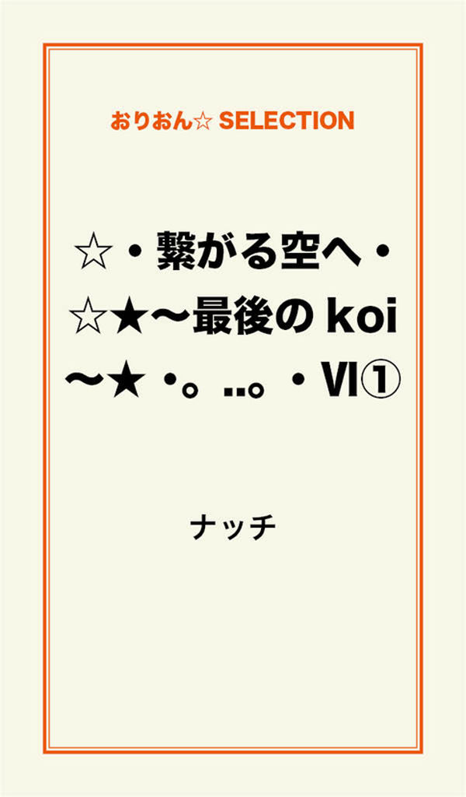
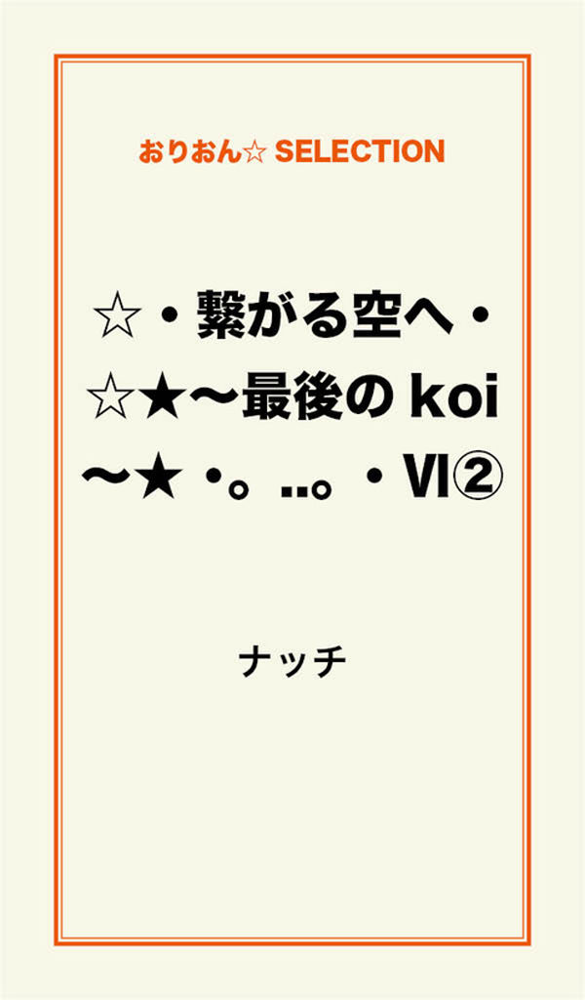

| ☆・繋がる空へ・☆★～最後のkoi～★ ･｡..｡･Ⅵ 完全版 | |
| ナッチ | |
この本は横書きでレイアウトされています。
また、ご覧になる機種により、表示の差が認められることがあります。

:*:・:*:・:*:・:*:
繋がる空へ
:*:・:*:・:*:・:*:
:*:・:*:・:*:・:*:
私は、短大を卒業し、この春から系列大学の編入生となった。
新しい校舎、慣れない講義、新しいクラスメート。
その独特の雰囲気に、珍しいくらい馴染めない自分がいた。
今の心の拠りどころは、修（シュウ）だけ......。
彼の存在だけが、今までと全く変わることなく私を支えてくれていた。
最近、修に会うと弱音や愚痴を漏らして甘えてばかりで......。
いけない！
自分で選んだ道なのに......まだ、始まったばかりなのに......。
そう思いながらも、元気が出ない日々が続いていた。
「ハァ～...... 」
「どうしたんだよ、和紗（カズサ）大丈夫か？ 最近溜め息ばかりついてるよな......幸せ逃げるぞ！」
「何？ ソレ！？ 何？ 何？ 幸せ逃げるって......何！？」
「聞いた事ないか？ 溜め息つく度に、幸せが逃げて行くって......それが本当かどうかなんて分からないし、誰に聞いたかも忘れたけどな」
「そうなんだ～知らなかったなぁ......ハァ～ヤダ～！！ また溜め息ついちゃったよぉ」
自分の口を塞いだ！
週末は、修とホテルに泊まって ゆっくりと過ごす。
私には、この時間しか安らぎを感じられないと思うくらい、幸せで大切にしたい時間だった。
何をする訳でもなく、ただ、二人でベッド寝転び本を読んだり一緒にテレビを観たり 話しをしたり......。
お弁当を作って持ち込んだり好きな食べ物をテイクアウトして週末は、二人でマッタリと過ごした。
コレって......！？ もしかして？？ マンネリ ！？！？！？
マンネリって、こういう事を言うのかなぁ......。
短大の時に友達がよく言っていた。
付き合いが長くなると倦怠期が来て、お互いが空気みたいな当たり前の存在になって、トキ☆メキ☆も感じないって......。
でも、それとは違う！
私は修と離れると、また直ぐに会いたくなるし、トキ☆メキ☆も、ちゃんと感じているから......。
私は、今も変わらず修が大好き！
いつも、いつでも一緒にいたい！
少しの時間でもいいから傍にいたい！
二人の時間が本当に愛しい......。
でも............修は、どうなんだろう？
最近の私は、溜め息ばかりで自分で選んだ進路にも未だ目標を見い出せないでいる。
そんな私を隣で見ていて どう感じているのだろう？
このままじゃ私......修に嫌われちゃうかも！
修が好きになってくれた私から今はどんどんかけ離れて行く気がして......不安になるよ......。
「ねぇ......修、私のこと好き？ ......」
「うん......」
「何か......気持ち、こもって無いね......」
「は！？ ......何だよ突然？ 今、本読んでたからだよ！ 好きだよ......和紗......、どうしたんだ？」
「分かんないよ......」
「どうしたんだよ突然......何で、泣いてんだよ......？ 何かあったのか？ 隠さないでちゃんと言えよ！」
「ごめん......本当に何でもないよ、私の問題なんだ......。今の生活に、やりがいが感じられないの......自分のしている事に自信が持てなくて情けなくて......きっと こんな自分じゃ、修にも嫌われちゃうって思ったら......急に、悲しくなって......」
「そっかぁ......和紗の気持ち、分からなくはないよ。俺だって仕事で失敗したり、嫌な事があって和紗に愚痴言って甘えてさ......とうに嫌われてるかと思ってたよ。大丈夫！ 俺の気持ちは変わらないから。 どんな和紗でも、ちゃんと受け止めて行くから。和紗がいつも優しくしてくれるように......俺も和紗のことを、ずーっと守って行くから安心しろよ！ いいんじゃないのか？ 今は辛いかも知れないけれど、こうやって悩む時間も必要何だよ きっと。そうして和紗は、いつもパワー溜めているんだろう？ 少し先の明るい未来に向かう為にさっ！ 焦るなよ、大丈夫だから！」
「修......ありがとう。修に話して、本当に良かった......」
でも、涙は止まらなくて......。
悲しい涙から、嬉しい涙に変わって行ったから......。
やっぱり修は、私の安心出来る場所なんだ。
もう、不安なんて感じない！
そんな気持ちどこかに行っちゃったよ。
修がシャワーを浴びに行き、私は、修の読みかけの本に手を伸ばした。
今日は、自己意識を向上させる内容の本だ。
他には、経済や技術についての本も読んでいた。
修の本は、私も借りたりするけれど確かに勉強になる。
かなり難しい内容の物が多かった。
私は......と、言うといつも大好きな携帯小説を読んだり、後は、海外や日本のファッション関係の雑誌が殆どだった。
修もファッションには興味があるみたいだから、私はMEN'S の雑誌もたまに持ち込んだ。
今月号......今、気が付いたけれど、な......なんか、凄い......こんな特集があるんだぁ～。
「すげーな......」
「！？！？ ......し、修っ！！ いつ、あがったの......？」
上から覗いている修と目が合って、驚いて声が......声が、ひっくり返ったよ！
「試してみるか？」
「エッ？ 試すって、コレを！？！？」
「嫌？」
「嫌って......む、無理かも......」
「なぁ、和紗っ......」
「エッ！？ エッ、ちょちょっと待って！ 修、まっ......待ってよ！！」
「やろうよ............」
嘘ーーーっ！！
......そういえば、前に、椎香（シイカ）が言ってたなぁ......。
私がコンパニオンのバイトでバニーガールは、お尻が垂れてるから出来ない！
って、言った時だ。
「和紗は、正常位のセックスばかりしてるからじゃないのぉ？ ダメだよ～！」
って......それって、嘘？ それとも、本当？
だったら、嫌だなぁ～。
このまま、ずーっと同じようなセックス続けたら お尻は垂れて行く一方なのかな？
それは、困る......頑張ってみるか......もういい......恥ずかしいなんて思わない！
修とだったら......私は何でもするよ！
修、凄い......優しいのに、強くて少し荒々しい。
こんな一面もあるんだ。
で、でもーっ！！
「キャハハッ！ごめ～んっ！！ ソレは、勘弁してぇ～！ 足上がらない、足がつりそう......」
「大丈夫......？」
「うん、大丈夫......足が吊る寸前だったよ。ねぇ～、修は目を閉じてて......今度は、私がしてあげるよっ♪」
いつも、修が私にしてくれている事を逆にしてあげた......。
そっと口づけをして、優しく......ゆっくりと唇を這わせ愛撫する。
......男の人も胸って感じるんだ？
修......クスクス笑い出しだした。
「ダメ？ 耐えられないの......？ 修がいつも私にしてくれてる事なのに～笑っちゃダメだよ！ ちゃんと感じて......」
「和紗って、いつもこんな気持ちでされてんのかよ！？ お、俺耐えらんねーっ！ ずーっと我慢してたし、くすぐったくてもう限界！！ ヤメテ～和紗！！」
「ダメ！ 止めない！ 主導権は、私だから！！」
何か結構面白くなって来た～♪
たまにはいいかも......こんな風に遊んで学んで？みたいなセックスも......。
私が、修の上になって ゆっくり......ゆっくりと攻める。
アァァン......ッ。もう、自分で感じちゃうよぉ～♪
修も私の動きに合わせて上下させて来る段々と激しく......今度は座りながら......揺れ──。
そして最後は、バックで──。
「ハァ、ハァハァ......ッ和紗！！ もうイっていい？ ハァ、もう我慢できない......ウゥッ......」
「修......、アァ......ァ......イって......──っ」
────────。
ハァ～......凄い！！ スポーツ超えた！って、感じ......。
ハンパじゃ無い運動量で汗かいちゃった！
気持ち良かったけれど......疲れたぁ～......。
「修......？ どうだった......？」
「良かった......和紗、上手いな！」
「上手い？ フフン......修が、いろんな事を私に教えてくれたから上達したんだよ～♪」
修と付き合い始めて、もうすぐ二年になる。
私達は、恋愛もセックスも二人で沢山の経験を積んで覚えて来たね。
修で良かった......修だから、幸せだったんだよきっと......。
貴方と沢山の事を経験して行く事が本当に楽しくて充実していて......こんな風にひとつひとつ積み重ねて来た想い出は、全てが輝いていたね。
そんな時間の中で、私達は一緒に大人になって行けたんだね......。
ずーっと永遠に......今のまま変わらず、ただ年を重ねて行く事。
それが大人になると言う事......そう感じていたのかも知れない。
私達は、楽しい今の未来を見ていたはずなのに......そう信じて疑いもせずに時は流れていたのに......。
あの頃は、早く大人になりたくて仕方がなかった。
何故だろう......？
楽しかったあの頃のままで、いられたらならば......。
今は、どんなにそう願っても叶わない事なのに
『大人になる』
と言う事が、どんなに残酷な未来であるか想像すらしていなかったんだ......。
もう直ぐ其処まで迫って来ていたあの出来事が......私達の運命を大きく動かしていったんだ。
９月。
修は、会社から10ヶ月間の東京研修を告げられた......。
「どうした......？ 溝口？ 嬉しくないのか？ 東京研修は、出世の可能性があるから行けるんだぞ......分かってるな？ 迷っている場合じゃないぞ！ しっかりと、やって来い！ いずれ戻って来られるんだから......いいな？」
「はい、ありがとうございます。頑張って勤めて来ます」
和紗に......今の和紗に転勤なんて言ったらアイツ......どうなるんだろう？
今月末には引っ越して、東京の寮に入る事になる......。
ギリギリまで待って知らせるよりは、今日言わないと......。
和紗が、どう受け止めて どうして行くのかが......分からなくて俺も不安だけれど、しっかり見守ってやらなければ......。
時間が許す限り傍にいて支えてやらなきゃいけないよな......。
辞令が出た次の日、俺は、和紗に打ち明ける決心をした。
いつものようにデートを楽しんだ土曜の夜、夕食を済ませ、いつものようにホテルに入る。
今日１日、俺は、和紗を見ながら何度も泣き出しそうになるくらい胸が締め付けられていた......本当に辛かった。
今はもう......和紗の笑顔も、小さな癖も、優しさも、全てが当たり前のように感じてしまっていたけれど、こうして、離れてしまうと言う現実を突き詰められて......。
馬鹿だよな！
改めて思うんだよ......。
和紗がいないとダメなのは、自分の方じゃないかって......。
情けねーよな、もう......我慢できねぇよ......。
部屋に入ると直ぐ、俺は、和紗を抱き締め思い切り声を上げて泣いたんだ......。
和紗に転勤の事を打ち明ける時のシュミレーションとは、全く違った自分の行動に戸惑うくらいに......。
どうしたんだよ、俺......。
和紗は、何も言わず俺を抱き締めずっと背中をさすってくれていたんだ。
その優しさが嬉しくて......和紗と言う女性の存在が本当に有り難くて......自分の感情を隠す事無く打ち明けられる和紗の大切さに、俺は気が付いたんだ。
やっぱり......離れてダメになるのは、俺の方なんじゃないか......？
本当にそう思ったんだ。
「ごめんな......和紗」
「修、どうしたの？」
「言うのが辛くて......」
「言って！ お願い......辛いなら、隠さないでちゃんと話して」
「和紗......俺、東京に転勤になったんだ......」
「エッ......？ 嘘......でしょ？ ......」
和紗は、その場にズルズルと座り込んだ。
「こんな事、嘘付くかよ。なぁ......和紗、一緒に東京に来てくれないか？ 俺、和紗が傍にいないと不安なんだよ......俺自身も和紗が必要だし 置いて行く和紗はもっと心配なんだよ......」
俺、何言ってんだよ......そうじゃないだろ？
そんな事、言ったら和紗困るだろ？
頭の中では、分かっていた......。
でも、出てくる感情と言葉が そうはいかなくて......。
どうしようもないんだよ......。
私は、床に座り込んだまま溢れ出す涙を拭くこともせず......泣き続けた。
修がいなくなるなんて......私から離れてしまうなんて考えられない！
嫌だよ......嫌！ 嫌！ 嫌！ 絶対に嫌だ！！
「嫌だよ......行かないで......」
「少し落ち着いてから、ちゃんと話そう。和紗......アイスティー飲むか？」
「......うん、ヒック......飲む......」
か細い声が震えていて......俺は、本当に切なくてどうしようもないよ......。
和紗、苦しいくらいに愛してるよ......。
それから、二人で朝方まで話し合ったんだ。
途中、何度も泣き出しては話が途絶え、言葉だけでは、埋め尽くせない空白がたまらなくて......。
俺達は、泣きながら何度も体を重ね合い、長い長い時間をかけお互いの気持ちを理解し確認しながら、結論を出していったんだ。
俺達が出した結論は、当たり前のようだけれど、『遠距離恋愛』。
いずれ、この当たり前で普通の結論が辛くて悲しい結末になってしまうなんて......。
俺達だって、周りの人達だって誰もが思わなかったはずなんだ......。
もう、泣きすぎて目が腫れて開かないよ......。
たった10ヶ月......そう、10ヶ月離れて暮らすだけで、修は帰って来る。
それに、決して逢えない距離ではない......。
逢いたくなったら、逢いに行けばいい......。
この東京への転勤は、きっと......修にとって、とても大事な事に違いない。
だから、応援しなくちゃ......我が儘なんて言っては、いられないんだ！
今、この時に修の支えになる事が出来なければ この先も......修の人生を支えて行く事は出来ない。
そう言う事なんだ。
私に出来る事......修の帰りを待つこと。
離れていても支えになって行く事。
修が東京で、仕事や勉強に打ち込めるような環境を作ってあげる事なんだ。
出来るのかな......？
今の私は、最悪な状況......。
だから、修は無理な事だと分かっていながら私を連れて行きたいと言ってくれたんだ。
分からない......この先どうなるのかなんて......。
二人の気持ちが今のようにシッカリと繋がってさえいれば、きっと大丈夫！
乗り越えて行ける！！
今は、そう信じて頑張るしかないんだ。
あと１ヶ月、時間が許す限り修と過ごしたい。
どんな事でもいい......どんなに小さな出来事でもいいから、一つでも多く沢山の思い出を作りたい。
二人の絆をもっともっと強く繋ぎたいよ......。
修......、愛してる。
大好きだよ！
お願い！ 離れていても、私のことを決して忘れないで......。
必ず戻って来てね、私の元に戻って来て！
あれから二週間があっという間に過ぎ去った。
時間が過ぎるの、早過ぎるよ......。
私は、修の仕事が終わる時間に合わせて毎日車で迎えに行った。
残業で遅くなる日も、付き合いで飲む日も必ず迎えに行って短い時間だけでも話をして抱き締めてキスを交わしてサヨナラした。
修と別れた後は......やっぱり毎回涙した......。
修はきっと、泣きながら帰っている事も知っていたよね......？
私が家に着いて暫くすると必ず心配して電話を掛けて来てくれたから......。
「和紗......今日も、ありがとうな。でも、無理だけはするなよ 毎日大丈夫か？ 大学もちゃんと行けよ？」
「うん、無理なんか全然してないよ！ 大学だって大丈夫だから、ちゃんと単位と資格も取って卒業してみせるからね！ そうしたら......私がちゃんと卒業出来たら......修が帰って来たらでもいい。一緒に住みたいなぁ。毎日切ないサヨナラしなくてもいいように、ズーッと一緒に居られたらいいのに......」
「そうするか......？ 俺は、いつでもいいよ！ 和紗さえ良ければ、もうズーッと待っているんだし......離れたら尚更恋しくなるんだろうな......大丈夫か？ 和紗......待っててくれるよな？ 俺、本当に心配になって来た......」
「大丈夫だよ！ 私の気持ちは、変わらないし修以外の男性（ヒト）なんて考えられない......絶対に！」
「俺も同じだよ。和紗以外の女は考えられない！ 和紗は、特別だ......中二の頃から好きなんだから凄いよな？」
「絢（アヤ）さんは？」
「絢かぁ～。......絢も特別ではあるけれど和紗とは全く違うよ！ 絢は、親友か恩人だろうな。俺が一生変わらず愛して行くのは、和紗だけだよ......誓うよ」
「ありがとう......修......？ 離れていても私が不安にならないように、いつもいつも『好きだ』って、言い続けていてね。お願いだよ！ 電話でもいい......メールでもいいから、毎日必ず通信ね！」
「うん！ 分かったよ、必ず気持ち伝えるよ......毎日なっ！ じゃあ寝るか？ 明日も早いしな......」
「明日なんか来なきゃいいのにね～。別れが近付くと思うと、そう願っちゃうよ......」
「なぁ......、和紗？ 最近、俺思うけれど離れているからいい事ってあるかも知れないよ......冬休みは、東京に来いよ！ そして、年末は一緒に帰郷ってどうだ？ なんか、そういうのも憧れたりしないか？ 嫁さんと一緒に帰郷みたいなさ......」
「いいね～！ 憧れる！ 東京から、一緒に帰郷かぁ......こんな事が無かったら経験出来ない事だもんね！ 何か、急に楽しみになって来たよ！」
「和紗、喜び過ぎだよ！ でも、俺頑張るから......一生懸命頑張って成果も出す。お金も貯めて和紗と生活出来るようにする。冬休み泊まりに来いよ！ 俺も一緒に泊まってホテルから出勤するからビジネスホテルになるけどな！」
「いいよ！ 嬉しいなぁ～♪ 私もバイト探さなきゃ！ 修だけにお金かけさせる訳には行かないよ！ ......東京に行ったら、寮だからちゃんとした食事は食べられると思うけれど修、体だけは気をつけて無理し過ぎないでね......熱とか出さない......でね......ゥ、ゥゥゥ」
「泣くなよ！ 大丈夫だから！ 俺、体は丈夫だし！ 和紗の方が心配だよ......張り切り過ぎて疲れたり、いつも頑張り過ぎて無理するから......俺、東京行く前に和紗の両親に会いに行ってもいいか？ 事故の時以来、ゆっくり話してないしな......結婚の挨拶は、まだ早いけれど和紗の事をちゃんとお願いして行きたいんだ」
「修......ありがとうね、私のこと いつも大事にしてくれて。両親に話しておくよ、修のお母さんも寂しくなるね......冴子先生が、きっと支えになってくれるよね。でも、もし心配な事があったらいつでも言って！ 私、直ぐにお母さんのところに行くから！」
「ありがとうな......東京行く前に また三人で食事でもしような！ 家に来いよ」
「うん！ そうしよう。お母さんと都合いい日話してみてね！ メニュー決まったら教えて、お土産持参するから。私、修のお母さん大好きだよ！ 一緒にいて楽しいのに会話に年の差感じないんだもん。凄く憧れるよ、私も修のお母さんみたいに年を重ねて行きたいなぁ～」
「え～！？ それは、ちょっと......だってな、あの年で俺にウインクしたり朝からワイドショー観て若い俳優にキャーキャー言ってんだぜ......。まぁ......暗いよりはいいかもしれないけどな」
「アハハ！ やっぱり合うかも、私もイケメン大好きぃ～♪ あっ！ もう、こんな時間！？ ごめんねっ、長くなって......また、明日ね おやすみ修......」
「おやすみ和紗、また明日な！」
電話を切っても直ぐ近くに修を感じる。
温かな気持ちで幸せだよ......私。
修と私なら、きっと大丈夫！
遠距離恋愛も乗り越えていける......。
私は、決意した！
修が東京に行く日は絶対に泣かない。
そう決めたんだ。
それから二週間が瞬く間に過ぎた。
修は、私の両親に留守の間、私の事を宜しくお願いしますと頭を下げ言ってくれた。
何となく両親もその意味を察して落ち着かない様子......。
でも、二人で微笑んでくれたんだ。
出発前夜、修の家に招待され、一緒に鍋をする事になった。
私の母が、お土産にとお肉を用意してくれた事を電話で修に伝えてあった。
私も、ミニケーキの詰め合わせをお土産にした。
鍋は、とても美味しくて三人で沢山食べた！
でも、私が持って行ったケーキを出された頃には......まだ、食べられる！
そう思えたんだ。
鍋もいろんな野菜が沢山入っていたから消化も良かったのかな～。
修のお母さんは、料理も上手で鍋の他にも沢山のおかずを用意してくれていた。
ちゃんと栄養面も考えてくれているんだと分かる......。
修は、こんなに優しいお母さんに育てられたんだなぁ......。
だから修も、優しいのかな......。
ケーキを食べながら女二人でイケメントークに花を咲かせていると、修は、呆れて逃げ出しソファーに座ってテレビを観ていた。
気が付けば、夜の10時近くだった......。
明日は、とうとう修が東京に発つ日......。
どうして、修はこの日を選んだんだろう？
ずっと気になっていたら......帰り際、玄関で修が話があると言い出した。
私も、お母さんも急に緊張する......。
「東京から帰ったら結婚を前提に付き合いたいと思っているんだ......母さん、宜しく頼むな......」
「よ......宜しくお願いします！」
突然で驚いたけれど、私もすかさず言葉を発した！
「分かったわよ......。和紗ちゃん、まだまだ未熟な息子がこんな風に言っているけれど、宜しくお願いしますね......。頼りないかも知れないけれど、東京から帰って来たら少しは逞しくなっているのかしらね！ 二人で期待して帰りを待っていましょうね♪」
私は、修のお母さんと笑みを交わした。
修が車で送ってくれて、私達はいつものように別れのキスをする......。
繋いだ手、まだ、離せない。
大好きだよ......。
切なくて苦しくて言葉が出ない......。
修の手が私の手を強く握り返す。
きっと気持ちは、伝わっているんだね......。
「明日......」
「......迎えに来てくれるんだろ？ 帰りは、一人で大丈夫か？ 無理なら......」
「大丈夫！ 私、明日は泣かないって決めてるし大丈夫だよ......。それに、みんなも見送りに来るから誰かはいるし......大丈夫！ 心配ないよ」
「うん......分かった」
「修、今日はありがとう！ 出発前日なのに遅くまで......ごめ......っ......」
修がいきなり私を抱き締めて......。
涙が......我慢していた涙が溢れてしまう。
そして私達は、涙味の別れのキスを何度となく繰り返したね......。
出発の日、９月末の良く晴れた日だったよね......。
でも、少し寒い日だった事を私は今でも覚えている......。
「おはよう！ あっ、おはようございます！ 昨日は、沢山ご馳走になって......ありがとうございました。とっても美味しかったです！」
私は、車を降りて修とお母さんに挨拶をした。
「昨日は、楽しかったわねぇ♪ また、来てちょうだい！ 今度は、お気遣い無しでネ。和紗ちゃんのお家の方にも、ごめんなさい......伝言になるけれど宜しくお伝え下さいね。今日は迎えにまで来てもらって......ありがとう。気をつけて行って来るのよ。和紗ちゃんは、帰りも気を付けてね......大丈夫？」
「はい！ 大丈夫です。今日は、泣かないって決めているので......でも、もしもの時には見送りに来ている友達もいるし......大丈夫です」
「そうね、無理はしないようにしてね......頑張ってシッカリやって来なさいよ、修！ こんなに可愛い彼女待たせているんだからね」
「分かってるよ、言われなくても...... 母さんも体に気を付けてな。冴子先生には、お願いしといたから。無理だけは、するなよな......」
「はいはい、冴子の管理は厳しいから大丈夫！ 心配ないわよ」
二人でお母さんに一礼し車に乗った。
新幹線ホームに着くと、修の中学と高校の野球部の友人との友人も来てくれていた。
友里と彼氏の徳永君......。
私達とダブルデートをしたり、スキー旅行に行ったり沢山の思い出がある......。
修は、二人と固く握手を交わす。
ヨーコも来てくれた！
仕事を抜け出して来てくれたんだ......。
ヨーコは今、駅ビルの化粧品コーナーで美容部員をしている。
そして、ヨーコの彼氏もここにいる......。
野球部の柴山君だ。
最初は、大嫌いだったはずなのに......本当に不思議？
今は、付き合っている。
でも、嬉しいよ♪
柴山君は、正直でいい人だしね。
私は、何か安心......。
二人は結構似合っているよ！
私の眼に、今この別れの光景はまるで昔の映画のフィルムが、ゆっくりと回っているかのように見えていた。
細々と途切れた場面の繋がりのように映って、胸に焼き付いた。
私は、修の出発をみんなより少し離れた場所から見守っていた。
修が......どうか、健康で、仕事にも恵まれ、今のように、いい人達に囲まれて。無事、10ヶ月間を過ごして帰って来られますようにと......。
ずっと、ずーっと願いながら見送った。
それが、遠距離恋愛の始まりだった。
修が東京に発ち、１ヶ月が過ぎた頃。
私は、自分の運命を大きく変える二人の女性と出逢ったんだ......。
やる気が出ない......友達を作る気力すらない......大好きな買い物にすら行く気持ちも起きない......そんな毎日。
また、悲しくなって来たよ。
廊下にある自分のロッカーから涙をこらえ教科書を取る......。
ドンッ！！ バンッ！！
誰かが私にぶつかって、私の手がロッカーに思い切り強く叩きつけられた。
「ごめんなさい！！ 大丈夫ですか！？」
「うん......大丈夫......。私が、廊下にボォーっと立ってたのが悪いの、気にしないで......。かえってごめんなさい」
講義室に入り何時も通りに講義を聞いている時だった......。
アレ？ ......無......い......石がないっ！！！
アクアマリンの石が指輪の中心から消えていた！！
嘘ーーーッ！！
体が震え出し止まらない......。
アッ！ もしかしたら、さっきロッカーでぶつかった時......思いっ切り手をぶつけた時に落ちたのかも！！
私は、急に立ち上がり講義室を走って抜け出した！
そのまま必死に走って廊下にある私のロッカー前まで行き、這いつくばって小さな石を必死に探した！
無いかも......見つからなかったらどうしよう......修からもらった大切な指輪なのに......。
ダメ！ 絶対に見つける！！ 手が震えて涙も溢れてくる......。
何故か......とても自分の姿が悲しかった。
今の自分が惨めで哀れで悲しくなった。
ん......！？
一瞬、ちょっと離れた所が光って見えたような......。
暫く同じ方向を見てもう一度、光らないか待ってみた......。
光った！！ 何処......？ 何処！？ 何処ーーー！？
あっ......？ あったー！！ 見つけたよぉー！！
私は、そのまま廊下に座り込み、小さなアクアマリンを握り締め声を殺して泣いた。
廊下の大きなガラス窓からは、穏やかな秋の日差しが差し込み温かく私を包む......。
廊下に敷き詰められたローズピンクの絨毯も、フカフカと柔らかで優しい......。
人の温かさではないそんな自然や物の優しさに癒やされて、今の私は、泣いてしまうんだ。
これが......本当の孤独と言うものなのだろうか？
「......あのぉ、大丈夫ですか？」
突然、誰もいないはずの廊下から声がして驚き顔を上げると、目の前には、さっきぶつかった人が立っていた。
確か......同じ学部の一緒のクラスの......あまり学校に来ない人だ。
......名前は、そうだ！！
浜田 公美（キミ）ちゃんだ！
「うん！ 大丈夫......ごめんね、驚かして......」
「急に講義抜け出したから気になって......もしかしたら、ぶつかった時に怪我したとか、具合悪くなってたら......どうしようって思って出て来ちゃった。どうしたの？ 良かったら少し教室に行って話さない？ 今、誰もいないはずだから......」
「うん......行く......」
ありがとう......公美ちゃん。
公美ちゃんは、学食前の自動販売機で私にアイスティーを買って渡してくれた。
それが、とても嬉しくて......でも、それが泣いた後には、いつもアイスティーを渡してくれた修を思い出させて......またまた号泣しちゃったんだよ......。
公美ちゃん、ごめんね......。
教室には、二人きり。
山の中にある大学は余計な音がいつも無い静かな環境だった。
私は公美ちゃんに講義中、指輪のアクアマリンが取れていた事に気付き抜け出した事と、最近始まった遠距離恋愛の事を打ち明けたんだ。
公美ちゃんは、一緒に泣きながら私の話を聞いてくれた。
そして私が話し終わると、こう切り出したんだ。
「成ちゃん、良かったら私と一緒にバイト始めない？」
成、成ちゃん！？
聞き慣れない その響き......。
でも、分からなくはない。
私の名前は、成宮 和紗（ナリミヤ カズサ）。
だから、成（ナリ）ちゃんなんだ。
その成ちゃんと言う初めての響きが新鮮で、私を目覚めさせたのかも知れない......。
きっと、そうだ！
新しい世界に歩み始めた事にやっと気付いた気がした......。
今までベールが掛かって見えていた世界が急にクリアに見え出した！
私......今まで何していたんだろう......？
私らしくない！
その事にすら気付く事も出来ないくらいに落ち込んでいたのかな......。
でも、変わらなきゃ！
今、変わらなきゃいけない！
元の私に戻らなきゃ！！
「公美ちゃんのしてるバイトって何？ 私も出来るようなバイトなのかなぁ......？」
「大丈夫だよ！ 成ちゃんなら向いていると思う！ 性格明るいし素直だから人間関係も上手くいくよ！ 私も夏休みから始めたばかりなんだけれど、主な仕事内容は電話の受付かな？ 社員さんと全く同じ仕事を定時の五時から私達バイトが引き継ぐの。凄く勉強になるよ！ このバイトこなせたら、この先どんな仕事にも通用すると思う就活する時には最大の強みになる事間違いない無し！ 今ね......、一緒にバイトしている先輩達がゴッソリ辞めちゃうところで人探してたんだぁ～。四年だし、卒論なんかで忙しくなって来て世代交代したいって相談されてたんだ。でも、女子で残るのが三年の私一人になっちゃうから先輩達も心配して辞めるに辞められない状況なんだ......助けて！ 成ちゃん、お願い！！」
「私こそ、宜しくお願いしたいよ！ 丁度、今バイト探していたし......でも、事務系のバイトは初めてだから ちょっと不安だなぁ～。でも、公美ちゃんとなら楽しく仕事出来そうな気がする！ 私、やってみたい！ いいかな！？」
「良かった～！ 成ちゃん ありがと～♪ 早速だけど今日行ってみない？ 履歴書だけ用意してもらっていい？ 見学してもらって成ちゃんが良ければ今日即決で履歴書出して来ようよ！ 履歴書は、形式で......ほら、ちゃんとした会社だから一応必要なの。でもね、私の紹介なら顔パスも同然だから大丈夫なんだ～♪ 私、こう見えて信頼厚いんだよ！ 仕事もキチンとこなすから社員さんにも可愛がってもらえて来たの......凄くやりがいあるから頑張ろうよ！ 一緒に」
公美ちゃんが嬉しそうに言ってくれて私もいい気分になれた。
頑張ってみようかな？
私は、公美ちゃんと４時半に会社の下で待ち合わせの約束をした。
それから、私は大学を出て修と一緒に指輪を買ったアクセサリーショップへと向かった。
早く石を入れてもらわなきゃ！
早く直してもらいたい......じゃないと......私、不安で何も手につかないよ。
でも......気のせいかな......？
アクアマリンが取れてしまうなんて......何か......不吉な予感。
ダメダメ！
悪い方に考えていたらドンドン悪い方に引き込まれていくよ！
そんな風に自分に言い聞かせながらショップの中に入る。
「いらっしゃいませ！ ......アッ」
「こんにちは、園田（ソノダ）さん！ 今日......実は、お願いがあって来たんです」
「どうしたの？ ......ここでは何だから、ちょっと待ってね。オーナーに応接室借りる許可もらうから！」
そう言い残し、園田さんが店の奥に消えた......。
私は、ふとカウンターの上を見上げる。
☆
............アッ！ あの時の高級な指輪だ。
まだ、飾ってあるよ。
でも、当たり前か！
だって一千万円だもんねぇ～☆
売れる訳が無いし！
アレは、お店の宣伝用なんだろうな。
輝きが違うもん......☆
園田さんがOKをもらい私を応接室に通してくれた。
「今日は、どうしたの？ お名前は......成宮さんでしたよね？」
「はい！ 成宮和紗といいます。あの......、アクアマリンが取れちゃったんですぅ......」
やだ！ 涙出て来ちゃったよ......。
「そうなの！？ ......それは、申し訳ございませんでした！ 簡単に取れてしまうなんて......必ずキチンと直してお渡ししますから！ ごめんなさいね......和紗ちゃん。アクアマリンは、あるのかな？ 指輪見せていただいてもいいかしら......」
「はい......、アクアマリンもちゃんとあります。でも、私が悪いんです！ 私がロッカーに思い切り手をぶつけてしまって......それで取れちゃったんです......」
「そうだったの......でも、大丈夫よ！ そのくらいの事で取れるなんて、こちらの作り方に問題があったんだわ！ 直ぐに直してもらうから少し待ってて下さいね」
私は、園田さんが入れてくれた とってもいい香りがする紅茶を飲みながら一人で待っていた。
私の大好きなアクセサリーショップ。
いつも一人でブラっと立ち寄っては、店内の商品を眺め宝石の輝きに癒やされ、同時に洗練されたデザインからは、沢山のインスピレーションを受けてデザインの勉強にも生かした。
でも、このショップの商品を買ったのは この指輪が初めて。
修が、私の20歳の誕生日にプレゼントしてくれた......。
大切な指輪なんだ。
プレゼントの希望を聞かれた私は、迷わずこの指輪！ そう思った。
修を連れて来て買ってもらったんだ......。
本当に嬉しかったなぁ～♪
私、本当に幸せだった......。
プレゼントの指輪をラッピングしてもらい待っている間に修と喧嘩したんだよね。
エンゲージリングを二人で見ながら意見を言いあっていたら喧嘩になりそうになって......。
そんな事までも今では、いい思い出になっちゃった......。
その時、担当の店員さんが園田さんだった。
園田さんの接客は、素敵だった......。
私達がお店を出る時に、こっそりと私に掛けてくれた一言が修との喧嘩でトゲトゲした私の心をフゥ～って、楽にしてくれたんだ。
「......仲良くねっ☆ 是非また、お二人で入らして下さいね！」
その一言が今でも忘れられない......。
あの日から、園田さんは私の憧れの女性。
園田さんみたいな接客が出来るようになりたい！
園田さんみたいに、素敵な大人の女性になりたいと思って努力を始めたような気がする......。
トン！ トン！
ドアをノックして園田さんが戻って来た。
「和紗ちゃん、指輪直すの一時間くらいかかりそうなの......ちゃんと磨いてもらうようにお願いもしてきたから新品以上に輝いて戻って来るわよ！ 今から時間あったら一緒にランチしに行かない？ お詫びも兼ねて私にご馳走させて！ お願い！！」
「そんなぁ......お詫びだなんて！ お詫びはいいですぅ......でも、一緒にランチ行きたいです！ 私、園田さんと一度ゆっくりお話ししてみたかったから......夢が叶ったみたいで凄～く嬉しいです！！」
「エッ！？ 夢？ なんか......凄く大袈裟じゃない？ 和紗ちゃんて面白いね～！ じゃあ、行こ行こ！ お店の入り口で待っててね～、バック取って用意して来るから！」
「ハイッ♪ 待ってま～す！」
私達は、直ぐに意気投合！！
食べ物の好みも合っていたし、その日は二人でパスタランチを食べに行った。
「ここのパスタ最高に美味しいでしょう？ 接客業だとニンニクとか気になるけれど、マスターがちゃんと考えてくれていてニンニク無しでもこんなに美味しく作ってくれるんだよ～♪ ねぇ～、マスター♪」
「今日は、随分と機嫌がいいねぇ～♪ 可愛いお友達と一緒だからかな？」
「そうだよ♪ 可愛いいでしょ、私の友達♪ 和紗ちゃんだよ！」
「可愛いとかって言わないで......違うしテレますぅ......和紗です、初めまして。パスタ凄く美味しいです！！ 感動ッ！！ 今度、友達も連れて来ますね 食べさせてあげたい♪」
「オッ、それは良かった！ 美味しいって言われるのが本当に嬉しいよ！ ありがとう～
また、ゆっくりお友達とおいで。 デザートくらいだけどサービスつけるからね！」
「嬉しいです♪ ありがとうございます」
「何かさぁ、今も思ったんだけれど......お店に入って来る和紗ちゃんを見ていていつも感じてたんだぁ～......何か雰囲気のある子だなぁ～って。和紗ちゃんって、いるだけで空気が変わるよ！」
「何ですか？ それって......？？ よく、分かりません......天然......って事でしょうか......？ それならば、よく言われています！」
「天然かどうかは、まだ分からないよ！ だって、私達......今初めてゆっくり話ししているんだよ～アハハッ♪ 面白いよね～、天然かもしれないね～アッ、ごめんね......でも、笑い止まらな～い。キャハハッ♪ こんな楽しいランチ久しぶり～ストレス発散出来たわぁ～♪」
「園田さん、そんなにストレスあるんですか？」
「そりゃあ、あるわよ......接客業だし......販売の成績もそんなにウチのお店はキツくないけれどやっぱり、気になるしね」
「園田さんは、完璧でストレスとか無いような気がしてました......でも、誰だって少しはストレス感じていますよね～分かります。ちょっとだけ......」
「フフッ♪ 分かった！ 和紗ちゃん独自の雰囲気と話し方の語尾に特徴があるんだ！」
「エ～ッ！？ そんな事言われたら話せなくなりますぅ......意識しすぎて......」
「誉めているんだよ！ 長所だよ！ だから自信持って！ 私ね、人の特徴と長所見つけるのは得意だから♪ 短所は......目を瞑る」
「それ！ いいですね～......短所は、目を瞑る......私もそうします！ ソレ、いただきます！！」
「ほら！ 語尾に落ちが付いて来るから面白くて笑っちゃうんだよ！ アッハハハハ～！」
キャハハハハ～！！
何か面白くて、面白いと言われちゃった私も一緒に笑った。
パスタのお店を出てアクセサリーショップに戻る途中、園田さんに聞かれた。
「和紗ちゃん、彼とは仲良く続いている？ 指輪してるって事は、上手くいってる証拠だと思うけれど♪」
「はい！ でも......今は遠距離恋愛中なんです」
「そうなの！？ いつから？ 最近？ ......」
「はい......先月からです。だから、指輪がこんな風になって急に心細くなって......ちょっと嫌な予感もしたりして......馬鹿ですよね......何か自分が情けないです。直ぐ泣いちゃうし......」
「仕方ないよ......。遠距離は辛いよね......私も経験あるから分かるよ。でも、もう遠～い昔の事......いつの間にか昔の事になってた！ 私も年取っているんだな～って、そういう時に思うよね。私、今年で26才になったんだぁ」
「園田さん、若いです！ 修と指輪買いに行った時、私と年は近いかな？ そう思っていて......二つか三つくらい上の22か23才だと思っていました！」
「そうっ？ 若い？ 嬉しい～☆ そう言ってもらえただけで午後の接客も頑張れるぞぉー！！」
あぁ......園田さん......シックで素敵な制服なのに......ゲンコツ作って両手上げて万歳じゃ、台無しだよ......。
でも、いいよね？ なんか、ハチキレタイ！！ 私も！！
青空パンチだーっ☆
今日は、何だか一日でいろんな事が起こっているなぁ～。
何かが......何か、大きな物がゆっくりと動き出したような気がしていた。
それは、私の運命が動き出した瞬間だったと気が付いたのは何時の事だったのだろう......。
公美ちゃんと園田さんとの出逢いが私の人生を大きく動かして行った事は、間違いないと思う......。
『いい人との出逢い』
それは、人の運命をも変えていくものなのかもしれない。
指輪は、アクアマリンの石を止めている爪が浅かったらしく お店の方が無料でお直ししてくれた。
きっと、園田さんがお願いしてくれたんだね......。
指輪は、キラ☆キラ☆と、数倍もの輝きを増して戻って来た！
嬉しくて......また、涙が出て来ちゃった......。
園田さんが、ハンカチを貸してくれた。
泣いている私が心配みたいで......お店の外まで出て来て見送ってくれたんだ。
私はオーナーと園田さんに深々と頭を下げた後、笑顔を作り、そして、振り向いて歩き出した！
それから、バイトの為に履歴書を買い、ファーストフード店に入って書き始めた。
履歴書用の写真は、いつも免許証入れに入れてある。
この写真を貼ったバイトの面接は今まで全て合格！
縁起のいい証明写真だった。
近所の写真館で撮影してもらった証明写真は、綺麗に写っていて高級そうに見えた。
だから、気合いが伝わるのかも知れないな......。
パウダールームで化粧を直して、ガムを噛む。
服装の乱れをチェックして......と、何か久しぶりに気合いが入って来たなぁー！！
今日の服装は、白いブラウスに濃紺のスカート。
ちょっとデザイン性のある、バルーンスカートだけれど、バイトの面接なら許される範囲。
まさに！ 面接スタイル！？ 凄い偶然！！
講義だけで実習が無い日だから、動きやすさとか心配しなかったからだった。
公美（キミ）ちゃんとほぼ同時に待ち合わせ場所に着いた。
公美ちゃんに直った指輪を翳（カザ）して見せた！
「良かったね～！ 成（ナリ）ちゃん。縁起いいねぇ～☆ バイト決まるよ、 きっと♪♪成ちゃんも、このバイト気に入ってくれますよ～に！！」
......、って！
私の右手を取って指輪に祈る公美ちゃん。
ウケるよっ！！
二人でエレベーターに乗り、６Ｆまで登った。
外装のデザインも流行りの、内装も白く新しいビルにあるオフィス。
「ちょっと、待っててね！」
公美（キミ）ちゃんがそう言って廊下の奥の社員用のドアらしき所へ入って行った。
暫くすると、ドアの隙間から公美ちゃんが笑顔を覗かせ手招きした。
私は、一気に緊張モードになる......。
廊下に面している受付がある部屋とは一転......。
オフィスの中は、お祭り会場！？ ......みたいな、騒々しさと慌ただしさだった。
ボォーッと立っていたら間違いなくぶつかって吹っ飛ばされるに違いない！
「成ちゃん！ こっち来て。一応、係長に電話して話してるから面接と言うか話聞いてね、後......自己紹介もしちゃって！ 宜しくぅ♪」
会議室まで横切る人をスルーしながら挨拶を交わす公美ちゃん。
「おはようございます！ おはようございます！」
公美ちゃん......凄く大きな声で何回も挨拶してる。
私は、つられて頭を下げるしか出来ない。
鳴り響く電話の着信音。
怒鳴るまではいかないけれど、激しく飛び交う会話。
書類を持ってオフィスを小走りで移動する女性達。
な、何だろう......？ このスピード感は！？
よく理解出来ない光景を眺めながら会議室のドアを公美ちゃんがノックする。
「はい！ どうぞ......」
男の人の声がした。
「失礼します！ 笹木係長、バイト希望の友達です」
公美ちゃんが私を見た！
「初めまして、成宮和紗と申します。宜しくお願い致します！」
私は、頭を下げた。
「いいよ、緊張しなくて......楽にしてなっ？ ここ、座って！」
関西地方の人かな？
そんな話し方だった。
「公美ちゃんは、時間あるのか？ まだバイト入らなくていいなら、ちょっと一緒に座って」
「はい！ まだ、時間はあるので大丈夫です。でも、忙しそうですね～今日も。さっき顔見られたから、忙しい時は呼ばれると思います！」
「そうだな、その時は行ってやってくれな！」
「はい！ 助けに行きま～す♪」
公美ちゃん......係長さんみたいな偉い人とも友達みたいに会話もしちゃうんだ......す、凄い！
「成宮さんだよね？」
「はい......」
「合格！」
「エッ！？ ......も、もう決まりなんですか？」
「そうだよ、バイトは社員と同じなんだよ。もう一緒に仕事を始めて３ヶ月以上経つ公美ちゃんには絶大な信頼があるからなぁ～。公美ちゃんの人柄と仕事に対する姿勢を見ていれば、どんな友達を連れて来るかも分かるんだよ。だから、合格！」
荷が重い......かも......出来るのかなぁ......。
私にこんな社員さんと同じ難しい仕事なんて......。
「成ちゃん、大丈夫だから！ 心配ないよ、私が仕事教えてあげるから！ 私だって最初は何も出来なくて電話に出るのも怖くて取れなかったんですよね、係長？」
「そうだなぁ～懐かしいなぁ......いきなり俺にヘッドホンかけて泣きそうな顔してた頃が......今じゃ、俺が泣かされそうになるくらいシッカリと厳しい仕事するようになってしまって......ククククク」
「何ですか！？ その泣き真似！」
「だから、合格ね！」
「笹木係長？ 明日からでもいいですか？」
「いいよ！ 成ちゃんの都合はどうですか？」
成ちゃ......ん......！？
「はい！ 明日からで大丈夫です。宜しくお願いします！ どうしよう......公美ちゃん宜しくね～！！」
「ＯＫ！ 任せといて。楽しくやろうね！ でも、仕事には厳しいからね、言っておくけど！」
「怖い先生がついてご愁傷様です。成ちゃん......」
「もう！ 笹木係長ふざけ過ぎですよ！」
「はい！ では、成ちゃん！ 明日は５時まで入って下さい。一日だけでいいかなぁ～、社員からバイトの講習受けないといけないから この会議室で講習しましょう。明日は......、恵美さんに指導お願いしておくからね。じゃあ、明日から宜しくお願いします」
「こちらこそ、宜しくお願い致します！」
「じゃあ、書類もらってから下まで送って行くね！ 笹木係長、成ちゃんの書類は恵美さん♪に、いただけば宜しいのでしょうか？」
「はい！ 恵美さん♪に、いただいて下さいね～」
「はい！ では、失礼致しま～す♪」
何か、ちょっと......テンション高めのバイトかも、気分↑↑上げて行かないと無理かもなぁ～。
私は、公美ちゃんに続いて恵美さんの所へ行き書類をいただいた。
そして、明日の講習をお願いしてから会社を出た。
「凄いね......公美ちゃんて......」
「そう思うでしょー？ でも、３ヶ月後には成ちゃんだって私みたいになってるよ！ 仕事が向いてたらきっと......もっと早く上達するよ！ 絶対に何か大切な物を得られるから、頑張ってみて！ ねっ♪」
「うん......、かなり不安だけど頑張ってみる！ 本当に宜しくね～、公美ちゃんだけが頼りだよ～！！」
「任せて！ 育ててあ・げ・る♪」
１Ｆの正面玄関まで公美ちゃんが送ってくれた。
明日から、私もほぼ毎日......しかも土日は、ほぼ毎週社員の代わりに10：00～残業だと20：00頃までバイトに入る。
平日は、４時間であまり稼げないけれど、土日が一日中となれば、かなりの収入になる！
修（シュウ）に......早く修に逢いたい......。
逢いに行きたい！
修...... 修......？
大好き。早く、逢いたいよ。
毎日 電話で声を聞いていても やっぱり寂しい......。
涙が出ちゃうよ......。
「修、今日ね、凄い一日だったんだよ！」
「何だよ、和紗ぁ？ 最近そんな活き活きした和紗の声聞いて無かったからな～嬉しい事あったんだろ？ 何だよ！ 早く教えろよ」
「うん......、あのね！ 今日、嬉しい事が二つもあったんだ～。一つは、修に指輪を買ってもらった時、担当してくれた店員の園田さん......覚えてる？ 今日ね、友達になれたの。一緒にランチまでして来たんだよ～！ 意外と面白い人でね、イメージ違った......でも、もっともっと大好きになれたよ～♪ やっぱり素敵な女性（ヒト）だったなぁ」
「そうか～、良かったな！」
「後、もう一つはね。大学で初めて出来た友達の公美（キミ）ちゃんに誘われてバイトをする事になったの。私、頑張るね！ 修に逢いに行く為にバイト頑張るよ......修......、逢いたい。大好き......。修に抱かれたいよ......ウ......ゥゥゥ」
「泣くなよ～、和紗......もう少しで逢えるだろ？ どうしても我慢出来ないか？ 俺、今週末帰ってもいいぞ......？」
「ごめん......大丈夫！ ちょっと甘えてみたかっただけ......でも、逢いたいよ......修に逢いに行きたい！ 私の我が儘で、修を帰らせるなんてしちゃいけないから......冬休みまで頑張るよ！ 土日は、これから一日中バイトになると思うんだ。沢山沢山、稼ぐからね！」
「バイトって、どんな職種？ 沢山稼ぐとかって......怪しくないよな？ ちゃんとした仕事なのか？」
「大丈夫だよ♪ 普通の会社で社員の定時後にバイトが仕事を引き継ぐの。主に電話の受付なの。私には、難しい仕事かもしれない。事務は、経験ないし......でも凄くやりがいは、ありそうだよ！ また、詳しく報告するからね！」
「おぉ！ 分かった。頑張れよ、和紗......」
「うん！ ありがとう、頑張ってみる！」
修がいるから頑張れる......。
大学もバイトも全て修が見守ってくれているから 私は頑張っていけるよ。
ねぇ？ 修......私のこと、好き？
離れていても私を見守っていてね。
ずーっとだよ、お願いね............。
「成宮和紗です！ 宜しくお願いします」
「石原恵美です！ みんなと同じく恵美さんと呼んでね、宜しく♪ 今日はねぇ、先ず、一時間弱くらい仕事内容の説明と電話を使っての練習をしようね！」
「はい！」
恵美さんは、お姉さんみたいに優しい人......。
端的だけれどポイントがシッカリと、頭に入る教え方が凄く上手！
頭の切れる人なんだと分かる。
電話の応対練習では、恵美さんが相手となりマニュアルに従って会話を進めていく。
慣れない敬語に、私は何度も何度も失敗してしまう......。
そうだ！ 接客と同じなんだ！！
ただ、相手の顔が見えるかそうでないかの違いだけ！
そう思ってやってみよう。
相手の顔が見えない接客......。
だからこそ声の印象だけで お客様の心を掴まなければいけない。
だから、公美ちゃんもバイトに入るとテンション高いんだ......。
より明るくハキハキと声を出し、相手の口調や声のトーン、周りの雑音からも空気を読む。
営業の人達が外回りで必死に取って来る契約も、私の電話の対応一つで成立しなくなる場合もあるんだ......。
修（シュウ）......。
修も、営業の仕事をしている。
何度となく相手の会社に足を運び見合う条件を検討して行く大変なお仕事......。
やっとの思いで契約にこぎ着ける。
学生で時間が自由だった私は、修が営業車で遠方まで行く時、我が儘を言っては、連れて行ってもらい、泊まりの出張も同伴した。
修が仕事中は、知らない街を探索したりホテルに残り時間を潰していた。
そうだ......海の見えるホテル。
半日ずーっと、海の変化を眺めて修を待っていた事もあったなぁ～。
仕事を終えた修は、上機嫌の時もあれば話しかけても口をきいてくれないくらい不機嫌な時もあった......。
そんな時、何も言えず隣にいる事しか出来なかったなぁ。
今なら、何となく分かる。
修が仕事で、どれほど大変な思いをしていたかが......。
私も、営業の人達の為に早く仕事を覚え支障を支障をきたさないようにしなければいけないな。
電話機の扱い方の説明を受けた後、次の仕事の流れで使うパソコンを使った書類作成の仕事も練習した一通りの流れは覚えた。
覚えた！？
確かに説明されて直ぐには、出来るけれど最初から最後まで一人でこの流れをまだまだ こなせそうもない。
公美（キミ）ちゃんと電話機を使いシュミレーションを一時間近く練習する。
だんだんと、スムーズに言葉が出るようになっては来た。
「じゃあ、そろそろ実際に電話を取ってみようか？ 大丈夫だからね、私が隣で聞いているから。お得意様から難しい質問されたら電話直ぐに変わってね！」
「エッ！？ もう、本番ですか？ て、手が震える～......傍に居て下さいね、お願いしますぅ......」
まだ自信の無い私に容赦なく実践で仕事をさせる！
でも、そうやって覚えて行かなくちゃ......。
でも、やっぱり怖いよ。
恵美さんが電話のランプを指差す。
取らなくちゃ！！
「お電話ありがとうございます！ ○△□支店の成宮でございます！」
何とか一件目は、クリアした。
それから、担当者へ繋ぐ電話を二件受け、とうとう次の電話で私は、最悪な事態を招いてしまう。
「お電話ありがとうございます！ ○△□支店、成宮でございます！」
「係長出して」
「？？ 失礼ですが......どちら様でしょうか？」
「新入りか？ 営業の丸尾だ。忙ぐから早く繋いでくれ！」
「はいっ！！ かしこまりました、少々お待ち下さい」
係長......何処？
いないよ......ど、どうしよう！
公美（キミ）ちゃんも恵美さんも電話中！？
誰も聞ける人がいないよー！！
私は、パニック状態になってしまった！
電話を保留にしたまま席を離れ、廊下や休憩室まで係長を探した！
見当たらない！
慌てて席に戻り電話に出た瞬間
「何やってんだ！！ 早く誰か社員出せよ！ さっさと代われ！！」
いきなり大声で怒鳴られた！！
ヘッドホンから怒鳴り声が漏れ、隣の恵美さんが慌てて私と代わった。
恵美さんは、営業の丸尾さんに謝り、話を聞くと、凄いスピードでパソコンを操作し資料を持ち支店長代理の下へと走った！
私は、訳が分からず ただ呆然とその様子を眺めていた。
でも、恵美さんの真剣な顔付きから、大変な事が起きている事だけは感じていた。
電話は、支店長代理へと繋がれた。
「成ちゃん？ 大丈夫？ ごめんなさい。私が油断して他の電話に出てしまったから......丸尾に怒鳴られたよね......ちょっと大きな契約取れそうで急いでいたのよ」
「契約は、大丈夫でしょうか？ 私のせいで時間ロスしてしまって......本当にすみませんでした」
「うん、何とかね......後は、支店長代理と、丸尾に任せて！ 係長......何処に行ったのかしらね！！ 肝心な時にいないなんて」
それから、数件の電話申し込みを受け付けし恵美さんの指導を受けながら何とか仕事をこなした。
難しい......。
お客様は、私が新人だろうと構わず知っていて当たり前のように早口で仕事を依頼して来る。
社員でも怒鳴られている事だってある......。
みんながクレーム処理のベテランのように難しい顧客に対応して行く様子は、見事としか言いようがない。
公美ちゃんだって同じだ！
凄いスピードで一件一件仕事を的確にこなしていく。
要領よく......。
私が苦手な事。
『要領よく』が、なかなか出来ないんだ......。
何か、この仕事向いてない気がしてきた......。
辞めるなら早い方がいいのかな......。
今なら、まだ......
「おい！！ さっきの電話は、オマエか！？ 新人！」
「......はい」
突然、頭上で怒鳴りつける声に首を竦（スク）めた！
さっきの、営業の人だ！
帰って来たんだ！
私は、とっさに席を立っ......！！
ゴンッ！！
立った瞬間、私の頭と営業の丸尾さんの顎が見事にぶつかった......。
「イッ......テェ～ッ！！」
「イタ～ィ......」
かなりのダメージに頭を抑えた。
きっと、丸尾さんはもっと痛いはず......。
「す、すみませんでした！ ごめんなさい......」
「もう、いいや......怒る気も失せたし。顔......顔は、営業の命なのに......かなりのダメージだし......悪いと思ったら仕事で返せよ！ 分かったな！！」
「ハイッ！！ 本当に申し訳ございませんでした......」
「本当にイテ～よ！ 恵美さん、介護してくれよ～」
「マリオ！ 本当にゴメン！ さっきは、成ちゃんの教育係してた私の責任だから。仕事は、大丈夫......だった？」
「ダメだったよ......他社に横取りされた。スピードが命取りだ......五百万逃した。まっ、大丈夫だっ！ 次の大きな仕事は俺に貰えるよう手は打って来たから！ 頑張るっし！！」
「流石、マリオだね～！ ごめんね......私達も全力尽くして頑張るから、許してね......」
「恵美さんにそう言われちゃ！ 鬼に金棒！？だな。心強いッスよ！！」
「......どっちが鬼？ 金棒もイヤだけれど？」
「金棒は、そこの石頭で......」
私っ？？？
「じゃあ、やっぱり私が鬼じゃん！！」
「恵美さん！ ごめん、ごめん！ 許して～ポテトも付けるから！！」
「アハハ！ また、マック？」
「行きますか？」
「行けそうですか！？」
「今日は、仕事逃したおかげで早帰りだし...... たまには、早く上がるよ」
「内勤もこの通り今日は電話も鳴らないし、このまま時間になったら直ぐに上がれるよ！行こうか？ 成ちゃんは、予定ある？」
「この後は、何もないです。でも......本当にすみませんでした。私のせいで......」
「成ちゃんはね、次から頑張る事！ その為に行くんだよ。公美ちゃんは？」
「もちろん！ 行きま～す♪♪」
「じゃあ、決まりだね！」
「あ～、遅くなったぁ～」
「アッ！！ 係長、いったい何処に消えてたんですか！！」
「アレ！？ ボードに記入して行かなかったかな！？ 外回りって......」
「書いて無いですよ、何も！ 大変だったんですから......」
「悪い、悪い！」
「気を付けて下さいネ！ お願いしますよ！」
「申し訳ない！ 恵美さん！ 何かゴチするからチョット行きますか？」
「ヤッタァ！！ みんな、今日は笹木係長のオゴリだよ♪」
「何だ！？ みんなって......」
「今日、これから成ちゃんの歓迎会で～す♪ 全員分のオゴリは、大変なのでカンパでいいですよ係長♪」
「恵美さんには、本当に頭上がらないんだよなぁ～。カンパで宜しくお願いします！ じゃあ、行きますか？」
「ワ～イ♪」
「ワ～イ♪って、丸尾もか！？」
「今日、俺が準主役ですよ......。係長がいないせいで、五百万の仕事逃したんですから！」
「す、すみませんでした！」
「あっ......、成ちゃん責めているんじゃないよ！ 初仕事なのに必死に頑張ったの分かってるから。俺もあの時、怒鳴って悪かったよ......ごめん。係長おごるから許してくれ！！」
「ハイハイ！ 分かりました。申し訳なかったです......これから気を付けます！ では、戸締まりして出ましょう！！」
「ハ～イ♪」
みんな、いい人で当に良かった......。
笹木係長の行きつけのお店は、ちょっとお洒落な居酒屋。
自己紹介みたいにかしこまっては無いけれど、みんな自分の事をいろいろ話してくれた。
丸尾さんの名前......両親の離婚で丸尾 万里雄（マルオ マリオ）に、なってしまったって......。
何かウケちゃったよ～。
人の名前を笑うのは、いけない事だけれど面白おかしく話すから爆笑しちゃった。
だって......丸尾さんて、モデル並みの長身とスタイルしかも、顔もハーフみたいだし、おフランス系の......アレレ......なんか、私......今日は結構酔ったかも。
スクーターは駐輪場に置いたままバスで帰った。
バス停で降りてから修に電話をかけた。
「はい！」
「あっ、修？ 今、話しても大丈夫？」
「あぁ、大丈夫だよ」
「今、バイトの帰り道なんだぁ～」
「えっ！？ 結構遅いじゃん？ 大丈夫なのか......？」
もう、11時近かった。
「アッ！ 今日は、特別なの！！ 私の反省会と歓迎会をしてもらったの......今日、早速仕事ミスしちゃった......」
「大丈夫か？ ミスは、誰でもあるけど......どうしたんだ？」
「うん......、電話の引き継ぎが上手く出来なかったせいで......営業の人が大きな契約逃してしまったんだ......私、修が営業の仕事しているから大変な事してしまったって......凄くよく分かるの。怒鳴られて、当たり前だって思ったんだ」
「怒鳴られた！？ 俺だって、事務の人を怒鳴った事なんてないぜ？ どんな奴なんだよ！」
「いい人だったよ、今も一緒に飲んで来たの。これからの頑張りで挽回すればいいって、言ってくれたんだ。後、バイトの面接をしてくれた笹木係長と、私の指導係の恵美さんと、公美ちゃんも一緒に。早く仕事覚えなきゃ......挽回どころか、またミス重ねたりしたら大変！ 絶対にもう迷惑かけられないよ......。私、頑張るから！」
「和紗......応援は、するよ。でも...... 見えない分心配で仕方ないよ。本当に、大丈夫なのか？」
「うん！ 凄くやりがいある仕事だよ。まだまだ沢山覚えなきゃいけない事もあるけれど......周りは、いい人ばかりだし、公美ちゃんみたいに社員の人に必要としてもらえるようなバイトになれるように頑張ってみる！ 恵美さんの指導にも応えたいから。今日みたいに、私の失敗で恵美さんが責められるなんて事はないようにしないと......」
「和紗は、真面目に考え過ぎるところが心配なんだよ......バイトなんだから、無理しないで難しい仕事は社員頼れよ、いいな？ 経験もない仕事だし......責任取るって、そんなに簡単なもんじゃないのにバイトに任せて大丈夫なのかよ」
「面接の時にね......笹木係長が言ったんだ。バイトも社員と同じだって。正直ちょっと怖くなったし、自信も無かった......辞めるなら今かなって弱気にもなったけれど、凄い事だと思わない？ まだ、学生でバイトの立場なのに社員と同じ責任のある仕事をするって......私にも出来るようになるのかな？ 公美ちゃんは、もうすっかり社員の中に溶け込んでいて仕事にも絶大な信頼があるの......面接では、係長もそう言っていたけれど、今日の公美ちゃんの仕事ぶりを見て良く分かった！ 営業の人も、お客様も公美ちゃんを頼って来るの......かっこ良かったなぁ～、公美ちゃん......後ね、出向のバイトもあるんだって！ 制服を借りて営業の人に着いて行ったり、仕事覚えたら１人で行かされたりするんだって！ 出向手当ても付くし、何よりいろんな仕事が経験出来るよね～凄いなぁ～いいなぁ～私も行ってみたいなぁ～！ 会社の制服も凄く可愛いし着てみたい♪」
「そうか......それだけ和紗が楽しそうに話すなら大丈夫そうだな！ 頑張れよ、大学も
ちゃんと行けよな」
「うん！ 分かってるよ。修は？ 休みの日、何しているの？」
「そうだなぁ、洗濯して部屋掃除して......本読んで勉強してるかな？ この前は、同僚と買い物行ったりしたな。結構楽しかったよ、見るところ多いしな！」
「楽しそう！ 私も早く東京行きたいな～♪」
「案内してやるよ！ 和紗の好きそうな店見つけといてやるから」
「ありがとう♪ 早く会いたいね......。修、好きだよ......大好き......」
「俺も......早く会いてー！！ でも、後１ヶ月我慢すれば会えるな......」
「そうだね、後もう少しの我慢だね！ 今年のクリスマスも一緒に過ごそうね♪」
「もちろん！ ホテル予約しておくから必ず来いよ」
「うん！ 絶対行くよ、約束ね♪」
修、早く会いたい......。
電話を切った後はいつも途轍もなく大きな寂しさが込み上げて来る。
今日も、綺麗な星空。
見上げた星空に悲しく微笑んだ。
最近の和紗（カズサ）の電話は、バイトの話が殆どだけど、いつも明るくて楽しそうに声が弾んでいる。
溜め息ばかりだった元気のない和紗よりは、いいか......。
何より元気な証拠だ。
そうは、思いながらよく名前が出て来るマリオと言う男も正直、その存在が少し気になる......。
和紗を信じているから心配する程の事でも無いけれど。
俺だって、東京に来てから同僚や後輩、男女問わず付き合いで食事に行ったり普通にするもんな！
お互いに、仕事や学校関係の付き合いも大事だし......。
とにかく、もうすぐ逢える！
やっと、和紗に逢えるんだ！
どこに連れて行ってやろうかな～？
和紗の好きな所......Xmas......。
......そうだ！！ ディズニーランド！
和紗の好きなディズニーシーの方がいいか！
きっと、喜ぶぞ！
また、感動して泣くんだろうな～。
夜のパレードが終わる時は、いつも必ず泣いてたもんなぁ......。
『素敵～！ もう帰りたくないなぁ......この世界から戻りたくないよ～』
いつも、そんな事言ってたな......。
帰らないで泊まればいいのか！
目覚めても、目の前にはディズニーシーが見えるって最高のXmasプレゼントになるよな！
俺は、早速宿泊の手配をした。
幸運にも、部屋はキャンセルが出た最高にいい場所が取れた！
Xmasイブの夜は、夜景を見ながら過ごして、Xmasは、目覚めても夢が覚める事がないディズニーの世界にいる......。
和紗の夢、一つ叶えてやれるかな......？
♪～♪～
「はい、もしもし......」
考え事をしながら、携帯に出ると懐かしい声が聴こえた。
「修、元気？ 絢だよ！ 分かる？ 久しぶり♪」
「分かるよ！ 珍しいなぁ。どうしたんだよ突然。今、日本に居るのか？」
「違うよ、来月帰るの！ それでね、相談があって......」
「何だよ、相談って......」
「和紗に逢いたいなぁ～って、思って......」
「絢が和紗に？」
「うん！ 一度、和紗に逢ってみたいの......今回は、家族でディズニーシーに行くのが目的なんだ♪ 良かったら、二人も休み合わせて逢えないかと思って......ディズニーシーで、デートしないかな～？ ダブル！？デートとか、私は子連れだけどね～」
「いつ、来るの？」
「Xmasイブだよ！」
「マジで！？」
「マジだよ！」
「本当かよ～？ すげー偶然なんだけど、俺達もイブに予約取ってんだよ！ まだ、和紗には言ってないんだけど......和紗も、絢には逢ってみたいって言ってたんだよ。もし、逢えたらきっとアイツ凄く喜ぶよ！」
「運命だね～。私達は、きっと離れても引き合う縁があるのかもね？ 主人もね、修に逢いたがってるの。おばあちゃんが倒れた時、助けてくれたお礼も言いたいって！」
「そんな......礼なんてされる程の事してないよ。でも、良かったな助かって。おばあさんは、その後 元気なのか？」
「うん！ お陰様で元気だよ～。今は、東京で両親と一緒に暮らしてるから安心なの」
「良かったな！」
「うん、ありがとう！ あっ......、ちょっと待って主人が電話替わりたいって！ いい？」
「いいよ」
絢は、元カノ。
高校の時に付き合っていた一つ上の先輩。
野球部のマネージャーだった。
そして今は、メジャーリーガーの旦那との間に一人息子も産まれて幸せな結婚生活を送っている。
絢の旦那は、優しくていい人だった。
有名選手なのに気さくで初めて話す感じが全くしなかった。
取材陣から、絢をかくまった時の事や、おばあさんの入院の事で礼も言われて、ちょっと恥ずかしい上に絢のヤツ、和紗と俺の再会まで......。
旦那には、何でも話せる仲って事か。
参ったな～当てられっぱなしだ！
絢の旦那にも、是非逢おうと言われ俺も快く承諾した。
断る理由も無いしな！
俺も、絢と絢の家族に逢うのは楽しみだよ。
俺も和紗と結婚して子どもが産まれたら......絢の家族と一緒にディズニーランドに行ったりするのかもな？
俺と絢の関係が将来こんな風になるなんて、別れた時は思いもしなかったけれど、俺達、今は本当にいい友達になれたんだな......。
めちゃくちゃ頑張ってバイト代が予定通りに貯まった！
いよいよ、明日......明日になれば、修に逢える。
３ヶ月逢っていないだけなのに......修が変わってないか、不安になる......。
会うのが少しだけ怖い気もする......。
どうしてかな？
緊張してなかなか寝付けない。
やっぱりメールだけじゃ駄目だ！
明日逢えるからメールで我慢しようとしたけれどやっぱり......声が聴きたい！
０時を回った頃、私は修に電話を掛けた。
♪～♪～......
「どうした？」
「なんか、眠れない......緊張して寝付けないの......修の声が聴きたくて電話しちゃった！ごめんね、遅くに......」
「いいよ、眠れないなら話そう！ 俺も今、和紗のこと考えてたし......将来、俺達の子どもが産まれたら家族でディズニーランド行くんだろうなって考えてた......」
「修......どうしたの？ いきなり子どもの話なんて、気が早くない？」
「和紗、俺と結婚したいと思わないの？」
「えっ！？ 今直ぐって事？ 修と結婚したいけれど、今直ぐは考えられないよ。まだ学生だし......」
「そうだよな～......和紗？ 明日、逢わせたい人......いや、人達がいるんだ」
「えっ！？ 誰？ 会社の人？」
「違うよ、多分聞いたら驚くと思う......和紗が前から逢いたがっていた人から連絡があったんだ。家族で日本に行くから、和紗に逢いたいって言われた」
「絢さん......？ 本当に逢えるの！？」
「あぁ、旦那さんとも話したよ！ 気さくで話しやすい人だった。ある場所で待ち合わせしたんだ......一緒に食事でもしないか？」
「うん！！ いいよ♪ でも、本当に絢さんに逢えるなんて思わなかった～！ 緊張するなぁ～ご主人は、有名人だし......上手く話せるかなぁ」
「大丈夫だよ、メジャーリーガーだけど話すの日本語だから」
「アハハ！ 私だって簡単な英会話くらいなら、なんとか話せるよ～。でも、嬉しい......まさか、本当に絢さんに逢えるなんて！ 夢にも思わなかったよ......」
「あぁ、本当だな。絢のおばあさんが倒れた時の事、旦那さんが凄く感謝してくれていて、今回、逢えるならば是非とも食事に招待したいって言ってるらしいんだ。当たり前の事をしただけなのに恥ずかしいよな？ 実際に助けたのは、冴子先生だし......」
「偶然にも、搬送先が冴子先生のいる大学病院だったもんね。良かったよね、冴子先生素晴らしいお医者様だもん！ うぅん......人間的に素晴らしい方だった！ 事故の時は、体だけじゃなくて心も救ってもらえたから......私も感謝してるよ」
「俺と母さんも、長い間助けてもらって来たからな......この恩は、一生返せないくらい大きいんだろうな」
「きっと、修が幸せになる事が恩返しになるよ......私も協力するから」
「ありがとうな。あぁ～、早く和紗に逢いたいな～新幹線ホームまで迎えに行くからな！」
「ありがとう♪ じゃあ、もう寝よう！ 早く逢えるように」
「そうだな！ じゃあ、おやすみ和紗......」
「うん！ おやすみなさい」
絢さん、修の元カノでもあり恩人でもある。
絢さんでなければ......私は、修と再び出逢う事も付き合う事も出来なかった。
絢さんは、修が私と再会する事を強く望んだ......。
そして、私達二人を再会まで導いてくれたんだ。
もう二度と修には逢えない......。
そう諦めていた私に奇跡をくれた人......。
本当に感謝しています。
人の人生を変える力のある女性（ヒト）......。
私は、そんな尊敬出来る人達に今まで何度となく助けられ影響を受けて来た。
いつか、私もそんな素敵な女性になれたらいいのにな......。
翌朝、７時発の新幹線に乗り修の待つ東京へと向かった。
「修！」
「和紗......」
言葉なんて、出なかった。
ただ、修の温もりを感じたくて暫く黙ったまま温かな広い胸の中に顔を埋めていた......。
私の荷物を持ち、手を取り歩き出した修の横顔を見つめると優しく微笑んでくれる。
その笑顔、変わらない......。
少し照れくさそうにハニカム優しい笑顔にホッとする。
もし......もしも、修の心に少しでも変化があったなら、私は、きっと分かってしまう......。
「和紗、疲れてない？」
「うん、全然疲れてなんかないよ！ それより......修が心配、仕事忙しい時期じゃない？」
「今は、大丈夫だよ。営業の仕事じゃないし、勉強が仕事みたいなもんだからな～頭使う事ばかりで体が鈍ってる感じ......今日は、ディズニーランド歩いて運動不足解消だ！」
「ディズニーランドに行くの！？」
「うん！ 今夜も明日の朝も、ディズニーシーの景色をプレゼントするよ......今日は、帰らなくていいんだよ泊まるから」
「ディズニーシーが見えるホテルに泊まるの......？」
「そうだよ♪」
「本当に！？」
「うん！ 本当に」
「夢みたい......幸せ......」
「嬉しい？」
「うん！ 最っ高！！に、嬉しいよ♪ 修、ありがとう。私の願い事、叶えてくれたんだね......いつも、帰りたくないなぁ～って言ってた事も覚えていてくれたんだ」
「まぁな......イブだし、きっと綺麗だろうな！ 和紗が喜んでくれて本当に良かったよ」
（修は、優しいね......）
「じゃあ、もしかして......そのホテルで絢さん達と待ち合わせ？」
「そうだよ。今回は家族でディズニー巡りするのが帰国の目的らしいんだ。俺がホテルの予約した日に、偶然連絡があって逢う事になったんだよ！」
ホテルのロビーに荷物を預け、いよいよディズニーの世界へ。
人目を気にせず自然に手を繋げるね♪
今日は、３ヶ月分甘えさせて......。
大好きだよ、修......。
アトラクションの待ち時間もお互いに沢山の話があるから、あっという間に過ぎていく。
午後は、早めにチェックインして少し休んでから絢さん達と待ち合わせたレストランに向かう事にした。
シャワーを浴びて部屋に戻ると、先にシャワーを浴びた修がベッド上で手招きをする。
ベッドに上がって向かいあって座りそっと、キスを交わした。
たったそれだけで、心が震え思いが溢れ出す......。
懐かしい修のキスが愛しくてたまらない......。
やっと逢えたのに、また離れる事を思うと切なくなって胸が痛い。
「愛してるよ......」
修の言葉に、ただ頷いた。
『私も愛してるよ』
その一言が言葉にならない......。
涙が溢れて話せないよ。
永遠の別れでは無い、泣いてちゃダメだよ......。
頭の中では、分かっていても心が泣き止まない......。
修に甘えては、我が儘ばかり。
貴方の本当の気持ちを知りたくて、愛されていると確信したくて、小さな駆け引きを繰り返す私は、修の重荷になっている？
こんな私じゃ、いつか飽きられる？
修に嫌われるのが怖い......。
付き合いが長くなればなる程、貴方を失う事が怖くなる。
好きになればなる程不安になるよ......。
修に抱かれていても心が張り裂けそうなくらい切ない。
ねぇ、修......？
私のこと、好き？
私は、修のこと大好きだよ！
前よりも、ずっとずーっと大好だから......。
「和紗、用意できた？」
「うん！ もう出られるよ」
私達は、絢さんと待ち合わせたレストランへと向かった。
「修！ 和紗！」
私達を見付けて手を振り呼び掛ける絢さんに、修が軽く手を上げ私もぺこりと頭を下げてから微笑んだ。
「初めまして、溝口です」
「初めまして、成宮です」
「ちょっと、楽にしようよ～！ 修と和紗で、いいよね♪」
「初めまして、今日はご足労いただきましてありがとうございます。その節は絢が、大変御世話になりました！」
深々と頭を下げる○○選手......。
「そ、そんな困ります！！ 頭上げて下さい！ 絢さんを助けたのは友達として当たり前の事をしただけですから......でも、良かったですね！ おばあさんも元気になられて、こんなに可愛いいお子さんも無事に産まれた。絢さんの幸せは、野球部員みんなの幸せだって未だにＯＢ会では、その話題ですよ！ 全ては、○○選手との結婚のお陰じゃないかと思っています。本当に良かったな、絢......」
「挨拶長いよ！ でも......、離れても私のことを野球部のみんなが覚えていてくれて嬉しいよ、ありがとう......修。さっ、早く座ろう！ ねっ、和紗♪ 食事の後、シッターさん頼んだから今夜は、ゆっくり話そうよ！ だって、やっと私の憧れの人に逢えたんだもん......高校の時から、ずーっと和紗に逢ってみたかったの！」
えっ！？ 絢さんが私に憧れ？
まさか、そんな風に思っていてくれたなんて......。
その時、絢さんの子どもの遼（リョウ）君が私のスカートの裾を引っ張りニコニコと笑った。
なんて可愛いんだろう！
私は、遼君を抱っこした。
「人見知りしないんだね？ 遼君、可愛いね～♪」
遼君は、お子様用の椅子を持って来てもらい私の隣に座った。
コース料理が運ばれて来るまでは手遊びをしたり、ハンカチで動物を作って見せた。
屈託のない笑顔、驚きの表情、片言の言葉を一生懸命に話そうとする姿。
全てが可愛らしい！
「和紗、子ども好き？」
「多分、大好き......幼稚園の先生になりたかったくらいだから。でも、育てるのはきっと大変なんだろうな～」
「そうよ～、確かに大変！ でもね、大変だけど産んだ瞬間からやるしかないのよ。この子には、私しかいないからね！ あっ、パパもいた......」
「俺、殆ど家にいないからな～絢に任せきりだもんな。一緒に居られる時は、その分頑張るよ！」
「ありがとうございます。最高の家族サービスしてもらえてます！ 今も、こうして......」
絢さんと、ご主人の微笑ましい光景。
夫婦って素敵......家族っていいな......。
二人を見ていると年齢は変わらないのに、とても大人に見えた。
夫婦って、カップルとは全然違う空気が流れている。
優しくて穏やかな......安泰の空気。
私達もいつか、二人のような夫婦になれるかな？
なりたいな......。
食事が終わる頃には、遼君も眠くなり、ベビーシッターさんに預けに行く絢さんに、私は呼ばれた。
「和紗、一緒に来てくれる？ 荷物頼んでいい？」
「あっ、コレ持って行けばいい？」
「うん！ ありがとう」
レストランを出て廊下を歩きながら絢さんが話し始めた。
「和紗が思っていた以上に素敵な女性（ヒト）で良かったな......」
「絢さんこそ......私は、絢さんにそんな風に言ってもらえる程の人間じゃないよ」
「そんな風に自分の事言わないで！ 謙遜？ もっと自信を持って！！ 高校の時、私と付き合っている間も修の心の中にはずーっと和紗がいた......私、和紗にだけはかなわなかったんだ。こんなにも、修に思われている人ってどんな女性（ヒト）なのかな？ いつか、逢ってみたいって思った......」
「修が私のことを？」
「そうだよ、修が空を見上げる時はいつも和紗のことを考えていたと思う......私を見ながら和紗と重ねていたのも分かってた。寝言で和紗......って名前を呼んで泣いた時があってね、さすがの私も参ったね～こりゃあ、かなわないなって思った！ 修は、和紗じゃなくちゃダメなんだ......って思った。そして私は、大好きな人の為に何が出来るだろう......ってあの時、真剣に考えた。将来が決まっていた私の『最後のkoi』だったから。修で良かった......本当に人を好きになれたから決心がついたと思うの。修と出逢えて、新しい人生に踏み出す勇気をもらえた。そして、修は必ず和紗と結ばれて幸せになれると分かっていた......そうなって欲しいと私は強く願った！ ただ......二人は、似すぎてる。二人とも、お互いを思っているのに逢いに行かず待つだけなんて......相手のことを思い過ぎて行動出来ないなんてダメだよ！ 二人とも優し過ぎるから心配なの......和紗は、もっと自分をぶつけて！ 思いやって、いいところだけ見せるんじゃなくて全てをさらけ出さなきゃ......もっと、自信を持って！！」
図星だ......。
修と私は、お互いを思いやり過ぎて上手く行かない。
昔からそうだった......。
相手を思うから自分を抑えてしまう......。
今は、遠距離恋愛だから尚更。
いつの間にか頑張っている自分がいた......。
絢さんの言う通り、このままじゃ私達はお互いの『優しさ』で自滅していく......。
「絢さん、ありがとう......さっきまで私、凄く我慢していたかも知れない。今は、遠距離恋愛だし心配かけちゃいけないとか甘えちゃいけないって我慢していた......でも、それは違うね。二人を見ていて思ったの、夫婦っていいな......家族っていいなって。修と結婚して夫婦になって家族を作りたいって思えた。二人のようになりたいって！」
「良かった......そう思ってもらえて！ 修は、私の恩人なの。修と出逢えて私の考え方が変わった......そうしたらね？ 決められた人生も考え方一つで変えて行けるかも知れないって希望が見えたんだ！ 私、夫がいて遼がいて今とても幸せだよ。今度は、二人に幸せになってもらわなきゃ！ 私の恩人の二人には幸せになってもらいたいの！ きっと、二人は大丈夫......私は、二人のキッカケになりたかったんだ。幸せ見せ付けて刺激したかったの！ 和紗、卒業したら直ぐ結婚しなよ！ 躊躇しないで、ねっ！ 修を手放しちゃ絶対ダメだよ！」
「絢さん......真剣で圧倒されちゃうよ。でも、本当にありがとう！ 私には、思い切りも足りないんだと思う......修しかいないって思っているのにプロポーズ断ってばかりだもん......まだ、早いって。その内、振られちゃうかもしれないよね......ちゃんと捕まえておかないとね！」
「そうそう！ 和紗のこと、あんなに思ってくれる人は修以外いないよ。ちゃんと捕まえときなさい！」
「はい！ 先輩！！」
「何？ 先輩って......確かに関係あったのは先輩になるけど」
「アハハ！ 既婚者としての先輩ですよ～。関係あった先輩って......ここだけの話だね。
みんな、知ってても四人じゃ話せないね！」
「そうだね～！ 女同士の話って事で宜しくぅ～♪」
「何か絢さんだと、そんな話も明るく出来るよ！ 修にとっても私にとっても絢さんは大切な人......絢さんがいなかったら私達、再会出来なかったから......感謝しています。だから、大切にします......修のこと一生大切にすると誓います」
「宜しくね？ 修のこと......な～んて、偉そうに言ってみた！ さっ、戻って飲もうよ！！」
「そうだねっ♪ アメリカの話もっと聞きたいしメジャーリーガーの○○さんと話してるなんて夢みたい♪ 早く行こう～！」
その日は、四人で深夜まで楽しんだ。
絢さんは、思っていたより大人に見えたな～。
結婚して妻となり子どもを産んで母となった女性は、こんな風に成長していくものなんだと初めて身近に感じた。
二人は、私達の仲人になると言い出して勝手に盛り上がる！
でも......嬉しい。
本当に、そうだったらいいなっ♪
素直にそう思える。
その頃には、遼君も今より少し大きくなっていて私達に花束を渡してくれたりするのかな？
子どもの成長ってやっぱり楽しみだよね......。
私と修は、どんな夫婦になるんだろう。
結婚したら、何か変わるのかな？
修は、......修は、どんな父親になるんだろう？
夢が膨らむ......。
絢さんに逢えて、私は少し大人になれた気がした。
修との結婚を近い将来として考えてみよう！
これからは、二人でちゃんと話し合って行かなきゃね。
その夜ディズニーシーの夜景が見えるホテルの部屋で私達は......避妊しないセックスをした。
結婚に憧れて、夫婦に憧れて、家庭に憧れた......。
修と二人で作る夢は、もう直ぐ現実になると疑いもせず信じていたから......。
和紗......俺と結婚してくれるよな？
嫁さんになってくれるだろ？
俺は、和紗じゃないとダメだからな！
一生大切にするよ和紗のことも、いずれ俺達の間に産まれるであろう新しい命も......一生守って行く！
だから、俺から離れるな！
俺......和紗の寝顔を見ていると、未だに思うんだ。
夢じゃないよな？って......。
こうして今、和紗を抱いている事、俺にとっては、夢のような事なんだ。
だから、早く現実にしたいんだよ和紗......。
東京での夢のような時間が瞬く間に過ぎていく......。
ディズニーシーでX'masを過ごした後、修の会社近くのビジネスホテルに宿泊して、仕事納めの日に一緒に帰郷する予定にしていた。
その間、一つ気になる事が......謎の着信。
修は、会社の後輩からだと言ってるけれど......毎日電話が掛かって来るなんておかしいよ。
会社の同僚達とのプライベートな付き合いもあると、聞いてはいたけれど、電話......女の人だよね？
嫌な予感がした......。
まるで、二人でいる時を邪魔しているかのように感じたから。
「大した用事じゃないのに......」
修が顔をしかめた。
気付いていないの？
彼女の気持ちに......。
「修......もう、電話に出ないで！」
「どうして？」
「その人、毎日電話して来るの？ 毎日電話するような仲なの？」
「そんなんじゃないよ。確かに今年入社した後輩の指導も実習の内だから、いろいろと頼られてはいるけど......和紗が心配するような事は一切無いから大丈夫だよ」
「ごめん......、変な事言って。急に不安になったの......でも......、仕方ないよね？ 仕事だもん！ 私も仕事の連絡は、マメにするようにしているし。小さな事でも気になったら営業の人に直ぐ伝えるようにしてるから！」
「そうしてもらえると営業は助かるよ。何も知らずに営業に行くより、どんな小さい事でも相手の心境を知っている方が話しがスムーズに行くから仕事し易いよ！ なぁ、和紗......バイト楽しいか？ バイト始めてから明るくなったよな？ 元気な和紗に戻って安心したよ」
「うん！ 楽しいよ♪ とてもやりがいがある仕事だし、何より就活の勉強になるの」
「和紗、やっぱり就職する......よな？ ......いきなり専業主婦は、嫌？」
「結婚したいけど......急がなきゃダメ？ まだ、20歳だし......でも、絢さんみたいな若いママにもなりたいな～迷う～迷いがあるって、今の自分に自信が無いのかも......経験が足りない気がしているんだ。就職して社会人になってみて初めて修の苦労も理解出来ると思う......卒業して直ぐ結婚したら私は今のまま、夫のことを理解出来ない子どものような妻になっちゃう気がする......もっと、いろんな事を知らないと経験してみないといつか......修の重荷になってしまうかも。だから、もう少しだけ待ってて欲しいの！」
「分かったよっ♪ 俺は、待つから和紗が思うように頑張ってみろ！ 支えになって応援するよ......ずっーと、一生な！」
「修、ありがとう......いつも我が儘ばかりで、ごめんね......」
「謝るなよ......和紗と結婚出来るなら俺、待つから。そうだ......帰ったら婚約指輪買いに行かないか？」
「エッ......本当に！？」
「突然渡すのもいいけれど、どうせなら和紗の好きな店で選べばいいよ。あのカウンター上↑の指輪以外なら......何とか頑張って買えるから！」
「アハハ！ アレね～、あの一番高い指輪は恐れ多くて......私には、似合わないから大丈夫。でも、嬉しい......婚約指輪かぁ～やっぱり、幸せ感じちゃう♪ 修......、大好き☆」
私は、足をパタ☆パタ☆させながら修に抱き付いた。
そう......初めて指輪をプレゼントしてもらった時と同じように。
修......？ あの頃私達は、まだ小さな疑いをはね除けて行く強さがあったね......。
あの時はまだ同じ温度の幸せを感じていたよね？
私達は似すぎている......。
お互いを思いやり過ぎて上手く行かなくなるの？
お願い......修、優しい嘘だけは付かないでね......。
12月27日。
ホテルから修が会社に出勤した後、私はふと、テーブルに置いてあった本へ手を伸ばした。
修にしては、珍しい流行りの恋愛小説。
ページを捲ろうとした瞬間！
ヒラリ......と、何かが床に落ちた。
それは、一枚の写真。
何......？ 何なの？ コレは......。
公園でボートに乗る修と......女の人......隣に並んで座っている。
シャッターを押したのは、女の方だ。
この本......一昨日は無かった。
昨日、修が会社から持ち帰ったんだ。
私に仕掛けて来ている？
私が東京に来ていると知っていて仕掛けているんだ......。
電話も......私といるから、わざと毎日掛けて来てたんだ！
私は、『見えない敵』の存在を確信した......。
全身の血が一気にざわめく。
冷たい指先の震えが止まらない......。
それは、信じたくない現実だったから......。
修を信じられない訳じゃ無かった......。
でも、不安でしょうがない。
今の私達にある『距離』が......その見えない時間（トキ）の大きさが......私の心を押し潰した。
そして、私は逃げ出してしまったんだ......。
東京から修からも、そして見えない敵からも......。
早く帰りたかった。
私の安心出来る場所へ......。
仕事を終えて、ホテルに戻ると部屋には和紗の姿が無く、床に、一冊の本と一枚の写真が落ちていた。
あの時の写真......何故ここに？
昨日借りたこの本に挟んであったのか......。
和紗は、これを見て誤解したんだな！
電話を掛けてもメールを送信しても、和紗の応答はない。
和紗......出てくれよ！
深夜になっても連絡は取れなかった。
部屋には、『先に帰ります』メモが残っていただけ。
明日、会社が終わったら直ぐに追い掛けよう......。
修......東京では、私の知らない事も沢山あって全てを話し切れない事分かっているよ。
でも......私を不安にさせないで......早く私の元に帰って来て！
修には、帰る場所があるんだよ......。
ここには、修の帰りを待っている人達が沢山いる。
その事を忘れ無いで欲しい。
そんな事、当たり前だと思っているのかも知れない......。
だけど、それは当たり前の事なんかじゃないの！
どんなに大切な事なのか、ちゃんと感じていて欲しいよ。
守るべき人は、誰なのか......。
帰る場所は、何処なのか......。
お願い！！ いつも、私を感じていて欲しいの！
けして『見えない敵』に惑わされないで......。
私だけを、ちゃんと見ていて欲しい！
修は、まだ気付いていない......。
見えない敵が、これから今以上に迫って来る事を......。
私は、写真を見付けた瞬間それを確信してしまったから......。
12月28日。
今日は、修と一緒に帰郷するはずだった......。
昨日一人で帰って来た私の足は、朝から自然とバイト先へと向かってしまったんだ......。
バイト先には、何でも話せる友達や先輩がいるから......私は、きっとここに帰りたかったんだ。
「成ちゃん？ どうしたの......！？ 休み今日までだったよね......修と......何かあった？」
「公美ちゃん......」
公美ちゃんの顔を見た途端、緊張が解けて涙が溢れた......。
「どうしたの！？ 東京で何があったの？ ちょっと......こっちに来て！」
公美ちゃんは、ビルの非常階段に繋がる重いドアを開けて少し上に登った踊場に私を座らせた。
「ここなら、大丈夫！ 誰も来ないから。私ね、バイト始めたばかりの時、辛い事があったり叱られて泣きたくなるとここに逃げ出して心を落ち着かせてたんだ......ここ、恵美さんが教えてくれた場所だよ！ 恵美さんも新人の時、よくここで泣いてたらしいよ～。信じられない よねっ♪ それより、どうしたぁ？ 成ちゃん......」
「私、逃げ帰って来ちゃったよ......東京からも、修からも、見えない敵からも。東京で、急に公美ちゃんや、マリオ達に逢いたくなったんだ......。そうしたら、自然とバイト先に足が向かってた。東京でね......修と会社の女の子のツーショット写真を見付けちゃって......それで怖くなって逃げ出して来たの」
「何それっ！！ ツーショット写真！？ 修がそんなの持って成ちゃんと逢ってたの！？」
「違う......修は、知らないと思う。多分、写真は見えない敵に仕組まれたの......」
「どういう事......？」
「修が、借りて来た本があって......私が読もうとした時その本の間から写真が出て来たの。修と女の人がボートに乗っている写真......」
「どういう事......？ ......本当に？ それって......、わざと挟んであったって事？」
「うん、わざと何だと思う......。二人で居る時も毎日電話も掛けて来たり......。公美ちゃん、私どうしよう......ねぇ！ どうしたらいいと思う！？」
「ちょっと、落ち着いて......それで、修は何て言ったの？」
「和紗が心配するような仲では無いから安心しろ......って。電話の件は、そう言ってた......」
「な～んだぁ～じゃあ、心配ないじゃん？ 大丈夫、修を信じなよ！」
「ありがとう......公美ちゃん。信じていればいいのかな？ やっぱり......そうだよね！」
「もちろん！ 修に限って、浮気は無いっしょ～☆ うーん、でも、その相手怖いっちゃあ、怖いかも......。だって、婚約間近の二人と知ってて仕掛けて来るなら、相当の自信と言うか、覚悟が......」
「キッ、公美ちゃん！？」
「あっ、ゴメン！！ ちょっと泣かないで～ほら！ 成ちゃん、バ......バイト始まっちゃうよ！ ほら、涙拭いて元気出してよ～お願～い！」
仕事が始まると夢中になれてバイト中は辛さすら一瞬、忘れられた......。
仕事を頑張る事で不安で震える心が静まって行くかのように感じられて、時間もあっという間に過ぎていった。
帰り支度を済ませ、私達は、いつも通り和気あいあいと賑やかに話しながら外へと出た。
「修......」
通用門がある裏通りの向かい側に修が立っていた。
驚きで動けないよ......。
その時公美ちゃんが、そっと私の背中を押してくれたんだ。
「頑張れっ！」
そう小さく呟いて......。
「俺......初めて修を見たよ。なかなかのいい男だな？ 美男美女のカップルかよ。かなり目立つな......」
「うん、写真よりも実物の方がいいね♪ ありゃあ～他の女もほっとかないかなぁ......」
「何っ！？ あの二人！！ 何かあったの？ 浮気されたとか......」
「バ～カ、マリオ！ そんな事あるわけないじゃん☆ 修は、和紗に一途だし！ その証拠じゃん？ こうして迎えに来たって事はさ♪ でも、良かった～安心したなぁ......。距離があるって、やっぱり辛いと思う......。二人には、頑張って乗り越えてもらいたいんだ！」
「だよな......アイツ、仕事も頑張ってるもんな～。最初は、どうなるかと思ったけれど今は、すっかり社員と同じ......いや、社員以上かもな」
「何かズレてない？ まっ、恋愛も仕事も頑張ってもらうのが一番いいって事かな♪」
「オッ、こっち見て手振ってるぞ！」
「修............」
「和紗、ごめんな......驚いただろ？ あんな写真見たら疑うよな......」
「うん......怖くなって逃げ出しちゃった。ごめんね、先に帰って......でも、もう大丈夫！ 修を信じてる。こうして逢うと不安も無くなるね......。修の顔見たら、安心したよっ♪ 来てくれてありがとうね......」
「良かった～。電話もメールも拒否だし、スゲー怒ってるかもしかしたら......振られんのかと思った。安心したのは、俺だよ～！ 本当に何でも無いから、大丈夫だからなっ！！」
「分かったって♪ ......帰ろうか？ お母さん、きっと修の帰り待ってるよ」
「そうだな～。和紗、みんなこっち見てるよ......」
「あっ～☆ 本当だ......」
私は、みんなに仲直りのサインを出した！
笑顔で思いっきり手を振って見せたんだ。
修は、みんなに頭を下げてから手を振ってくれた。
公美ちゃん、マリオ心配かけて本当にごめん......。
そして、ありがとうね。
12月29日からは、一日中バイト。
元旦を除きお正月明け社員の仕事始めまで働かなきゃ！！
修は、毎日車で迎えに来てくれた。
「お疲れ～！」
「ただいまっ♪ ありがとう来てくれて。ごめんね、修が帰って来てるのに休めなくて......」
「しょうがないよ、クリスマスには休み取らせたしな。いろいろ休み中の仕事、任されてるんだろ？ 社員の代わりにシッカリ仕事しないとな！」
「うん、ありがとう♪ 修は、優しいね。大好きだよ......」
「分かってるよ、俺も和紗が大好きだから！ じゃあ、みんな待ってるから行くか」
そう、今日は大晦日。
中学の同級生や、修の高校の部活仲間と飲み会をする約束をしていた。
修と一緒に出席するのは久しぶり♪
時々、野球部員仲間に頼まれて幹事を引き受け、大学の友達を連れて合コンに出掛けたりしていた。
そう......だよ......ね......。
知り合いが殆どとは言え私だって、修の知らないところで男の人と飲んだりしている......。
修は、仕事上の付き合いなのに......それを理解してあげられないなんてダメな私......。
もっと大人にならなきゃいけないんだろうな。
「和紗！ 修！ 久しぶり～♪」
友里が抱きついて来た！
「私は、久しぶりでもないんじゃない？」
「でも高校までは殆ど毎日会ってたのに、今はそうじゃないでしょう～！ 修～もう３ヶ月経ったんだね......元気だった？」
「もちろん！ 元気だよ。留守中いろいろありがとうな。和紗のことこれからも頼むよ......」
「修の代わりにはなれないけど誘い出すからねっ♪ 寂しがり屋だからさ～この子は！」
「そこ～、早く来いよ～！」
「分かったよっ！ 相変わらずうっせーな、柴山......」
懐かしい......修の居るこの場所が。
野球部の仲間がいて私の友達もいる。
修の隣には私。
当たり前だったこの風景。
そう......ここが修の帰る場所。
私達の大切な場所。
ここには、幾つもの思い出話が出来る大切な仲間達がいる。
将来の夢を共に語れる場所。
自分は、こんなにも沢山の友達に支えられていると気付ける場所。
辛いのは、自分だけじゃないと教えてくれる場所。
みんなから元気をもらって明日から、また頑張って行ける勇気をもらえる場所。
私達は、長い間この場所に守られながら生きてきたんだね。
人って、一人で生きているんじゃないんだ......。
二人の共通の友達をこれからもずっとずーっと、大切にして行こうね！
修......今、私とても幸せだよ
修が隣に居て大好きな仲間達に囲まれて......私達は、きっとこれから先もこの場所に守られながら生きていけるよね......。
「皆さ～ん、そろそろお開きですが......最後に重大発表がありま～す♪」
何？ 何？ なんだろうー！？
「柴山君とヨーコさんが３月......結婚する事に決まりましたー！！ おめでとうございま～す！！ みんなで乾杯しましょー！！」
割れんばかりの拍手に祝福の言葉と冷やかしの言葉が飛び交った☆ノ☆⌒☆
「ヨーコ、おめでとう！！」
感激して泣けちゃうよ～！
だって、だって大好きな仲間同士が夫婦になるんだよ......。
修がそっとハンカチを差し出す......。
涙を拭いた私。
でも、嬉しくて涙が止まらない。
泣き笑いになっちゃうよ......。
修が私の手を取り握り締めた......。
優しい修の温もりが伝わった......。
私の隣には今、修がいる......。
ただそれだけで幸せだよ！
「次は、お前たちの番だからな！」
「ブーケ、ちゃんとキャッチしてよ～和紗♪」
別れ際にそんな会話をした。
ヨーコ、幸せになってね！
柴山君、ヨーコのこと大切にしてね......。
修と私は、その夜激しく求め合った。
私は性に対して我が儘で、どんなに恥ずかしい事も今では素直に要求出来る......。
修だから、出来るんだよ。
私の体そして心まで満たしてくれる人は修しかいない！
だって......私の体は、修に作られてきたのだから。
修しか分からない事が沢山ある。
修が私の指先にそっとキスをしただけで......修の指が私の胸に触れた瞬間に......それだけで心も体も震える程に感じて温かくなる。
修の好きなセックスも知ってるよ。
私も全身全霊で貴方に尽くす。
「感じるよ......修。もっと、愛して。そのまま入れて......」
私の中で、修が脈を打つ......。
それが毎回嬉しくて涙が......溢れた......。
今は、こんなにも修のことを愛している自分よりも貴方が大切......。
私の全てで貴方を守り命果てるならそれでもいい......。
喩え自分が壊れても修を守り続けたいよ......。
私は、修とのセックスが好き。
愛する人に満たされて、愛する人に私の全てで応えられるこの行為が大好きなんだ。
終わった後、背中から包まれるように抱かれるといつも安心して眠りにつけるから......。
和紗、俺だけの和紗......。
出会った頃と変わらない素直で可愛いくて愛しい和紗。
愛してるよ......。
夢じゃないよな？
こうして和紗を抱き締めていること、未だに幻のように感じて怖いくらいだ......。
東京に戻りたくないよ......。
和紗の傍にいたい......。
俺な......今、大変な事に巻き込まれているんだ。
あの写真、アイツが仕掛けた事だった。
和紗が帰った次の日、俺、アイツに告られた......。
はっきり断ったけどな。
「婚約者がいるから応えられない。ただの後輩以上には思えないだから、諦めてくれ」
そう言ったんだ。
アイツ......泣いてたけどそのまま置いて来た。
やりづらくなって来たよ......東京で。
でも、こんな悩み、和紗に言える訳ないよな？
それに俺は、和紗しか見ていないから大丈夫。
早く柴山達みたいに結婚決めたいよな！
直ぐに結婚出来ないなら、せめて一緒に住もう。
後、７ヶ月の我慢だ......。
その７ヶ月の間に一体、何があったと言うの？
隠し続けた優しい嘘が......それが、いつの間にか二人の力だけではどうすることも出来ない程の大きな威力を持っていく......。
時を刻む秒針のように少しずつ......少しずつ......でも、確実に二人の心のバランスを崩していったんだ......。
〈２巻につづく〉

「成ちゃん、就職の事だけれど......ウチの会社に入社する気は、あるかな？」
「笹木係長！ 本気ですか！？ それ......って、本気で言って下さっているんですよね......？」
「もちろんです！ 公美ちゃんと一緒に。二人は、我が支店の即戦力だ！！ 社員のみんなも二人と、これからも一緒に仕事していきたいと思ってる。こんなに優秀な人材を他社に採られる前に引き止めて置かないと！ そろそろ就活も本格的に始める時期だろ？ 考えてみてくれないか？」
「はい！ ありがとうございます！！ これからも頑張ります♪ 入社出来るように」
嬉しいー！！
初めて認められた気がした......。
私達のしてきた仕事が、きっと認められたんだよ～！！
この就職難に、こんないい会社に入社出来るなんて夢みたいだよ......。
私が普通に就活していても入れるような会社ではない。
うちの大学には求人すら出さないだろう......。
休憩室に飛び込み、公美ちゃんに、飛び付き早速その事を話した！
つい嬉しくて、二つ返事で受けた私。
浮かれていた......。
公美ちゃんは、そんな私に言った。
「成ちゃん......ちゃんと、よく考えなくちゃダメだよ！ 直ぐに結婚するから......とか、腰掛け程度に考えてないよね？ 就職は、一生の事だよ！ 私は、直ぐに返事出来なかったよ......」
その言葉に、強い衝撃を受けた私は暫く言葉を失った......。
「公美ちゃんは......、嬉しくないの？ この会社、大好きだって言ってたよね......」
「うん！ もちろん大好きだよっ♪ でも......この仕事が本当に自分のやりたい事なのか疑問もある。夢も捨てられない......自分の可能性にも賭けてみたいんだ！ だから、私はもっと就活してから内定もらいたいんだ」
ショックだった......。
単純で馬鹿な自分に呆れた。
そうだよね......公美ちゃんの言う通りだ。
「公美ちゃん、今日マック寄って行かない？ 話したいんだ......」
「いいよ♪ ゆっくり話しようよ」
「ありがとう......公美ちゃん」
公美ちゃんは、掛け替えのない友達......。
私に沢山の事を教えてくれた人......。
同じ年とは、思えないところがある人。
そう、公美ちゃんは一度 人生を通り過ぎて戻って来たようなところがある。
何事にも冷静で判断力にも長けていて、先輩後輩だけじゃなく役職に就く偉い人達からパートのオバさん達まで......。
あらゆる年齢層の人達からの信頼もあって会社はいつも、公美ちゃんが居るだけで会話が弾んで場が和んだ。
今でもよくあの日の事を思い出すよ......。
午後の授業が休講になって、窓から見えた雪山に私達は思い付きでスキー＆スノボしに車を走らせた！
初滑りが楽しくて時間も忘れて夢中になっていた......。
「そろそろ帰ろう。バイト間に合わなくなっちゃうから」
私は、ノリで軽くこう言ってしまったんだ。
「今日、バイト休んじゃおうよ！」
バチンッ！！
「何言ってんの！？」
公美ちゃんこそ......急に頬を叩くなんて、何しちゃってくれてんのーッ！？！？
「そう言う事、軽く言わないの！ バイトも社員と同じ仕事をしてるんだよ。責任があるし......。私達が行かなかったら社員の人だって誰かが急な残業しなきゃいけない。予定がある人だっているかもしれないし迷惑かけるんだよ！ 今日、当番の社員の人だってバイトを待ってる......。１人では出来ない仕事だから、バイトを頼りにしてるんだよ！ そういう仲間を裏切るような事しちゃいけないよ」
「ごめん、公美ちゃん......本当にそうだよね......ごめんなさい！！」
その時、私がたかがバイトじゃん？
そんな風に思っていたなら今は無かった。
真剣に叱ってくれた公美ちゃん......。
私を大人の社会へと導いてくれた大切な親友......。
その日から、私は変わった。
学生という枠に甘える事なく責任感を持ち信頼関係を日々築いてこられた。
一人での仕事も任されバイトの幅も広がった。
経験が増えて行く......取引先店舗への出向、制服を借りて自分の車で直行した。
一日中、店舗社員のお手伝いをしながら営業の仕事を取って来る。
数回通えば、店員さん達とも顔見知りになり仲良くなれる。
内勤に入れば私宛てに仕事依頼の電話もくれた。
そんな人との繋がりを感じるこの仕事が楽しくて......出向の依頼があると喜んで引き受けた。
中には、取っ付きにくい店員や意地悪な客にも当たる。
困った時は、内勤に入ってる公美ちゃんと笹木係長が電話でサポートしてくれてた......。
マリオは、営業車で駆け付け助けてくれた事複数回！
マリオの顔を見た途端に泣き出してしまった恥ずかしい思い出も今では、懐かしい......。
苦手と言えば......島田係長。
ちょっとクセのある人。
殆どの社員やバイトは嫌っていたり苦手。
島田係長から仕事を頼まれないよう逃げている。
でも、公美ちゃんと私は違った。
他の営業社員と同じ様に出向を頼まれたら断る事無く遠方でも営業車で島田係長と一緒に出掛けた。
「信じらんないよぉ、公美ちゃんも成りちゃんも島田係長と二人きりでよく平気だね......社員でさえ逃げてるのに......本当、二人は偉いよ！」
「島田係長には、怒鳴られたりするけれど......そんなに悪い人じゃないですよ♪」
その通り、島田係長は仕事に人一倍厳しいだけ。
だから、甘えや妥協を許してくれない。
それが、嫌われる原因だとしてもけして自分を曲げない人なんだ。
私は、そんな島田係長の優しさを知っている......。
それは、遠方への出向に同行した時の事
「成ちゃん、ちょっと寄る所があるから車で待っててくれないか？」
「あっ、いいですよ！ 帰り急いでないので大丈夫です♪」
「悪いな！」
「いいえ～♪」
その日の売り上げは、まずまずの好調！
展示会場に入らしていた社長と事務員の方に私は気に入っていただけたみたいで
島田係長からも、珍しく誉められ私は機嫌が良かった♪
「成ちゃん、これお家の人と食べて！ ここの名物なんだ。遠方なのに、いつも付き合ってくれてありがとう......本当に助かるよ」
車に戻った島田係長がお土産にと菓子折りを差し出した。
「島田係長......そんな、困りますよー！ 当たり前の事をしているだけですから」
「気持ちだから、そう言わず受け取ってくれないか？ そして......次も宜しく頼むよ」
「はい！ 分かりました。では......、遠慮なくいただきま～す♪ 島田係長......気を遣っていただいて、ありがとうございました」
私だって、島田係長は正直苦手だけど......世の中には、自分と合わない人なんてきっと、沢山いるのだろう。
職場に苦手な人がいたら、どうしたらいい？
少しだけ視点を変えてみたらどうかな？
難しいけれど、いいところ一つくらいは見付つかるかもしれない......。
一つだけでも、好きなところが見付けられたら後の事は気にしないようにしていこう。
時には、厄介な人物に合う事だってある。
仕方ないのだろうか......。
若い女の子というだけで、誘惑も多々あった。
公美ちゃんを救い出した経験......あの時が一番怖かった！
その日、たまたまバイトがオフだった私は家でのんびりテレビを観ていた。
ゴルフ場関係の出向に出掛けた公美ちゃんからの着信が入った。
♪～......♪～......
「はい！ もしもし～。公美ちゃん、どうしたの？」
「成ちゃん......助けて！ 迎えに来て......」
コソコソと話す公美ちゃんの只ならぬ様子に私は、真顔になった。
「社長に今夜付き合えって、しつこく迫られてんの～！ もう、やんなっちゃうよ......お客様だし怒らせてもねぇ～。上手く巻いて今、駐車場に隠れてるの......お願い！ 成ちゃん......早く来て......」
「分かった！ 着いたら電話するからね。それまで隠れてて......」
イベント会場は、家から近い10分かからないで行ける場所だ。
私は、ノーメイクに部屋着のまま急いで家を出た。
車を飛ばし駐車場に入って直ぐ公美ちゃんに電話を掛けた......。
♪～......
「着いたよ！ 何処にいる？」
「成ちゃん......青い車の後ろ、こっちに車走らせて」
「了解......」
ゆっくりと駐車場の空きを探す振りをして車を走らせる。
あった！！
多分、あの目立つ青の車だ......。
アッ！ 公美ちゃんの頭が少し見えた......。
「公美ちゃん、早く乗って！」
幸い駐車場を彷徨く社長には気付かれず私達は無事脱出出来たんだ！
「フゥ～～」
ホッとして大きく息をしながら、ふと横に座る公美ちゃんを見ると震えていた......。
腕には、掴まれた時に出来たと思われる痛々しい手形のアザ......。
「キ......公美ちゃん、大丈夫？」
「うん！ 大丈夫......流石に参った～......男の力にはかなわないね～......」
まだ声が震えてるよ......悔しい......女だから？
それとも、バイトだから？
なんで公美ちゃんがこんな危ない目に合わなきゃいけないの？
「あのエロ社長......許せねー！！」
「ナ、成ちゃん！？ ど、どうしたの？」
「このまま帰れない......戻るよ！！」
「エッ！？ ......」
「マリオ呼んでも、いい？ それとも......今、男近くに呼ぶのは嫌？」
「アハハ！ マリオは大丈夫だよＯＫ！ ＯＫ！ 成ちゃんは、まだ知らないんだ......」
「何が？」
「別にぃ～♪」
「えっ！？ 何々？ 凄い気になるんですけどー！！ いいや、後で......マリオに電話するよ！」
♪～♪～
「あっ！ マリオ？ 今日、休み？ 今、話せる？」
「ん？ どうした？ 休みじゃないよ......今、営業の帰り」
「ちょっと、会えない？ 今、ゴルフ場の近くにいるんだけど社長のところに行きたいの！付き合って欲しいの！」
「何かあったのか？」
「おおありだよ～！ 私、許せない......公美ちゃんが仕事中社長に迫られて怪我したの！今、言ってやらないと必ずまたやるから......」
「そうか......それで、公美ちゃんは大丈夫なのか？」
「うん、今のところは......。怪我は社長に掴まれた時のアザと隠れてた時についた擦り傷だよ」
「分かった！ 直ぐ行くから。近くのコンビニで待ち合わせしよう」
「ありがとう、マリオ......気を付けて来てね！」
「了解！」
先にコンビニへ着き、私はアイスティーを買って公美ちゃんに渡した。
「懐かしいね......成ちゃん？ 私との出会い覚えてる？ 私ね、アイスティー見る度いつも思い出しちゃうよ......」
「ヤダ～、出会いの泣き顔思い出すの～勘弁してよ！」
「成ちゃんは、私と廊下でぶつかった衝撃で修からもらった指輪の石を落として......泣きながら探してた。あの頃は、可愛かった......」
「あの頃はぁ？ じゃあ、今は？ ......」
「逞しくなったなぁ～と、思って......。このバイトね、とっても為になるバイトだけど責任の重さと社員の迫力に結構着いて行けない人が多くて、成ちゃんが入る前に誘った友達２人とも直ぐ辞めちゃったんだ......。成ちゃんは、よく頑張ってるよ！ 今は、私以上に仕事出来てるし！」
「公美ちゃん......公美ちゃんのおかげだよ～。公美ちゃんがあの時、泣いてる私に声を掛けてくれたから私は救われた......。本当に感謝してるの、私の道を開いてくれた人だから！」
「大袈裟なぁ～恥ずかしいよ......助けられたのは、私だよ！ 今日もそうでしょ？ 成ちゃんが入ってバイト行くのが楽しくなった......。帰りは、毎日マックで話しして恵美さんやマリオも加わって仲間が出来た。全ては、成ちゃんと出会ってから始まった気がするよ！ これからも、宜しくね♪」
私は、少し顔を赤くして微笑んだ。
マリオが到着して、いよいよ社長のところへ......。
「社長！ ちょっと、いいですか？」
人気の無いロビーへとマリオが呼び出した。
「見て下さい！ この怪我。今後、バイトや社員の女の子に手出ししないと誓ってもらえますね」
「わ、分かったよ......すまなかった！ つい、手が出ちゃって......怪我、大丈夫かな～」
「大丈夫です。今後、このような事をしないなら許します！ ねっ、」
公美ちゃんが頷く......。
社長も深々と頭を下げ何度も謝るので、私達は許す事にしてその場を去った。
「成ちゃん、撮れてるか？」
「もっちろん♪」
「何？ 何の事！？」
「これ！ 証拠のムービーね」
「そんな事までしなくてもいいのに......」
「甘いな......」
「甘いね！ 公美ちゃんだけの問題じゃないんだよ。これからも無いとは限らないし......。私達の仕事は、危険が付き物。私も何度かあってかわしてきたから......。マリオにも随分助けてもらったよね！」
「そうだな......成ちゃんは、何でも話すようになったよな～いい事だよ！ 公美ちゃんも困ったら遠慮無く頼って！」
「マリオ......今日は、男に見えるよ！」
「マリオは、いつも男らしいし頼りになるよね～♪ こんなにカッコ良くてモテるのにどうして彼女いないんだろ～ね？」
「言っちゃおうかな～♪ 成ちゃんにも。こうなったら、カミングアウトだぁー！」
「エッ......！？ カミングアウトォ～～～☆☆☆」
「やっぱり......成ちゃんは、知らなかったんだ！」
「エッ！？ じゃあ、公美ちゃん知ってたの？」
「うん！ 恵美さんも知ってるよ～。私達二人だけの秘密だったの......成ちゃんは、マリオと一番仲良しだから聞いていると思ってたけど......何だか、それも聞いちゃいけない気がしてね～」
「しか～し......成ちゃんのその格好......スウェットじゃん！？ しかも、スッピン♪初めて見たし......私の方が綺麗ダワ！」
「ヤダ～！ マリオいきなり女にならないでよ～～」
「男でも女でもマリオは、マリオだよ！ ネッ♪」
「ごめ～ん......慣れるまで少し時間ちょ～だいよ！！」
「和紗～大好き～♪ 私ずっと、『和紗』......って呼んでみたかったの☆ カミングアウトの記念に今日から和紗って呼ばせてネ♪」
「急に可愛くならないでよ～......ウッソでしょ？ そろそろ嘘って言ってよ～マジで？ マジなの！？ からかっているんでしょ！？ そうだよね！」
「マジだよー！！」
「マジだよー♪」
もう......二人で声合わせて言わないでよー！
初夏の頃には、修のいない生活に慣れてしまっていたのかも知れない。
愉快な仲間達に囲まれた毎日に私の寂しさは、消えてしまったのか......そんな、錯覚さえ感じていた。
でも後、二ヶ月で修が帰って来る！
それは、待ち遠しくてたまらない事。
修に、逢いたい......声を聴きたい......修に、思いっ切り抱き締められたい......。
ずーっと傍に居たいよ......。
一人になると思い出すのは、修の事ばかりだった。
♪～♪～
「修？」
「............」
ブツッ！ プープープー......。
今......誰か電話に出た？
そして、切られた！？
続いている......携帯を持つ手が、ダラリと下に落ちた。
「どう......して......？」
ふと、我に返ってもう一度掛け直した。
修......修！
出て......お願い！！
♪～♪～......
その夜、修が電話に出る事は無かった......。
修から掛かって来たのは、翌朝。
「和紗、ごめん！ 昨日、会社に携帯忘れてた。何か用事あったのか？ 着信履歴見たけど......」
「修......本当に会社に携帯忘れたの？ 誰かが電話に出たよ......」
「本当か？ ......変だよな？」
「修......お願いだから私を不安にさせないで！」
「......夜にまた掛け直すから、切るぞ」
「修っ......！」
............。
無惨にも切られた電話。
仕事中とはいえ辛かった......。
確かめたい！
でも、確かめるのが怖い......。
だったら、会いに行けばいい？
会えば、気持ちは楽になる？
私は、早速バイトの休みを取った。
このまま、修には何も知らせず東京へ行き確かめたら......。
一瞬そんな考えが脳裏をよぎった。
修を信じて無いの？
信じなきゃ......信じて待たなきゃいけないのに不安で胸が押し潰されそうだよ......。
修......、助けて！
～♪～♪
「はい......」
「和紗、今朝ごめんな......仕事で急いでたんだ」
「うん、分かってるよ......。修......逢いたい......」
「そうだな......俺も、逢いたいよ」
「修......？ 何かあったの？」
「んっ？ 特に何もないけど......和紗こそ！ 急にどうしたんだよ。今朝言ってた、電話に誰かが出たって事が心配なんだろ？」
「............」
「大丈夫だよ。和紗が心配するような事は、何も無いから......。俺、帰ろうか？」
「修は、私に来て欲しい？ それとも......こっちに帰って来たい？」
「どっちでもいいよ。俺は、和紗と一緒に居られれば何処でもいいんだ......ただ傍に居て欲しいから」
「うん、私も同じ気持ちだよ......ただ修の傍に居られたら、それだけで幸せだよっ♪」
「明日の夜、来いよ！ 会社 定時で上がって迎えに行くから。いいだろ？」
「うん、いいよ♪」
修と話せば、気持ちは安らぐ。
修に逢えば、きっと不安は無くなる。
早く逢いたいよ......。
「和紗！」
「修！ 来てくれて、ありがとう♪ 仕事......大丈夫だった？」
「おぅっ！ 今は、殆ど残業無いから大丈夫だよ。腹減ったな～何か美味しいもん食いに行こうぜ！」
「うん！ 行こ行こ♪」
修の笑顔は、変わらない！
繋いだ手は、嘘をつかない......。
きっと、大丈夫！
喩え離れていても私達、心で繋がっている......。
心は、きっと......永遠に繋がっていくから。
修と一緒に過ごす一分一秒が愛おしい。
私は、やっぱり修が好き！
失うなんて考えられない......。
修、早く私の傍に帰って来て 。
「修、後２ヶ月で戻って来るんだね～。私......修がいるから頑張れるの学校も、バイトも。嬉しい事があった日や、辛い事があった日は傍で話しを聞いて欲しい......修、傍にいて欲しい......」
「俺だって同じだよ。でも、後少しの我慢だ！ 帰れば後は、ずっと和紗の傍にいられるよ。一緒に住もうな......」
「うん！ あのね......私、今のバイト先から正社員にならないかって言われてるの......。本気で考えてみようかと思ってる。公美ちゃんも一緒に就職出来たらいいのにな......」
「公美ちゃんは、他の仕事も考えてるの？」
「公美ちゃんは、凄いんだよ～。私なんか直ぐ飛び付いた就職の話も『ちゃんと考えさせて下さい』って......即答しなかったんだ。私としては、それが少し悲しく感じて......公美ちゃんと一緒に働けるとばかり思っていたから。公美ちゃんがね、『就職は一生の事だから 本当にやりたい仕事か良く考えるべきだよ......結婚までの腰掛けとか甘く考えてない？』って......。叱られちゃったよ。私は、結局......公美ちゃんに甘えてたのかもしれない。公美ちゃんが居ない職場に不安感じるなんて甘えだよ。私は、いつも誰かを頼って生きてる。こんなんじゃダメだよね......」
「俺は、頼って欲しいけどなっ♪ もっともっと和紗に甘えて欲しいくらいだよ。そうやって成長して行く和紗の姿を見守って行くのが俺の役目だと思ってる。和紗らしく頑張ってみろよ、応援するからさ！」
「修は、優しいね♪ 私は、いつも修に守られているって感じてるよ。修......、大好き......」
「俺もだよ......」
信じよう......修のことを疑うなんて、もう止めよう......。
見えない敵に惑わされるなんて、修を信じていない証拠だ。
修だけを信じて、修の気持ちにちゃんと応えて行ける自分でいよう......。
公美ちゃんの事、修に話していて思ったんだ
公美ちゃんが進みたい道が別にあるとしたら、私は応援しなきゃいけないって......。
私に出来る事は、公美ちゃんを引き留める事ではない！
一緒に仕事をしたいと言う気持ちは変わらないけれど就活も見守って応援して行こう......。
帰ったら、公美ちゃんにそう伝えよう！
それが、大好きな親友に私がしてあげられる唯一の事なのかもしれないね。
これから先私達は、それぞれの運命をも賭けた選択を幾つも乗り越えて行かなければならないのだろう......。
「和紗ちゃん......大学に指導助手として残らない？ 働きながら勉強して教職免許取れるよう頑張ってみたら？ 足りない単位の講義も受けられるのよ。後もう一つ、いい就職の話が来ているの！ ○○博物館で学芸員の募集があったの。和紗ちゃん、そこに実習に行ってるでしょう！ どうかしら......？ 学芸員は、単位満たしているから そのまま就職出来たら夢も叶うじゃない？ どちらも凄くいい話だから迷うと思うけれど考えてみてくれる？」
「先生......ありがとうございます。でも......今、就職したい会社があって内定もらえそうなんです」
先生の表情が変わった......。
「和紗ちゃん、こういう大切な事は即答せず よく考えてから返事するものよ！ あなたの答えは決まっているかもしれない......でも、一生の事だから。お家の方にも、相談してみてくれる？ いいお話なんだから......」
「すみません......そうですよね、考えさせてもらえますか？」
公美ちゃんにも言われた事、私は、また同じ事を繰り返してしまった......。
今、私の目の前に三つの道が見えている。
その中の一つを選んで歩き出さなければならない。
私が選んだ道が間違いだったとはけして言わないと決めた！
でも、迷いはあって......修には、相談した。
「そうだな～全部いい話でありがたい事だよな......。でも、和紗が自分で選ばないと後悔するだろ？ 俺の希望を言うとしたら、学芸員の仕事かな......。和紗が好きな要素が沢山入ってる仕事だと思うよ。就職先も俺の家から近いし結婚してからも働きたいなら、いいんじゃないかな～？って、気がするけどな」
「そうだね、修ならそう言うと思った」
「何か不満そうだな......」
「そっ、そんな事ないよ！」
「考えて、ちゃんと自分で決めろよ。和紗が決めた事なら俺は、応援するから！」
あの時の私は、若かった......外見だけではなく考え方も生き方全てが若くて、その若さは、永遠であるかの様にも感じていた。
修が高校を卒業して就職した時と同じ様に私も、自分の力を試してみたくて可能性に賭けてみたいとひたすら前だけを見て走り続けていた。
立ち止まる事も無く、横路に反れる事も無く、後ろを振り向く事もせず、走り続けた日々は、若いと言うだけで無限のパワーがあった。
修と出逢ってから、早く大人になりたいと願い続けた私が大人になった時、どんな未来が待っているのだろう......。
大人になると、柵（シガラミ）も増えていった......。
柵の中を翻弄しながら時は流れていつの間にか大人になっていた......。
そんなものなのかもしれない。
そして......あの頃には、もう二度と戻れないと知るんだ。
だから人は、幾つになってもあの若かりし頃に思いを馳せるのだろうか......。
修が戻って来て、もう直ぐ１ヶ月になる。
私は、バイト先への就職を決めていた。
将来の安定だけを考えた選択は、自分らしくないと思えたから......今、やりがいを感じて楽しいと思える仕事で可能性を追い求めて行こうと決心した。
バイトは、以前にも増して熱が入った！
各部所の仕事も新たに少しずつ覚えて、会社全体の仕事が理解出来るようになると益々仕事が楽しくなって来た！
大学は、ギリギリだけれど資格修得に必要な単位を満たし、親との約束も果たせた。
両親は就職に賛成してくれたけれど、その道に進まない事は、親不幸なのかも知れない。
小さな頃から夢だった教職に就くチャンスも失い、資格を生かした仕事も選ばなかったのだから......申し訳なさも感じている。
これから卒業制作と卒業論文を完成させ無事卒業し社会人となって仕事をする。
そうする事が今、私に出来るせめてもの親孝行なんだ......。
頑張らなきゃいけないと思った。
平日は、朝から卒業制作に時間を費やし夕方からはバイトの毎日。
深夜は論文。
土日のどちらかは、内勤や出向のバイトが入り殆ど休めない......。
修とホテルに泊まっても、翌朝はバイト先に送ってもらい、帰りは迎えに来てもらう
、そんな週末が続いていた。
私達の会話は、共通の思い出やこれから二人で過ごす時間の計画よりも仕事中心の会話へとなって行った。
それでも修は、変わらず私の話を聞いて励ましてくれる。
優しいね......。
今も変わらず私の傍で支えてくれる修がいれば......修さえいてくれたなら、私はどんな事でも乗り越えて行ける！
修がいるから頑張れる......。
私は、毎朝修の元から飛び立って疲れた体と心で貴方の元へと帰る。
修の笑顔に私も笑顔を返し、一緒に楽しい食事をし、そして眠りにつく時には、抱き締められて愛されていると感じながら眼を閉じる。
貴方の温もりに癒やされて再び飛び立つ力をもらう...... 。
もう直ぐそんな毎日が当たり前の日常になると信じていた。
修は、大地のような人だね......。
今の私は、大地から自由な大空へと飛び立つ小鳥。
空は、いつも穏やかな青空ではない。
時には厳しく表情を変える。
雨に打たれて翼が傷つく事もあるけれど私には、そんな傷を癒やしてくれる場所がある。
帰る場所は、修......優しくて安心できる場所なんだ。
和紗......やっと和紗の元に戻れたのに。
俺には、どうしても和紗に言えない秘密が一つだけあるんだ......。
だけど、俺が和紗を思う気持ちは何も変わってはいない。
だから、何とか自分の力で解決していくよ......。
そして、俺は和紗と結婚する！
喩えどんな圧力を会社から掛けられたとしても、けして和紗だけは、離さないと誓うから。
和紗となら、どんな事でも乗り越えて行ける！
和紗じゃなきゃ俺、ダメなんだよ......。
必ず守っていくからな。
「なぁ......和紗？ もう、一緒に住まない？」
「どうしたの？ 急に......私が卒業して仕事にも慣れてお金を少し貯めてからにしようって決めてたでしょ？」
「うん、そうだけど早く結婚したくなってさ～。なかなかゆっくり逢えないし、俺、寂しいんだけど......。ずっと一緒に居たくない？」
「居たいよ、もちろん！ でも、そんな急には無理だよ......。いろいろ準備も必要だし、両親だって卒業前じゃ、すんなりと許してはくれないよ」
「そうだな......。無理言ってごめん。じゃあ、夏の前には？」
「しょうがないなぁ～♪ じゃあ、いいよっ！ 早く仕事に慣れるように今から頑張る～バイト代もなるべく貯めておくね！」
「今まで通りでいいよ！ あまり無理するなよ。贅沢はさせられないけれど俺が頑張って働くから！」
「アッ！！ 思い出した～婚約指輪買ってくれるって約束☆」
「今から行く？ あの店だろ、この指輪を買った店......」
修が私の右手を取り薬指にはめているアクアマリンの指輪に、そっとキスをした。
心臓がトクントクンと音を奏でる......。
その音が切なくて胸がキュン☆と、なるよ。
「修、大好き......大好き！ 大好き！！」
修のキスが私の口を塞ぎ......同時に涙が溢れて頬を伝っていく。
泣けちゃうくらいに好きだよ......大好きだよ......。
人は、こんなにも誰かを愛せるものなんだね？
修と出逢わなければこんなに誰かを深く愛しいと思う事も無く生きていたのかな？
理由なんてない......ただ好きなの......愛しいの......。
「修......もう一度、私を抱いて......」
私......修じゃないとダメだよ、きっと......心も体も、修だけを求めている。
離れられないよ！
修が傍に居ない人生なんて、考えられない！
「お願い......修、もう何処にも行かないで......ね......」
私は、ありったけの力でしがみついた。
修の吐息を耳元で感じながら私は、居心地のいい愛に満ちた快楽の海へと沈んで行った......。
『もう直ぐ大きな嵐が来るよ......』
ンッ...... 誰？ 誰か居るの！？
ハッキリと聞こえたその声に驚いて私は、目が覚めた！
夢かぁ～寝ちゃったんだ私......。
隣には、修の可愛い寝顔。
何かホッとするなぁ～。
そっと背中を向けて寄り添えば、いつも後ろから私を抱き締め、甘えてくる修......。
甘えてくるなんて普段の修からは、想像がつかないね......。
私の胸の中に顔を埋めて甘える修に母性愛にも似た感情みたいなものが込み上げてくる。
私の中に修がいて修の中に私が居るような溶け合う感覚......。
ねぇ......恋愛の先には、何があると思う？
愛の形は、変わって行くよね？
恋愛......夫婦愛......家族愛......。
私達の愛も、いつか変わっていくのかな？
大学を卒業すると間もなく、芸能人並みのハードスケジュールが私を待っていた。
短大から大学へ一緒に編入した友達と以前約束していた卒業旅行へ......。
行き先は、シンガポールと香港。
女の子四人の旅は、楽しい事ばかり♪♪
シンガポールでは、ショッピングにスパ、屋台から有名ホテルでの優雅なティータイムまで満喫しきった！！
何故だか四人は、昼も夜もナンパの嵐......。
とにかくモテる！？
日本人は、人気あるのかな～？
それとも、こちらの男性は情熱的なの？
どちらかと言うと派手で目立つ私達は、日本の男性には退かれがちなのに......。
夕食をツアーガイドさんの案内で屋台で済ませ私達は、ホテルへと戻った。
「今日も美味しかったね～♪ 私、シンガポールの食べ物凄く合う！」
「ガイドさんの、選択がいいんですよね～っ☆ これから、ホテルのバーで少し飲むからガイドさんも一緒にどうですか？」
ロビーのソファーに腰を下ろし、話をしていると、ホテルのフロントの方が若い青年を連れて来てガイドさんに何か話し始めた......。
この青年、どっかで見た事がある。
どこだろう......確かに見覚えが......。
「和紗ちゃん、可愛いいって言われてるよっ♪」
？？？
首を傾げる私......。
「思い出したー！！ ドアボーイの人だ！」
制服を着ていないから分からなかったんだ......。
私達が到着した日から何度も擦れ違う時に笑みを交わしていた。
あのドアボーイだ！
でも、照れくさそうに顔を赤らめて行ってしまった......。
私の方が恥ずかしいよ......。
赤面したまま、みんなとガイドさんを連れてバーに向かった。
「さっきねぇ......」
席に着くとガイドさんが話し始めた。
「何て言ってたんですか～？ 気になるぅ♪ ねっ、和紗？」
「うん......、私何か変な事してないよね？ 海外でのマナー違反とか......そう言えば、ずーっと視線感じてたかも」
「ドアボーイさんねぇ～♪ 和紗ちゃんに一目惚れしたらしいよ！」
「ぇえ～っ☆」
「みんな、綺麗で目を引くって。モデルさんですか？ だってよ！」
「こっち来てから、やたらとモテるんですよ～。ナンパも多くて......」
「なる程ね～！ 言い方悪いけど、みんなメイク濃いし服装も派手だから、こっちの男性好みなのよ～♪ 和紗ちゃんの巻き髪にリップがワインカラーの濃いめでしょう......好かれる感じするもん！」
「アハハ、化粧じゃん、好かれてんの～っ☆ 何かウケるね～こんなにモテるなら帰りたくないよ～！」
「明日から、どんな顔して通ったらいいか分からないよ～恥ずかしいよね。ドア通るの......」
「和紗、そんな事言ってないでさ～ここなら浮気してもバレないよ～！ あのドアボーイ素敵じゃん品があって......デートくらいしてあげたら？」
「いいよ......修がいるのに考えられないし」
「和紗は、修しか知らないで結婚するんだ～なんか、もったいないな......遊ぶなら今なのにっ」
「和紗には、それが一番幸せなんだからいいんだよ！ 理想じゃん？ そういうの。和紗には、それが似合ってると思えるしねっ♪」
「ね～和紗？ 結婚式海外で挙げて～。私、また海外旅行いきたい！」
「そんな事、言ってる人が海外ウエディングしてよ～！」
「だって、いつになるか分からないよ～！ まだ遊ぶも～ん☆」
「一生無かったりして～」
「やだ～！」
「海外ウエディングも是非とも我が社のウエディングプランで、お願いしま～す♪ お客様～っ☆」
酔いも回って本当に楽しくて夢のような時間があっという間に過ぎていった......。
青い空に、赤紫色の胡蝶蘭が映え、街中には、甘い香りが漂っている。
シンガポール......近代的でオシャレな街並み。
四日間も滞在していると、海外の時間の流れにもすっかり慣れた。
最近の私は、忙し過ぎた......。
それは、分かっている。
みんなと旅行に来て本当に良かった。
きっと、このまま忙しさに流されていたら、いつかきっと行き詰まっていたと思う。
やっぱり、旅行っていいな......。
人生には、旅って必要なのかも知れない。
忙しい毎日に忘れてしまっていた大事な事を私は思い出せた気がする！
もっと、広い視野を持たなきゃいけないと気付いた。
この旅で心も体もリフレッシュ出来た！
日本に戻ったらまた、今まで以上に暫くは忙しい......。
一週間後には、新入社員研修が始まる。
飛行機に乗って広島の研修センターへと飛び研修後は、東京本社での入社式がある。
嬉しい事は......全て公美ちゃんと一緒だと言う事！
公美ちゃんは、化粧品会社の研究員になる夢があった......。
ほぼ内定が決まりそうだったのに、就職を蹴った。
しかも、最大手化粧品会社。
公美ちゃんは、その会社に就職するものと思っていた......。
別々の道を歩む事は寂しかったけれど、
『親友の夢が叶う』
それは自分の事以上に嬉しいと思えたから......。
後、一歩と言うところで何故！？
そう聞いた時、公美ちゃんが私に謝ったんだ。
「成ちゃん......私、間違っていたかも。『企業は人なり』って言葉を思い出したの。私が思う意味と違うかもしれないけど、大好きな研究をするだけでいいのかな？って......就活で通う度に段々と疑問に思って......。ごめんなさい！！ 成ちゃんに生意気な事言いながら私......私も成ちゃんやマリオ、恵美さん達と一緒に働きたい！ この会社の社員と、これからも仕事をしていきたいの......」
「公美ちゃんっ！！」
私は、あまりの嬉しさに公美ちゃんに抱き付いた☆
これからもずーっと一緒に仕事が出来る。
最高の仲間と！！
公美ちゃんと私は、企業を人で選んだのかもしれないな......。
お互いに資格や専門的な知識を生かせる仕事を選ばなかったのだから......それが、正しかったのか間違っていたのかなんて分からない。
ただ、若かった私達は必死に悩んで決めたんだ！
だからこそ自信があった。
『この会社に就職して良かった』
最後には、そう言って辞められるように頑張ってみよう！
公美ちゃんと一緒に......。
旅行では、心の整理もついて沢山の事をゆっくりと考えられた。
そして、決意が固まった。これからの事の......。
旅行を通して自分を見つめ直す時間が持てて本当に良かった。
これで大丈夫！
帰っても仕事を頑張れる。
どんなに忙しくても、仕事に恋愛充実させていく。
そして、また いつか旅に出よう！
知らぬ間に忙しさで錆び付いて行く心を磨いてリフレッシュするために......。
そして、日常と違った時間の流れの中でまた大切な何かを発見し新たな人生を歩んでいくために......。
「今日から○○支店に配属になりました。雨宮 琴音と申します。どうぞ宜しくお願い致します」
う......嘘......だろ......？
なんでアイツが来るんだよ......親が支店長だからかよ。
いや、親子なら同じ支店にはしないはずだ。
「じゃあ、溝口。指導頼むな！」
嫌な予感は、的中したようだ。
「宜しくお願いします」
「............」
俺が支店に戻って来て一週間後の事だった。
アイツが配属になったのは......。
「溝口さん？ お昼どこか連れて行ってもらえませんか？ 私まだ......この辺りよく分からなくて」
「あ、うーん......」
このまま連れ出して理由を聞こうか......。
でも、この前みたいに泣かれても厄介だよな～。
「俺、コンビニで弁当買って来て食べるよ......」
「じゃあ、私も一緒に行っていいですか？」
「あぁ......いいよ」
自分の気持ちさえしっかりとしていれば、大丈夫だ！
俺の考え過ぎかも知れないし......。
だけど、そうでも無いらしい。
その後、俺と組んで営業まで行くなんて、一体どうなってんだよ！
「溝口さん？ さっきから一言も話し掛けてくれませんよね......？」
「運転中は、なるべく話しないようにしてるから」
「そんなに......私の事嫌いですか？」
「普通だよ......」
「良かった......」
「どうして？」
「嫌われてなくて......良かった......」
「前に言った通りだよ......俺の気持ちは、変わらないから」
「分かっています......それでも、いいんです。私は、自分に素直でいたいんです。あの......寄ってもらいたい所があるんです！ そこ曲がって下さい！！」
「エッ！？」
突然の要求に断る間も無く道を曲がってしまった......。
「ここ......私の母校です！ 急に懐かしくなって......ちょっとだけ寄ってもいいですか？」
「ちょっとだけなら、いいよ」
「ありがとうございます！」
まだ慣れない環境。
会社に父親がいるとはいえ、東京にいた頃の明るさをまだ取り戻せない琴音......。
今日だけ少し付き合ってやろうかな。
「体育館、行きませんか？ 私、父の転勤が多くて学校を転々としたんですが......ここの体育館には、一番思い出があるんです」
どんな思い出何だろう......？
その時、俺はちょっとだけそう思ったんだ。
小学校は、丁度生徒達が下校した時間帯でやけに静かだった。
体育館のドアは、開けっ放し......。
「あった～！ バスケットボール......今でも、あの頃の私みたいに夢中でバスケ練習する子ども達がいるんだ！ 見てて下さいね～私、結構バスケ上手かったんですよっ♪」
そう言いながら、ドリブルをして軽くシュートを決めた琴音。
「ハイッ！」
「エッ！？ 俺もやるの？？」
「うん！！」
仕方ないなぁ～一本決めてみるか！
ガーーーン......。
ゴールの縁に当たって失敗......。
く、悔しいなぁ～。
「もう一回！」
チッ！ また失敗かよ～。
「......どちら様ですか？」
「あっ！！ す、すみません！ 卒業生の者です。ちょっと立ち寄ったら懐かしくなってしまって......この体育館には、沢山の思い出があって......」
「そうでしたか......それでしたら、もう少しバスケットしていてもいいですよ。校舎の方の戸締まり先にして来ますから。大人になってからも訪ねられる母校があるっていい事ですね！ きっと、幸せな小学校時代を送って来られたんでしょうね。では......」
初老の優しそうな先生だった。
俺は、ふと我に帰った！
「いえ！！ もう帰ります。仕事中なので......ありがとうございました。ほら、行くぞ！！」
「エッ！？ あっ、待って......すみません！ ありがとうございました！ さようなら......」
俺は、琴音を待たず歩き出した。
何やってんだよ俺は！
一瞬でも、楽しいと思った自分に腹が立った。
息を切らして乗り込んだ琴音を見る事もせず無言で車を走らせた......。
琴音も空気を察してか一言も話さない。
今日は、営業車が使えず仕方なく自分の車で来ていた。
直帰出来るから帰りに和紗をバイト先に迎えに行ける。
そう思っていた......。
琴音を自宅まで送り届けてからコンビニに車を停め和紗にメールをした。
修からのメールだ！
「公美ちゃん、ごめん......。ちょっとだけ席外すね」
「いいよ♪ 暇だし今日はゆっくりで大丈夫～そのまま休憩に入ったら？ 私も直ぐ行くから～！」
「うん、そうする！ じゃ、お先に～」
『今日、バイト何時に終わる？』
『８時だから、遅くとも８時半には帰れるよ』
『じゃあ、迎えに行くよ。今日は、車で来たから！会社前で待ってるよ』
『ヤッタ～♪ 逢いたかったんだ～ありがとう☆ じゃあ、後でネ！』
「よっ！ 何、メール見てニヤケてんのっ♪」
「フフン♪ 車で来てるから迎えに行くって」
「良かったじゃん！ ......私、心配なんだよ。さっきも、変な電話あったしね。本当に心当たりない？ 『成宮さん、お願いします』って、電話掛かって来て成ちゃんに繋ぐと切れてるんでしょ？ 前にも同じ事があったし......」
「実は......たま～に、だけどね、携帯にも無言電話来るの......。だから、公衆電話はもう出ない事にしてる。知らないところで誰かに恨まれるような事しちゃったのかな？ でも、気にしないようにしてる！ 公美ちゃんも考え過ぎだって～」
「そうだといいけど、修には、ちゃんと話しておきなね。なるべく迎えに来てもらった方がいいよ！」
「うん......、分かった」
大した事でもないし......修には、心配かけるから言いたくなかったけれど、ちゃんと伝えておいた方がいいんだよね......。
今まで修には隠し事したことが無いから後からバレたら叱られそうだ！
特にこういう事は......私が頼れるのは、修だけだから。
「お疲れ様でした～」
みんなと別れて修の車に乗り込んだ。
「どうした？ 何か急いでる？」
修が私の普段と違った様子に気が付いた。
「修、迎えに来てくれて ありがとう。話したい事があったの......」
「何だよ？」
「うん......」
「バイトで何かあったのか？」
「うん......」
「何だよ！ 隠さないでちゃんと言えよ！」
「何か、今日の修、いつもと違う......怖いよ、どうして怒ってるの？ 私の方が理由聞きたいよ......」
「ごめん......」
「私は、修に心配かけるから少し躊躇しただけだよ......最近、会社や携帯に無言電話が来るの。引き継がれて私が出ると切れてたり、携帯にも公衆電話から掛かって来るから怖くて今は出ないようにしてるの......。でも、全く心当たり無いし大して気にしてなかったから、その内に無くなるっ......どうしたの！？ 修......」
いきなり強い力で抱きしめられた。
「ねぇ...... 修、く 苦しいって......ねぇ、どうしたの！？」
泣いて......るの？
どうして、泣いているの！？
「ねぇ......修？」
「ごめん、和紗。何も言わないで......このまま少し抱かせてくれ」
修が落ち着くまで私は、抱きしめられながら待ったんだ。
あの人ときっと、何かある......私は、そう直感した。
だけど、修を問い詰めたりはしない。
修は......こんなに苦しい思いをしているのだから、今は、修を信じて私は待つよ......。
きっと修も、私を守ってくれる......。
私達の関係は、そんな簡単には崩れない！
私の全てを賭けてもいい......。
私も、修を守ってみせるよ。
貴方を苦しめている存在から必ず守ってみせるから！
私は、そっと修から自分の体を離し、両手で修の頬を包み、口づけを交わした......。
私が微笑むと修が悲しく笑う。
それが、とても可哀想に見えて切なくなった......。
許せないと思った......。
見えない敵は、まだ諦めてはいない......。
もしかしたら、あの無言電話も？
その日、私と修は気付いて無かった......。
車の後部座席から静かに私達の様子を見続けるバスケットボールの存在に。
修と一緒にいたい。
少しでもいいから毎日会いたい......。
そんな思いとは裏腹に新入社員研修が始まった。
気持ちを切り替えて行かなくちゃ！
仕事とプライベートは、混同しない。
それが就職する時に決めた私のポリシー。
各支店で採用された短大卒、大卒の女子新入社員が続々と集まった。
我が社の営業は、女性の営業社員も半数近くいる。
みんな新入社員だけれど、既にやり手に見える......。
私も公美ちゃんも気合いが入った！
部屋割りが発表され荷物を置いたら、早速、制服に着替えてホールに集合との指示が出る。
公美ちゃんと私は、着替えた後にさっとメイクも直す。
濃いめだけれど色は控えめに。
そのくらいキチンとした印象の方が営業受けするのも知っていた。
長い髪は、しっかり束ねてヘアーアクセサリーは、邪魔にならない電話も取りやすい物を選んで来た。
公美ちゃんは、シルバーのバレッタで知的な印象。
私は、制服の色に合わせたシュシュで髪を結んだ。
発声練習の後、基本的な挨拶から立ち姿と座り方、歩き方の指導など身だしなみ、顔の表情まで厳しくチェックが入った。
「ポカンと口を開かない！ だらしなく見えますよ」
「そこっ！ 座る時は膝をつけて、足開かない！！」
想像はしていたけれど、思った以上に厳しい口調......。
中には、注意されて泣き出す子も。
「大丈夫だよ、泣かないで......一緒に頑張ろう！」
出逢いからたった数時間しか経っていないのに、私達は、いつの間にか助け合い励まし合っていた......。
そして、講習は電話応対シュミレーションへ。
「各支店でのバイト経験者、手を挙げて！」
公美ちゃんと私の他、同室の二人も経験者だった。
結構多いんだな～バイトを経験して入社した人って......。
「この中で、電話応対に自信がある人！」
「エッ！？」
公美ちゃん......私の手を取って挙げるの止めてくれない......？
この人は、こんなに怖い教官みたいな人にも動じないんだ。
大した度胸だよ！
公美ちゃんは、出会いから...... そして、今もそうだ。
私をグングンと引っ張って行ってくれる。
公美ちゃんといると私の世界は、どんどん広がっていく......。
私は、真ん中の席に付きオペレーター機材を装着した。
マニュアル通り......。
でも、初めてこうした仕事を目の当たりにする新入社員の為にいつもよりハキハキと、スピードは心持ちゆっくりとトークを進めた。
一通りの流れは終わった。
一瞬の沈黙。
その後の全員の拍手で、その事にやっと気が付いたんだ。
「成ちゃん、お疲れ～♪」
「次は、公美ちゃんの番だよ！」
「はい、はい任せといて～♪」
公美ちゃんは、クレームの対応だった。
私よりも難しい課題を見事にやって退けた！
一方的で不合理なクレームも、一通り最後まで否定せずにお客様の話を聞き、同時に顧客情報と当社の過去の利用状況を調べて、自分の力だけで解決出来ない内容ならばいち早く上司の意見を仰いだ。
私達は、ありとあらゆる仕事を既に二年間こなして来た......。
慣れてはいるけれどもう一度、初心に戻るこの機会が慣れに甘んじた精神を目覚めさせてくれた。
支店に戻ったら新たな気持ちで頑張れそうな気がして来た！
一日目の研修が終わると、もうクタクタ......。
それでも、せっかくの時間がもったいなくてお風呂に入った後、ビールやジュースを片手に談話室に集まった。
同じ会社だけれど、もう二度と逢えないかも知れない程、遠方の支店の人もいる......。
今を大切にしたい！ 楽しみたい！
いろんな支店の話を聞いてみたい！
特に公美ちゃんと私は話題の中心になっていた。
だって、あんなに初日から目立ってしまったんだもん......。
様々な質問攻めに合う。
「成宮さんなんて、普通に話すとおっとりしてるのに、どうして電話トークだと変わっちゃうの？」
「一種の職業病だよ！ 声のトーンまで変わるって見事だよね～♪」
「コレって公美ちゃんの指導で覚えたんだよ～☆ 伝授されたんだって！ でも、実際に会社に電話掛けて話してみると分かるよ。大袈裟なくらいがちょうど良く明るめに聞こえるんだって勉強になるから。電話受付は、顔の見えない営業だと思っているんだ......印象によって取れる仕事ももらえなくなるから大事なんだよ」
「仕事や、人間関係が上手く行くコツってありますか？」
「上手くやろうと考えるんじゃなくて、どうやったら上手く仕事が回って行くか考えればいいよっ。与えられた仕事をやるだけではなくて、その仕事を上手くやるには下調べやいろんな準備が必要って事～♪」
「そうだよね！ そういう努力があればより成功するしね。待ってるだけでもダメだよね、時間が空いたら自分から先輩社員に何かお手伝い出来る事ありますか？って聞いてみるとか。仕事も覚えるし、コミュニケーション取れるから自然と人間関係が良くなるよ♪ みんな、明るいし、やる気満々だからきっと大丈夫！ 研修終わったら離れ離れになっちゃうけど......同期が頑張ってると思うと......きっと、私も頑張れる......」
「成ちゃ～ん......泣くのまだ早いよ～！」
「アハハ......そうだよね！ 何かこの会社選んで良かったって思えて泣けてきちゃった。みんなと出逢えて本当に良かった～！」
「アドレス交換しませんか？ 帰ってからも、いろんな事相談出来るし何より落ち込んだら励ましてもらいた～い！」
「甘えるな～！ってドカ～ン⌒☆と気合い入れてやるよ、返信で☆」
「コワ～☆ 私は、成宮さんにメールしよっと！」
「ハ～イ、皆さんだいぶ盛り上がっているようですがっ......そろそろ解散した方がいいんじゃないでしょうかっ？ 明日のスケジュール覚えてますよね～？ ６時起床、６時半の集合に遅れたら連帯責任でグループごとにマラソン増やしますからね！」
「ハ～イ、分かりました！」
「それじゃあ、解散！ お休みなさい」
「ルミ子先生も、もう就寝するんですか？」
「私達は、明日もみんなをシッカリと鍛える為に今から酒盛りですっ♪」
「先生ズル～い......私も、もっと飲みた～い！」
「明日、起きられるならいいけど？ 今日は、まだ初日なのよっ」
「やっぱり、止めておきま～す！ おやすみなさい」
初日から大変だったけれど明日はもっと......。
でも、みんなとなら楽しく頑張れそうな予感がする♪
起きて......起きて！
「起きて！！ 成ちゃん！！」
公美ちゃんの声に、私は飛び起きた！
ねっ......寝坊した！？
「今っ！！ 何時！？」
「６時20分です！」
「うっそでしょー！？」
私達のグループは、朝の体操にギリギリ......間に合わなかった。
「一分の遅刻です。この建物の周りを５周追加ね！ 全部で10周！！」
「ハイッ！！」
ウワァ～～～！
大事な研修で遅刻するなんて......。
昨日の最高↑から最低↓に突き落とされたみた～い。
最低～！ 最悪～！！ メッチャ落ち込む......。
「成ちゃん？ 何、落ち込んでるの？」
「だって......研修に遅刻と言う汚点を残したんだよ～」
「失敗して人は初めて学ぶものだよ。順調だけじゃ面白くないの。仕事だって人生だってそうだよ！ いつか、この失敗は笑い話になるって！ いい思い出話にする為には、今日これからの研修で巻き返すよっ！ いい！？ 汚点の分以上↑↑に頑張って行こう！！」
「そうだね～......これから頑張らなきゃいけない理由が出来たし、やるしかないね！」
「そうそう！ 巻き返しダァーッ！！」
「ねぇ、どうしてそんなに前向きなの～？ 凄すぎで～す！！」
マラソンの後、シャワーを浴びて制服に着替え食堂に向かった。
朝食後のスケジュールから、集合場所には全て５分前集合を守り、研修で注意された事は一度で直すよう努力した。
最終日前夜、明日の朝に解散になる......。
厳しい研修で培われた数々の経験と、思い出は私達の宝物になっていた。
短い間に、これ程までに人を変える職業って素晴らしい！
さすがプロの指導者、全員の意識が変わっていた。
最後の夜は、ルミ子先生達も交えてお酒を一緒に飲んだ。
「公美さん、ウチの会社に引き抜きたいわぁ！ 私の若かりし頃に全てがそっくりなのよね......」
「キャ～ッ光栄です！ その御言葉、最っ高の褒め言葉です♪」
「良かったね～公美ちゃんの憧れの人にそう言っていただけて！」
「公美ちゃん、このままルミ子先生達と帰っちゃったら？ 違和感ないよ～」
ジョーダンとも思えなかった......。
公美ちゃんは、人材を育てる才能があると思っていたから......。
その日は、０時まで楽しいお酒を飲んだ。
きっと、達成感があったから楽しめたんだ！
ルミ子先生は、私達にそんな事も最後に教えたかったのだろうな。
次の日、解散の時は別れを惜しんで全員が泣いていた......。
「必ず連絡してね！」
「もっちろん♪ こっちにも連絡ちょうだいね......」
そんな会話が飛び交う中、いよいよ、玄関前で見送るルミ子先生達の前を１人ずつ通り過ぎて帰らなければならない......。
「ありがとうございました！」
深々と頭を下げた私達......。
ルミ子先生が公美ちゃんの手を取り先生方の並ぶ列に引き入れようとした！
厳しくて......でも、厳しさの中に優しさがあると分かっていた。
研修が短いと嘆いた先生......もっともっと教えたい事が沢山あったのだと言って泣いていた。
私達は、もう充分に分かっていた......。
それぞれ戻ってから先生の教えたかった事を見つけていけると......そういう力を、この研修経験で学べたから。
「さぁ、行きなさい！ 帰っても頑張るのよ......期待しているからね！！」
喝が飛んだ！
今日、私達はここから羽ばたいて行くんだ！
空港で名物のお好み焼きを食べて、一息ついてから修にメールを入れた。
今夜、会う約束をしていたから......。
～♪～♪
「はい！」
折り返し修から電話が掛かって来た。
「お疲れ！ 疲れただろ～。大丈夫か？」
「うん、疲れたぁ......」
「空港まで迎えに行ってやるよ、何時に着く？ 二時頃到着の便？」
「アレ？ 仕事は？ 大丈夫なの？」
「今日、休み取ってるから大丈夫だよ！」
「休んだの？ 何かあったの？ ......」
「何もないよ、有給休暇取らなきゃいけなかったし和紗を迎えに行きたかったから......前から取ってたんだ」
「そうなんだ......修が会社休むなんて珍しいから心配しちゃったよ......ありがとうね！ 二時に着くから」
「到着ロビーで待ってるよ」
「うん、分かった♪」
体の力が抜けて行く......。
修の声を聞くと安心して早く帰りたくなった。
知らない世界へ冒険に飛び立った小鳥が故郷に戻って行くみたいに今から貴方の元へ帰るよ。
私の安心出来る場所へ帰るよ......。
疲れきった私と公美ちゃんは、飛行機に乗った途端に熟睡してしまった。
「公美ちゃんも乗っていきなよ！」
「甘えてもいい？ さすがに疲れた......助かるよ～」
到着ロビーに着くと修が待っていて、私と公美ちゃんの荷物を持って車まで歩いてくれた。
「ハァ～......」
「大丈夫か？ 研修、よっぽどしごかれたんだな」
「うん......でも、楽しかったよねっ！ 公美ちゃん」
「そうだね～毎晩酒盛りで鍛えられたね～♪」
「そっちかよ......」
「何か二人とも貫禄出たって言うか、逞しくなって帰って来た気がするよ！」
「そうだといいな～でも、今は何も考えられないや......今日は、早く帰ってガッツリ寝たいよ......」
「分かる、分かる。俺もそうだったから」
そんな会話をしている内に公美ちゃんの家に着いた。
「ありがとうございました！ 本当に助かっちゃった。じゃあ、また明日ね成ちゃん！」
「明日ね～バイバーイ♪ あっ、公美ちゃん忘れ物！」
後部座席に公美ちゃんがジャケットを忘れていたのに気が付いた！
ジャケットを取ろうと手を伸ばした時、後部座席の足下にバスケットボールがあった......。
公美ちゃんと別れた後そのバスケットボールが気になり手に取った。
「これ、どうしたの？ バスケでも始めたの？」
よく見ると......学校名が書いてあった。
「○○○小学校......って、何処だったかな～......近くに無いよね？」
疑う事なく、ただ不思議に思った。
でも、修の返事で分かってしまったの。
「......会社の人に預かったんだよ」
「そうなんだ......」
ここで、会社の人って誰？
そう聞いてしまったら修は、なんて答えただろう......。
でも、繋がらない......。
私の見えない敵は、東京に居るはず。
修を訪ねて来て一緒に出掛けたとでも言うの？
そういう事なの？？
私は、自分の感情を抑える事に必死だった。
修を信じたい！
見えない敵が仕掛けて来ている......。
このバスケットボールに賭けた彼女の思い......。
その重さに今は、耐えようと思った。
修を信じている......私達は、大丈夫。
こんな事くらいで関係は崩れたりしない！
「早く返してあげて」
「そうだな......」
修......早く私の不安を取り除いてね。
お願いだから......。
私は、そんな願いで修と繋いでいた手に力を込めた。
和紗と繋いだ手のその震える指先に......俺を問い詰める事をしない和紗の優しさを感じ涙が出そうだった。
最近の和紗は、強くなったな......。
以前だったら、泣きながら逃げ出していたよな？
絢と俺の過去を知った時も、東京で琴音の写真を見た時もそうだった。
でも、今は俺を信じ、ただ耐えている。
早く何とかしないと......どうしたらいいんだ俺は......。
どんな方法があるだろう。
俺が会社を辞める他、離れる方法は無いのかよ......。
そして、俺は琴音にもう一度ちゃんと話をして諦めてもらおうと決心した。
和紗を守る為に、俺達の関係を守る為に......。
「おはようございます！」
今日は、支店に初出勤。
今日から社会人か～何かドキ☆ドキ☆する！
一週間は、他の新入社員と共に研修を受け、その後、各部署への配属が決まる。
希望は、内勤だけどどうなるのかな～。
研修よりも事細かな内容の講習を恵美さんから受け、お昼は、同期のみんなとランチに行ったり楽しく過ごした。
今は、仕事が一番楽しい......。
毎日、仕事で忙しい事が救いになった。
修との距離が少しずつ開いていく。
そんな感じがしていた......。
こういう時ほど離れてはいけない。
確かに、そうなのかもしれない。
でも今は、一緒にいるとお互いを思うが故に距離を感じて辛かった......。
私の知らない所で何かが起きていて、それを修が必死に隠している。
私は、修が問題を解決してくれるまで待つ事しか出来ないのだろうか？
どうして今までのように自分の感情を素直にぶつける事が出来ないの？
怖いんだ、修を失う事が......。
修が私に付いた嘘。
初めて付いた嘘......。
私の事を思って付いた嘘だと分かっている。
だけど......辛かった。
私は、どんなに辛い事でも一緒に乗り越えていきたいんだ！
やっと、決心が付いた...... 私は、もう逃げない！
見えない敵と戦う。
その為に、今起きている真実を受け止める......そう決めたから！
琴音と話が出来るタイミングが無いまま数日が経っていた。
会社では、俺を特別扱いする訳でも無い琴音。
普段は事務をしているから営業の俺は、会話を交わす事も多くは無い......。
もう、研修期間も終わったし一緒にいる必要も無くなった。
このまま必要以上の付き合いが無ければ諦めてくれるだろう。
それより、和紗との関係をしっかりと繋いでいれば問題ないはずなんだ。
俺が、しっかりしないと和紗が不安になるだけだよな......。
今週末、和紗とはこれからの事をちゃんと話そう。
「溝口、ちょっといいか？」
「はい、何でしょうか......」
俺は、部長に呼ばれた。
「今週の土曜日空いてるか？ もし予定無かったら家に食事しに来ないか？」
「はい、伺います」
「東京から戻って来たら、一度ゆっくり話をしたかったんだよ。あのマンションから引っ越して一戸建て買ったんだ！ 将来の参考になるぞ......見に来いよ。駐車場は４台分あるから車で来ていいぞ！ 場所は......」
部長の話しも上の空だった......。
部長には、入社した頃から御世話になっている。
せっかくの誘いだ。
断る訳にいかない。
部長の家は、和紗の家に近いから帰りに寄るか。
最近、予定がすれ違ってばかりだったからな......。
ゆっくり逢って話そう。
修からのメール......土曜の夜かぁ～ゆっくり話がしたいな。
今までの自分のように素直に......修に私の想いを、ちゃんと伝えよう！
私は、
『土曜の夜OK！』
と返信した。
～♪～♪
「ハイ！ ......修？」
「別れて下さい......」
エッ......。
「だ、誰？」
ーーーーー。
切られた......。
慌てて着信履歴を確認した。
公衆電話......。
無言電話が続いてからずっと、無視して出ていなかった公衆電話からの着信だった。
修に返信した直後だったからすっかり油断して出てしまった......。
離れてしまえば、いつかは修のことを諦めてくれる気がしていた。
私は、それを待っていたけれどでも、そう簡単には行かないのかもしれない......。
修は、私の元に戻って来た。
今は、直ぐ傍にいる。
修と、見えない敵の間には距離がある......。
修が傍にいれば大丈夫！
不安だって会えば......修に会えばきっと消える！
消してもらえる......。
早く会いたいよ......。
「今日は、お招きいただき ありがとうございます。これ......奥さんが好きな、お店のケーキです」
「あら！ ありがとう。覚えていてくれたのね♪ 本当に久しぶりねぇ。どうぞ、お入り下さい！」
「おっ！ いらっしゃ～い。先客もお待ちかねだぞ」
先客？
中に通された俺は、言葉を失った。
なんで琴音がいるんだよ......。
これは、仕組まれた事なのか？
会社ぐるみで仕掛けられた事なのか？
「他には、誰か来るんですか？」
「いや、後は誰も呼んでないよ！ そんな野暮な事しないよ。琴音ちゃん、いい子じゃないか......。溝口に似合った子だと思うぞ！ なぁ？」
「本当にそうね！ 今日は、会社じゃ出来ない話をしましょうよ。先ずは、お料理冷めちゃうから......どうぞ召し上がって！」
「はい、いただきます」
「いただきます！」
正直、早く帰りたかった......。
でも今、急に帰るのは大人気ない。
俺は、グッと息を飲んで耐えていた。
美味しいはずの料理も味気なく感じた......。
今日、話しておかなければ......琴音に俺の決意を伝えよう。
「溝口、俺の書斎見に来ないか？ 男の隠れ家的な作りだから、男はそっちでお茶を飲もう」
食事も終わり、紅茶を運ぶ途中の奥さんから部長がトレーを受け取りそう言った。
書斎に入ると、紅茶を一口飲んで部長が話し始めた。
「溝口......今日は、悪かったな。俺は、彼女がいる事も知っているし、お前の気持ちは分かっているつもりだ......。でもな、先にお前と同じ道を歩いて来た俺にしか言えない事がある！ それを、どうしても伝えておきたかったんだよ......俺のかみさんも、支店長の娘だったんだ。だから、お前も同じように......とは、言わない。彼女がよければ今の彼女と結婚してもいい......。俺は、それでもお前を応援するつもりでいる！ でも......もし、少しでも迷うような事がこの先あったなら、一度立ち止まって考えてみてもらいたいんだ。結婚は、恋愛とは違う......男なら、分かるだろ？ 結婚した相手がお前に与える影響を考えてみろよ。仕事を理解して全力で支えてくれる相手は、必ずいいパートナーになる！ 琴音ちゃん本人の気持ちをちゃんと聞くまでは、正直こんな役目断わりたかったよ。 彼女は、うちのかみさんが結婚決まる前に言った事とまるっきり同じ事を言ったんだ......。驚いたよ。それで俺は、確信した。だから今日、 お前を呼ぶ事にした。まだ、お前は気が付いてないと思うが相当の覚悟をしてるし、信念も持っているしっかりしたお嬢さんだ。彼女は結婚に向いていると思うぞ。一番好きな相手じゃなくても......幸せになれるんだよ溝口......俺だってそうだったから分かるんだよ、だから本音で言えるんだ。俺達夫婦を見てお前は、どう思ったか？ 仮面夫婦のように見えたか？」
「いえ......理想の夫婦に見えます。前にマンションに伺った時もそうでした......。その時は、まだお子さんが小さくて部長と奥さんが一緒に赤ちゃんをあやす姿を羨ましく思いましたから......」
「だろ～？ いい夫婦なんだよ、俺達は。俺は、時間を掛けてかみさんを好きになってる気がするよ。結婚してからも益々かみさんのいいところが見付かって、段々と好きになっていった。最初から大好きじゃなくてもいいんだ。それでも大丈夫。夫婦の形は、長い時間を掛けて いろんな形に変わっていくものなんだ......最後まで、その時間を共に楽しめる相手をお前も選べよ」
「はい......いろいろと、ありがとうございました」
その時の俺は、まだその話を理解しようなんて思っていなかった。
部長の言葉は、説得力があった。
誰かに頼まれたからだけでは無く、本当に俺の事を考えて俺の気持ちを分かった上での話だと思えた。
でも、俺は部長とは違う......。
自分の中にそういう強い気持ちがあった。
この先どんな事があっても和紗を離さない。
別れられるはずが無い！
もう、いい加減にしてくれよ......。
「帰り、琴音ちゃん送ってもらえるか？ 遅くなってしまったし心配だから」
「はい、分かりました」
俺と琴音は、挨拶をして車に乗った。
ちょうど良かった、今日こそ、はっきりと俺の決意を話して諦めてもらおう......。
「ちょっと、話があるんだ......時間ある？」
「いいですよ」
俺は、琴音の家に近い公園の駐車場に車を停めた。
「このバスケットボール、ワザと置いて行った？」
「............」
「借りた本に挟まっていた写真の時もそうだったよな。あの時に言った通り俺の気持ちは、変わる事は無いからもう、止めてくれないか？」
「私......、諦めたくありません。私の事は嫌いでも構いません！ だけど、溝口さんの傍にいたい......一緒に仕事が出来るだけでもいい、好きでいさせて下さい......」
「どうしても諦めてくれないのなら、俺は、会社辞める覚悟があるよ」
「............」
「それだけ、和紗を愛しているから......。分かってくれないか？ 14才の頃から和紗の事が好きだった......別れるなんて考えられないよ。それに、もう直ぐ俺達一緒に住むんだ」
「......和紗さんが羨ましい......です。もし、和紗さんがいなかったら私の事選んでもらえたのかな......？」
「分からないな......。和紗がいないなんて考えられないから」
「私、帰ります。今日は、どうもありがとうございました」
「あぁ......」
琴音が家に入るのを見届けて俺は、車を走らせた。
これで、諦めてくれるはずだ......。
今日は、和紗を抱きたい。
和紗を抱きしめたまま眠りたい。
「遅かったね......」
「ごめんな、待たせて。和紗、今日は泊まれる？」
「うん、いいよ。ゆっくり、話がしたいから......」
「話だけ？ セックスしたくないの？」
「意地悪......したいって言わせたいの？」
「うん......、セックスしたい？」
「うん......、修とセックスも話もしたいよ」
そのままホテルに直行して、部屋に入り、和紗をベッドに押し倒した！
シャワーも浴びずにただ本能のままに荒々しく抱いた。
今日の......あの言葉を消し去りたかった......。
俺には、和紗じゃなきゃダメなんだ......。
「ねぇ！ 修......？ どうしたの！？ アァ......ッ、そんなに激しくされたら壊れそう......だよいや、止めて！ おね......が......い修っ！」
修は、止めてくれなかった。
最後まで......いつもとは違うセックス。
まるで、愛が無いレイプにも似たセックスに、私は、修と付き合ってから初めて思った......。
もう......ダメなのかもしれないと......。
「ごめん......、和紗」
背中を向けて泣いている和紗に、申し訳なくて触れる事さえ出来なかった。
捌け口にするような酷いセックスをした......。
何しているんだよ、俺は......。
やっぱり......やっぱり、このまま別れるなんてイヤ......。
私は、どんな修でも心と体で受け入れたい......。
こんな事で、こんな事くらいで見えない敵に負けたくはない！
修の為なら......命だって惜しくない！
何も怖いものなんて無い！
想い出して、修！
今までの私達を......。
「ねぇ......、修？ 私のこと......好き？」
「好き......だよ」
「どのくらい......好き？」
「和紗無しでは、生きて行いけないほど......好きだよ」
「私も、同じだよ......」
再会した頃、二人で笑いながら交わした会話を今日は......二人で泣きながら交わしている。
ねぇ......修？
未来の私達は、どんな顔でこの言葉を交わしているのかな......？
いつか、きっと私達未来に辿り着けるよね？
未来にある答えを二人で見付ける事が出来るよね？
「ねぇ......修？ 今、修の周りで何が起きているの？ 正直に教えて欲しい」
「大丈夫だよ......和紗の心配する事では、っ......」
修の両手を強く握った！
「正直に話して！ もう、隠さなくていいから......私も一緒に乗り越えたい！ 修だけ辛い思いするのはやめて！」
「もう、大丈夫なんだよ......。実は、今日部長の家に呼ばれてそこに、和紗の見えない敵が来てた訳。でも、帰りにハッキリと言ってきたから。和紗ともう直ぐ一緒に住む事もそして、俺の気持ちが変わる事は無いからって......。ごめんな、その事を忘れたくて和紗を抱く事で忘れようとしたんだ......。どうかしてたんだよ酷い事したよな......本当にごめん」
「そうだったの......辛かったよね。卑怯だよ！ 会社の人まで巻き込んで......私、負けなくないよそんな人に！」
頬を伝う涙に修が口づけをした......。
そして、震える唇にそっとkissをする。
いつもの優しい修に戻ったみたい......。
それが嬉しくて今度は、私の方からkissを繰り返した。
「ん、......」
「アァァ......ッ」
吐息を洩らしながら何度となく......。
今は、言葉じゃ埋められない......。
私を抱いて辛さを忘れられるなら好きなだけ抱いてくれればいい。
この体で修を癒やす事が出来るならば......私という深い海の中へ永遠に潜っていて欲しい......。
修がいないと私は、生きていけない......。
二度目のセックスは、お互いの傷口を舐め合うような悲しいものだった。
体は、求め合っていても頭の片隅では、お互いに違う思いを回想していると気付いていたから......。
修の心の微妙な変化が止まらない。
もう、止める事は出来ないの？
今、修から離れてはいけない！
「修、一緒に住もう......」
「園田（ソノダ）さん！」
「和紗ちゃん久しぶり！！ 元気にしてた！？」
「はい！ 元気にしてました。園田さんもお元気そうで良かったっ♪ 卒業前から忙しくてなかなか来られなくて......今度、修（シュウ）と一緒に来ますね。お願いがあるので......」
「もしかして......結婚決まったの？」
「いえ、それはまだ先ですけど......その前の......アレ......ですぅ」
「アァ～婚約指輪ね☆ 可愛いのが沢山あるから、二人でゆっくり選びに来てね！ 待ってるから♪ ところで、その制服は......就職先の？」
「ハイ！ めでたく就職も決まりました」
「じゃあ、今度御祝いしなきゃね～！ 今日は、私だけじゃなくてもしかして、社長にも話があるんじゃない？」
「ハイ......、実はお願いもあって来ました」
「待っててね！」
そう私は、この大好きなお店と一番最初に契約をしたいと思っていた。
社長にお会いする事が出来たら一生懸命お願いしてみる！
大好きなお店、大好きな店員さんの為に一生懸命仕事をしてみたい......。
応接室に通された私は、必死に胸の内を社長に伝えた。
学生時代初めてお店に入った日の事このお店のアクセサリーが大好きで、何度も何度も見に通っていた事、初めて、このお店のアクセサリーを買った時の事......。
沢山の思い出がある大切なお店。
目標になった憧れの店員さんがいるお店。
そのおかげで私は、今ここにいる。
「いいでしょう、契約しましょう！ 成宮さん......今もして下さっているその指輪は、うちの初めてのオリジナル商品シリーズの一つなんですよ。とても、思い入れのある商品でね......全ては、そこから始まったと言ってもいいくらいなんです。どうか、これからも大切にし続けて下さいね」
「はい！ 一生大切にします。社長、本当にありがとうございました......」
私は、泣いていた。
嬉しくて嬉しくて泣いたんだ！
「和紗、良かったよ！ ......凄い......じゃん......」
「なんで、マリオまで泣いてんの～！ 早く涙拭きなよ！！ こんな街中で見られちゃうよ、みんなに......イケメンの女泣き......」
「チョットォ！ それって酷くない？ 和紗、あんた......オカマ舐めてない？ 今度、馴染みのお店に連れて行くからね！ オカマ達に説教してもらいなさい！！」
「行きた～い☆ 行きた～い☆ オカマバーって行ってみた～い♪」
「だから、バカにしたような言い方止めてよ～」
「してないよ～！ 本気！ 私の就職祝いはオカマバーでしようね♪」
「分かったわ！ 私達の本気、見せてあげるから来なさいなっ♪」
「たっのしみ～☆」
「修！ 一緒に帰ろう？」
「おっ！ どうしたんだよ......連絡もしないで。ずっと待ってたのか？」
「ずっとじゃないよ、少しだけねっ♪ さっき修の会社に電話して修がいるかどうか確認してもらったから。今日は、待ってみたい気分だったの♪」
「そっか～、何か食べて行くか？ ちょっと、お酒も飲みたいよなっ☆」
「うん！ そうだね～ちょっと飲もうか☆」
電話に出たのは......。
俺は思わずビルの中を見た。
琴音が見ている......。
俺は、和紗を匿うように肩を抱いて歩き出した。
和紗を守りたかった。
琴音が同じ支店にいることも知られたくはなかった......。
このまま、隠し続けるなんて出来ないのかもしれない。
でも、今はまだ知られちゃいけない......。
俺達は、元の関係に戻ったけれど、また、アイツが何か仕掛けたり和紗に何かしたら......。
そして、もし同じ支店にいると知ったら、和紗はもう......戻らないような気がするんだ。
「今日ね、初めて営業に出たの！ マリオと一緒にね。ほら、前に公美ちゃんといるところ見たでしょ。私がバイト入った日に怒鳴った人だよ？ 覚えてる？」
「アイツな、あの背が高い奴だろ？」
「そうそう。それでね、今日営業で初めて契約取れたんだよ！ 凄いでしょー！」
「本当に！？ 初日の一発目でかよ......信じらんねーな。普通そんな簡単に行くもんじゃないぞ」
「そうなんだ......本当だったら取れないよね。まだ新人だし信用も出来ないって思うだろうしね。実は、園田さんの所に行ったんだ。だから、オマケで契約くれたみたいなもんだよ......知り合いだし。でもね、本当に契約したかったお店なの大好きなお店だから、担当になってお店の為に出来る事があれば頑張ってみたかったの......そんな気持ちで一生懸命お願いしたら、社長がいいですよって、契約しましょう！って言ってくれたんだ......」
「良かったな......本当によかった......」
「どうしたの？」
「和紗は、大人になったな......よく、頑張ってる。俺の方が頼りないくらいに強くなったよ見習わなきゃいけないな、和紗の前向きで一生懸命なところ。いつの間にか俺......忘れていたのかも知れない...... そんな風に熱くなれる気持ちみたいなものをさ。今の和紗は、まるで昔の自分のようだよ」
「そんな寂しい事言わないでよ......修だって頑張ってくれているよ私の為に......会社で......苦しい立場になっていない？」
「大丈夫だよ！ 部長は、和紗との事応援してくれているから。絶対に結婚しような......幸せになろうな」
「じゃあ、部長さんに御仲人お願い出来るかな～♪ 式の事とか、本格的に考えると大変そう～！」
その言葉にコップを持つ手が止まった......。
和紗......すまない。
それは、無理なんだ。
俺達の結婚は、会社に祝福されない......。
現実が重くのしかかった。
和紗は、何も悪くないのに、俺の妻が和紗と言うだけで認めてはもらえないと言うのか......。
琴音だったら。
今、何を考えた？ 俺、俺......。
「和紗......帰ろうか」
「えっ！？ まだ、頼んだ物殆ど来てないよ......どうしたの？ そういえば、修、顔色よくないかも......大丈......夫？」
「大丈夫だよ。何か疲れが出たのかな......急に寝たくなった和紗と......」
下を向きながらイタズラっ子のように可愛く笑う修。
キュン☆と、しちゃうよ！
そんな笑顔向けられると、たまらないよ......。
私達は、会計を済ませて外に出た。
「タクシーで帰ろう」
「いいよ、本当に大丈夫なんだ。和紗と手を繋いでゆっくりと歩いて帰りたいんだ」
「じゃあ......、ゆっくり歩いて帰ろう。でも、具合悪い時は無理しないで言ってね......」
「分かってるよ、ありがとな......」
修の大きな手、大好きだよ......。
私、修がいるだけでいい......。
修が傍にいてくれる今が幸せなの......。
「修！ 見て...... オレンジの夕陽が沈んでいくよ！ キレイ......☆ ビルの狭間でも沈む夕陽が見られるんだね～」
「そうだな～こんなにキレイな夕陽が見られるなんて、気が付かなかったよ......」
和紗といるとどんな小さな事にも感動出来て自分一人では、けして得られない幸せを感じさせてくれる......。
会社は、......辞めてもいい。
和紗に惨めな思いはさせたくない！
和紗となら......きっと、今日のような小さな幸せをこれからも一緒に見つけていける。
俺は、何か楽になった気がするよ......。
途中にあるコンビニに寄った時、懐かしい曲が流れて来た。
「ねぇ、修？ この曲いいでしょう？ 新人の女性Duoで二人の声がとっても綺麗なの♪遠距離の時に偶然流れて聴いてたら泣けちゃった......でもね、明日はまた頑張れる！って気がして来たの。歌に元気をもらえたよ♪」
「寂しかったか......？ 俺達、そんな寂しさも乗り越えて来たんだな。二人でいろんな事を乗り越えて来たよな......沢山の想い出は、辛い時の支えにもなった。これから、また一緒に旅行もしよう！ 想い出作り続けて行こうな」
「うん！ 寂しい時も私達......きっと、今日みたいに同じ空を見上げて繋がっていたんだよ☆ あの日は、星空が綺麗だった......ねぇ、今度の旅行は沖縄にしようか？ 修に見せたい夜空があるから......」
修と二人で過ごした１ヶ月に満たない数十日間は、今までの人生の中で最も輝いていた時間だったと今でも言えるよ。
私は、あの時間に本当の幸せがあったと思うの。
終わりなんて無いと思えた時間だった......。
『永遠』
その言葉の本当の意味を、私は今でも空を見上げて問いかけ続けている。
修......？ 空は、今でも繋がっているよ......。
外商のパーティーに招待されたマリオと私は、期待通りの大きな契約を幾つか取れて上機嫌だった！！
仕事を終えた私達は、ウキ☆ウキ☆しながら三階会場から直接ロビーに伸びる長い長いエスカレーターをゆっくりと下っていた。
「やったね～♪ マリオ！ 大成功だね～」
「エェ！！ 思った以上だったわぁ～♪ 今日も、和紗のサポートのおかげよ～本当にありがとっ♪」
「もう、オネエに戻ってるし～☆ でも......私だってマリオには営業の楽しさを教えてもらって、本当に感謝してるよ！ コンビ組めて良かった♪ 今、仕事が楽しくて仕方ないの毎日が充実してるもん！」
「本当にぃ！？ そう思ってくれてるの？ ウレシィ～♪ ......私ね、和紗は営業向きだ！って出逢った時に直感したの。華があるけれど変に目立ってなくて人を惹きつけるの......だから、営業とか接客業が向いてると思った」
「ウッソだぁー！？ そんな風に感じたなんて有り得な～い！ だって、出逢った時って......マリオ、バイトの私を怒鳴ったじゃん！」
「おっ馬鹿さんネェ～♪ あの後、フォローして飲みに連れて行ったでしょ。その時に会話して思ったのよん♪」
「アハハ！ 飲みに連れて行ったって！？ あの時は笹木係長のおごりでしょ～♪ でも......、これからも本当に宜しくね～マッ............」
その時私の目に飛び込んで来た光景が、信じられなくて言葉を失った......。
「今の......修だよね？」
長い沈黙の後、先に言葉を発したのはマリオだった。
「............」
「和紗、いいの？ 声かけなくて......」
「............」
声を掛けることなんて出来なかった......。
それは、私の予感が的中した瞬間だったから。
修が、女性とホテルのエレベーターを待っていた。
あの女だ......私に、無言電話を掛け続けているのは。
本に挟んだ写真に写っていた女......私の『見えない敵』。
修の車にバスケットボールを置き去った女......。
「......紗、和紗......大丈夫？ 追いかけよう！ ねっ、止めないと！！」
「............いい」
「どうして！？ 早くしないと、エレベーター乗っちゃうよ......」
「信じてる......修のこと......」
「バッカじゃないの！！ 浮気現場目撃してほっとくなんて！ 後で取り返しのつかない事になるわよ！！ 待って！！ 修っ......」
私は、慌ててマリオの口を塞いだ。
そう......今に始まった事じゃない。
分かっていたから......。
それでも、信じられた修のこと。
でも、もう......無理かも知れない......。
そんな言葉が私の脳裏を横切った。
私は、いつの間にかマリオに手を引かれ修達が乗ったエレベーター前に立っていた。
ドンドン上の階に上がって行く。
止まったのは、最上階のレストランだった。
「行きましょう！！」
「......いいよ。あの人、同じ会社の人なの......多分、仕事絡みだよ。特別な関係だったら、会社の隣のホテルなんて来ないって......」
「どうせ、帰っても問題解決しないまま落ち込むだけでしょアンタの性格じゃあ。なんで、肝心な時に臆病かなぁ？ 私だったら、怒鳴り込むわよ！ 絶対許せない！ 彼氏が他の女といるなんて......しかも、ホテルのレストランよ！ 普通行かないわよ！」
「じゃあ......私、このまま待ってみる......レストランは、０時に終わるから それまで待ってみる」
「出て来なかったら......どうするの？」
「帰る。やっぱり今、帰る......修のこと疑うの嫌だし！ 帰るから」
「バカね......。男は、歯止め掛けないと何処までも行っちゃうもんよ！ 和紗、全然分かってないね......後悔するから......本当にバカよ......」
「ごめんね、マリオ心配かけて......大丈夫！ 帰ったら電話してみるから」
「今が、ラストチャンスだと思うけどな......」
その言葉通りになった......。
修の携帯は、その夜一度も繋がる事がなかった......。
私は、知っていた。
携帯の電源を切ったのは、見えない敵の仕業だと。
私の着信履歴の数に驚いた修が朝方に電話をくれた......。
「ごめん......和紗、昨日電話出来なくて心配かけたな。後輩と飲んでたんだけど、後輩が具合悪くなって看病してたんだよ」
「後輩って、女の人？ まだ、一緒にいるの？......」
「いないよ。寝かせて来た、隣のホテルのレストランにいたから部屋取って寝かせて来たよ」
「修......今、何処にいるの？ 迎えに行く！」
「こんな時間に？」
「今日は、土曜日だし仕事休みでしょ？ マンションに来て欲しいの......」
「和紗は、家にいろよ、タクシー拾うから直ぐ行くよ」
「分かった......待ってるね」
10分後、タクシーのドアが閉まる音が響いた。
朝の４時過ぎだった。
部屋のドアを開けて修を待つ。
修の顔を見た瞬間、我慢していた涙が溢れ出した......。
「何で泣くの......？」
「信じてるけど......やっぱり、嫌だよ......修......私の知らないところで何が起きてるの？ちゃんと話して欲しい......そうじゃないと私、おかしくなりそうで......。昨日、見たんだ。修が女の人とホテルのエレベーターに乗るところ......」
「......何もないよ。ただ、会社の女の子に仕事の事で相談あるからって言われて......面倒だから、隣のホテルのレストランに行っただけだ」
「レストランだけじゃないじゃん......部屋にも行ったんでしょ......？」
「だから、酔っ払いを運んだだけで何もないよ！ 介護しただけで帰っただろ～」
「......お願い私を不安にさせないで。携帯の電源切れてるなんて、普通だったら疑うよ......」
「俺、切った覚えないんだよ......会社出る時から着信たまってて......。ほら、見てみろよ！柴山とかからも入ってたし......」
「あの人の仕業だよ......修、お願い！ あの人には、もう会わないで！！ 不安なの......あの人だけは、嫌なの......」
「ごめんな......和紗。俺が信じてもらえないような事をしたからいけないと分かってる......。でもな、仕事絡みの付き合いもあるんだよ......分かってもらえるか？」
「本当に？ 何も無いんだよね？ 信じていいんだよね？ でも、続けているよ私に対しての......きっと、あの人、私が邪魔なんだよ。私......あの人......嫌い......」
「何かあったのか！」
「無言電話が何度となくあるし......前に、『別れて』って言われた事もある......。名乗らないから証拠は無いけれど分かるよ」
「そうだったら黙ってないでちゃんと言えよ！」
「気付かないの？ 私が修に言ったら思う壷だよ。もっともっと仕掛けて来るよ......。写真だってそう......あのバスケットボールだって、私を逆上させる為にワザと置いて行ったんだよ！ 私がそれを見たらいい気持ちしないと分かっててやるなんて確信犯だよ！ 酷いよ......もう、我慢も限界！！ あの人は、東京に帰るんだよね？ 出張で来たの？ それとも......プライベートで修を訪ねて来たの？ まさか......」
「和紗......これから俺の言う事、最後まで落ち着いて聞いてくれないか？」
修が私をソファーに座らせ横に寄り添い話し始めた。
「俺が、東京から戻った一週間後アイツが同じ支店に配属になったんだ。アイツは、支店長の娘だ......確かに俺は今、苦しい立場にいる。和紗に心配掛けないように自分一人で何とか解決しようとして来たんだ......。でも、もういいんだ......俺、会社辞めるよ。もし、解決出来ないままアイツが同じ支店にいることを和紗が知ってしまったら、その時は、会社を辞める覚悟してたんだ......。俺、こんな事で組織に負けたんだな......でも、仕事は他にあるけど和紗の代わりはいないからな。俺は、和紗が一番大事だから」
「そんな......そんなのおかしいよ！ どうして......どうして修が会社辞めなきゃならないの？ 本当に修のこと思うなら......」
私は、言葉に詰まった。
『本当に修のことを思うなら......』
その続きの言葉は、口に出来なかった。
もっと、早くこの言葉に気が付いていたなら......彼女は、もしかしたら身を引いていたかも知れないのに......。
自業自得だ。
修の気持ちのに甘んじていた自分が情けなく思えた......。
結局、私の身勝手でやりたいようにやって来た結果......修に望まれた時に結婚していたならば......。
修は、あの時どんなに支えが欲しかった事だろう。
一番必要とされている時に私は逃げていた。
修は、そんな私を認めてくれてずっと、見守って待っていてくれたのに......私は...... 私は......。
一人で頑張って来た修を責めるなんて出来ないんだ......。
修は、私の為に会社を辞めるとまで言っている。
これでいいはずが無い......。
「どうしたんだ？」
「修......会社、辞めるなんて言わないで......私の為に......ごめんなさい」
「なんで、和紗が謝るんだよ！ 和紗は、何も悪くないだろ！！ 俺さえ しっかりしていれば」
「それは、違うよ！ 私......自分の事しか考えてなかった。あの時......修のプロポーズを受けていたら......ハァ......ハァ......修が私を必要としていたのにハァ、ハァ......私は、あの時......修の支えになれなかった。ごめんなさい......ハッ ハッ......」
息が上がって苦しい......もう、話せない。
ハァ～ハァ～。
過呼吸だ......。
前にもなった事がある。
私は、両手で口を覆って 呼吸数を抑えた。
「大丈夫か！！ 和紗......」
「心配ないよ、直ぐに......治るからハァ～ハァ～過呼吸だから、前にもハァハァなってるからハァ」
「分かった。もう、喋るな......」
もう、手遅れだ......。
そう悟った瞬間だった。
白蛇は、音も立てずに忍び寄り知らぬ間に私に這い上がる。
少しずつ 気付かれぬようにそっと静かに這い上がり、時には、動きを止めジッと身を潜めじっくりと......じっくりと体全体に絡みつく。
そして、今......全身に絡みついた白蛇がこの時を待っていたかのようにゆっくりと締め付け始めた。
今なら、まだ振り払う事が出来るだろうか......。
相手が悪いよ。
修、ごめんね......。
私、勝てないかもしれない。
分かるんだ私......相手の覚悟と自信が。
多分、同じ相手を好きになった人だからかな......。
でも、私は修と別れられない。
譲れないよ。
修が私を好きだと言ってくれる限りは諦めない！
私達には、14歳からの思い出がある。
積み重ねて来た友情と愛情があるから......。
「大丈夫か？ 会社、無理しないで休めよ」
「大丈夫、大丈夫！ 気合いで行くよ！ 修......少し時間が欲しいの。何か、いい方法がないか考えてみたいの......」
「分かった！ でも、一つだけ言っておくから......ちゃんと前向きに二人の未来を考えてくれないか？ 会社を辞める事なんて大した事じゃない。俺達には、もっと大切な事があると見据えていて欲しいんだ......分かるよな、和紗」
「うん！ 分かってるよ。じゃあ行って来ま～す。あっ、帰りは８時に迎えに来てね！」
「分かった、了解！」
和紗は日曜日、展示会の仕事へと出掛けた。
会社......辞めるとなると就活しないとな。
いや......もう一度、勉強するチャンスなのかもしれない。
資格を取るのもいいし......。
和紗に打ち明け、隠し事が無くなった今、少し俺は楽になった。
でも、和紗は......自分を責めた......。
その事が気になっていた。
和紗が言っていた何かいい方法って......俺が会社を辞めなくて済む方法......って何だよ。
もういいんだ、和紗。
心配するなよ......。
俺はそのまま、眠りについた。
久しぶりに深い眠りに落ちていったんだ。
「和紗、何かあった？ 酷い顔して......アンタ今日、営業の顔じゃない！」
「ごめん......化粧直して気合い入れて来る！ 待っててね！」
ホントだよ......コレは、マズい......。
このクマ消えるかな？
少し時間あるから冷やすか......。
ア～、気持ちイイ～。
このまま車に乗って行こう......。
「お待たせ～」
「何......それ？」
「泣き虫の必需品。目元冷やすジェルです......コレしたまま会場前まで行きます！ それでバッチリ☆ 営業スマイル♪ 今日も、契約取るよ～！！ マリオ！！ シュッパ～ツ→」
「出ました！ 必殺空元気～！！←」
「今日もバッチリ☆ だったね～！」
「不思議だな......仕事ってさ、プライベートがメチャクチャ落ち込んでる時の方が頑張れちゃうかも。でも、仕事終わった後の脱力感は並みじゃないや......ごめん、マリオ......シート倒して寝ていってもいい？」
「いいわよ......少し休みなさいよ。今日の和紗は、頑張り過ぎだよ......そんな体で無理しなさんな......」
「............」
「もう寝てんの～？ どうなってんの......アンタの新生活は。幸せになる為に一緒に住んでいるんでしょ......本当になにやってんのよっ！ 見てるこっちが、辛いじゃないの......」
「......紗、......和紗！ 着いたわよ～大丈夫？ 起きられる？ このまま、家まで送ろうか？」
「うーん......、んっ？ ここ何処！！ 今、何時！？」
「大丈夫？ 今、７時だけど？」
「良かった......」
「どうしたの？」
「８時に修が迎えに来てくれるの......それまで、ちょっと話出来ない？」
「いいけど......」
「待ってて何か飲み物買って来るよ！ マリオは、コーヒー？」
「うん......」
マリオにいつもの缶コーヒーを買い手渡す......。
そして私は、大好きなアイスティーを一気に飲み干した！
その姿を見ていたマリオが言った。
「水分不足だ......」
「うん......、昨日かなり泣いた。マリオ......私......もう、手遅れかも知れないんだ。思った以上に相手が悪いよ......私の見えない敵は、修の会社の支店長の娘なんだって......。修が何とか諦めてもらおうとしてきたみたいだけどダメだったって......。それで、......もう、会社を辞めるって言うの。私と結婚する為に」
「いいんじゃない？ それしか方法ないでしょ」
「良くないよ！」
「どうして？」
「だって......こんな事で辞めるなんておかしいよ。修が、今まで頑張ってきたの見てたから......悔しいよ......」
「じゃあ、このまま結婚して一生見えない敵の影に怯えて生活して行ける？ 修も左遷だね......どんなに頑張っても一生いい出世は出来ないし仕事にも絶望して行くわよ......」
「何とか会社辞めないで諦めてもらえる方法ってないかな......私から話してみるとか......」
「火に油注ぐようなもんだね......有り得ないし、意味も無いよ そんな事。ここまで、修が頑張ってもダメだったから会社辞めるまでなってんだよ！ 今の和紗じゃ、敵う相手じゃないの。そのくらい分かりなよ！ もう、災難にでもあったと思って修に従って黙って着いて行けばいいの......それしか道は無いよ。修を信じて着いて行けば幸せになれるから！」
「それでいいのかな......私の為にそんな道を修に選ばせていいのかな......」
「いいと思うよ。修と結婚したいなら修の言う通りにすればいい......きっと、幸せになれるから大丈夫！」
「ありがとう......マリオ」
私は、思わずマリオに抱きついて泣いた！
誰かに背中を押してもらいたかったのかも知れない......。
もう、ダメだとしか自分では思えなかったから修に会社を辞めると言う決断をさせてまで結婚する勇気が無かった......。
修を信じてついて行こう。
修がいつか会社を辞めてまで私を選んで良かったと思ってくれるように、いい奥さんになりたいな......。
そうなれるように私も一番に修のこと考えて着いて行く。
「ほら～もう涙拭いて！ ジェル貼りなさいよ。修が心配するよ！ ほら、早く寝て。ジェル貼ってあげるから......」
和紗......何してんだ......？
マリオに抱きついて車のシート倒してキスかよ......。
～♪～♪
「ん？ 携帯取ってマリオ！」
「ハイ♪ ハイ♪」
「ハイ、もしもし？」
「もしもしじゃねーよ！ 何してんだよ......早くこっち来いよ！」
「もう、来てたの？ 待って、直ぐ行く！」
「修......もう来てた！ 何か凄く怒ってたみたいだけど......」
「早く行きなさい！ 和紗、待ち合わせ時間間違ったんじゃないの！？」
「そうかな......？ ごめん、マリオ。ありがとうね～！」
「うん！ 明日ね～」
直ぐ後ろに修の車が停まっていた。
「ごめん！ 気付かなかった～私、待ち合わせ８時って言ったよね？」
「言ったよ......」
「ね～、どうして怒ってるの？」
「なんで怒ってるか分からないのかよ！ 今、何してたんだよ」
「マリオと話してたよ......」
「話しするのに抱きついてシート倒してキスすんのかよ......」
？？？ 抱きついて？ シート倒して？ キスをした？
「何言ってんの？ キスなんてする訳ないじゃん！！ 抱きついてって......したけど嬉しくてつい......マリオが応援してくれたから」
「どういう関係なんだよ......普通しないだろ？ しかも会社の前だぞ......何やってんだよ和紗！」
「修......マリオは、会社の先輩だけどバイト時代からの友達なの。でも、ただの友達だよ。いつも、助けてくれる公美ちゃんと同じく大事な親友だよ！ 誤解させたなら謝るから......ごめんなさい」
修は、黙って車を走らせた。
私は、迂闊だった......。
マリオは、見かけは男だから修じゃなくてもきっと、そうだ。
抱きついたりしたら誤解受けるよね......。
つい女友達と同じようにしちゃった......。
でも......マリオは、男じゃないなんて言えない。
修にだって言っちゃいけない。
言ったところで今は、信じてもらえそうもない......。
気まずい空気が流れたままマンションに着いた。
「降りろよ......。俺、今日は別なところに泊まるから」
「いや......誤解が解けるまで一緒にいる！」
「一人になりたいんだ......」
「修、私が迂闊だった......本当にごめんなさい！ でも、信じて......。マリオに相談したら、黙って修を信じてついて行けばいいって言ってくれたんだよ！ 私のせいで修が会社を辞めざるおえない事が悔しくて......納得行かなくて、あの人に会って話してみるって言った私にそんな事するよりも修の言う通りにするべきだって背中を押してくれたんだよ......だから、やっと一歩踏み出せそうだったのに......」
「俺の言う事よりもマリオに言われた方を信じる訳かよ......」
「修！ いい加減にして！！ 私が修の人生を大きく変えてしまうってどれ程のプレッシャー抱えてると思う？ 本当にそれが修の為なのかって、どんなに悩んだと思う？ ハァハァ......もう、帰るよ......」
私は、急いで車を降り階段を数段駆け上がった。
ヤバい......また、過呼吸だし......苦しい......。
座らなきゃ、倒れる。
私が階段に座り込んでいると修が登って来た。
「和紗......ごめん。大丈夫か......部屋まで行けそうか？ 歩けるか？」
「ハァハァ......大丈夫......少し休んでるハァ......直ぐハァ落ち着くから......」
どうしちゃったんだろう......私。
少し治って来た頃、修が部屋まで連れて行ってくれた。
「和紗......ごめんな、俺どうかしてたよ。言い過ぎたと思ってる......マリオと和紗の姿見たらカッとなって......」
「分かるよ。きっと、そう誤解すのは修だけじゃないと思うもん......人目も気にせずあんな事した私が悪いよ......」
「和紗、俺達......少し距離を置いてみないか？」
「別れる......って事？」
「あぁ......」
「どうして......？ どうして、そうなるの......」
「一緒にいても今のままじゃ上手く行かないだろ......暫く離れよう。部屋は、使ってていいから。家賃は払い続けるよ」
「家賃は、私が払う。ここに修が戻って来るまで一人暮らしして待ってる」
「和紗がそうしたいなら、ここに居ろよ」
こんな終わり方なの？
まだ、やり直すチャンスはあるよね......。
ほんの小さな誤解も今の私達には、命取り。
ギリギリのところで繋がるもろい関係だった。
一度、別れて私達は変われるのかな......。
このままじゃ、拗れる一方で和紗の精神も壊れていく......。
支えになるはずのの存在が和紗を壊していくなんて......。
過呼吸をおこすなんて過度のストレスが掛かってる証拠だろ？
そんな和紗にやきもちまで妬いて責めて......俺は、最悪な事をした。
少し頭を冷やして来るよ......ごめんな、和紗。
守ってやれなくてごめん......。
次の日、私は会社を休んだ......。
もう何もする気力がない。
カーテンも開けずにただ一日中寝ていた。
眠りは、浅くて何度も目が覚めてしまう。
けれど起きて現実を目の当たりにするよりは寝ている方がましだった。
私は、思い出していた。
小さい頃に母親から聞いた話を......それは、近所に住んでいた女の人の話だった。
20歳頃の大失恋で引きこもりになってしまったと......。
まだ小学生だった私は、その話が怖くて怖くて仕方なかった。
引きこもりのお姉さんがいる家の横の抜け道は、友達の家への近道だった。
どうしても早く行きたい時は、ドキドキしながら その道を走り抜けていた。
ある日、私は、見てしまったんだ......。
その女性（ヒト）の姿を。
お姉さんなんかじゃなかった！
初老の女性のように白髪混じりの束ね髪に古ぼけたセーターを着ていた。
いつも閉まったままの障子。
その障子が半分開いて、そこから、子猫達に餌をあげている姿だった。
それを見た私は、だんだんと怖い気持ちが薄くなって......暫くその姿を見つめていたんだ......。
穏やかな木漏れ日の中、優しい笑顔。
やっぱり、お婆さんなんかじゃない！
お姉さんだ......綺麗なお姉さんだったはずだ......。
私は、お姉さんに段々近付いて行った。
気付いたお姉さんは、私にも子猫の餌を分けてくれた......。
その日から一緒に餌をあげる日がたまにあったけれど私達の間に会話があったかどうかの記憶が今はもう無い......。
記憶の中のお姉さんの口元は動いている......何を話していたのだろう？
引きこもりになるほどの大失恋てどんな恋だったのだろう......。
きっと、初めての本気だった恋......。
そうなんだろうなぁ。
でも私は、違う。
もう、そんなにウブじゃ無いし......。
引きこもったりはしないけれど気持ちが少しだけ分かるような気がした。
明日は、会社に行こう......。
会社には、相変わらず不審な電話が続き、携帯にも一日一回はかかって来る。
日課にでもなってるみたい......。
バッカじゃないの？
今、私は修と会ってないつーの！
強がってみても電話があると吐き気がしたり、食欲も減退......。
ダメージは隠せなかった。
いつも、一緒に昼休みにランチをしていた公美ちゃんはそんな私の姿を見るに見かねて、外食のランチは止めて一緒に休憩室でお弁当を持って来て食べようと言ってくれた。
幼稚園の子どもが持って来るような小さなお弁当箱。
一口か二口しか食べられない。
これじゃあ体が保たないと頑張ってみても半分も食べられない......。
持って来たお弁当すら食べられそうもない日は、近くの会社に勤めている友里と待ち合わせしてランチをしてもらった。
私は、飲み物だけそれでも充分に気分転換になった......。
営業は、体調不良を理由に暫く内勤に換えてもらい......でも、それがまた私を苦しめた。
見えない敵からの電話が来ると情緒不安定になる......。
急に悲しくなったり無性に腹が立ったり、何度トイレに駆け込んだり非常階段で泣いたか分からない......。
でも、公美ちゃんとマリオ以外には気付かれたくなくて無理に明るく振る舞い仕事も頑張った。
仕事の評価は、どんどん上がって行く......。
今は、仕事が自分を支えているのかもしれない。
仕事をしている間は、修のことだって一瞬でも忘れることが出来る......。
あの電話さえ来なければいいのに......。
でも、電話がある内は修と私がまだ付き合っていると相手が思っている証拠なんだ。
電話が来なくなったら......。
止めよう、考えてもしょうがない。
今日は、お昼に友里と外に出よう！
「ね～、和紗？ 旅行に行かない？ お盆休みをズラして取って長期バカンスってどうよ♪」
「おっ！ いいね～友里は、休み大丈夫なの？ 私は、お盆中出勤するなんて言ったら凄い喜ばれるからいいんだけど......」
「大丈夫！ 大丈夫！ 我が社は、彼氏の福山君がいるから♪ 私の仕事までサポートしてくれるの☆」
「福山君と旅行しなくていいの？ 何か悪くない？」
「一緒に休暇取れる訳ないでしょーっ！ 交際バレちゃうじゃん......」
「そっかぁ......」
「海外行こうよ！ ねっ、海外♪ 気分爽快になれるような綺麗な海がみたいな......プーケット......ね～タイのプーケット島に行かない！？」
「うん！ いいよっ♪」
「よし！ 決まりねっ♪ 何か目標出来ると元気出て来る～！ 和紗も少しずつでも食べて体力を付けなきゃね！ ほら、これ一つあげるよサンドイッチだし食べられそうじゃん御飯ものよりいいかもよ！ ハイッ」
「ありがとう......友里」
「泣かない、泣かない！ 午後も仕事あるんだよ。旅行の為に頑張りなさ～い！」
「う......うん......」
ありがとう友里......いつも、本当にありがとう。
私達さぁ、もう10年以上も友達なんだね......。
私が辛い時は、いつも助けてくれたよね。
今も変わらず傍にいてくれて本当にありがとうね......。
季節は、変わって秋になっていた。
修からの連絡も無く私からも出来ない......。
見えない敵からの電話は前のように頻繁には無い。
これは、どんな意味があるんだろう......。
「そんなに気になるなら、修に電話してみればいいのに......意外と待ってるかもよ！」
みんながそう言うけれど......私だって何度も電話してみようとしたけど結構勇気がいるみたいでそう簡単には出来ない......。
「和紗？ 居るか......？」
「エッ！？」
今の声って......修？
「修！」
私は、ドアを開けて修に抱き付いた！
強く抱きしめる修の腕の中で全身の力が抜けていくようだった......。
「和紗......俺には......和紗じゃなきゃダメなんだ」
「私もだよ......ずっと、待っていた。私は、やっぱり修が好き......」
それ以上の言葉なんていらなかった。
修が戻って来てくれた......もう一度、始められる！
私の『最後の恋』。
和紗......痩せたな？
俺のせいだよな......ごめん。
もう二度と離さない！
今でも、こうして目を閉じると見えてくるんだ......。
俺が『最初の恋』に落ちた瞬間。
中２の春、同じ教室の窓際に座っている一人の綺麗な女の子に目を引かれた......。
木漏れ日が外の水たまりに反射してその煌めきの中でキラ☆キラ☆と輝いて見えたんだ。
白い肌、細く柔らかな緩い巻き髪、女神のような笑顔は、何を見て微笑んでいたんだろうな......？
:和紗にいつか振り向いてもらいたくて、まだ、幼かった俺だけれど部活も勉強も必死に頑張った！
勇気を振り絞って告白した修学旅行。
和紗は、俺じゃなくて雄也を選んだ......。
失恋したけれど、どうしても諦める事が出来なくて。
ただ、近くで和紗を見守って行けたなら......俺は、それでもいいと思ったんだ。
由衣が亡くなって、雄也もいなくなり、麗達とも離れた和紗。
あの時、何度も声を掛けようとしたけれど出来なかったのは......
『和紗が俺を必要としてくれなかったら』
そう考えると怖かったからなんだ。
自分に自信が無かったんだろうな、臆病だったんだよ。
そんな、俺の二度目の告白は中学の卒業式だった。
あの時、また振られて......でも、和紗は俺の気持ちを受け入れてくれたよな？
高１で三度目に振られた時は、和紗の悲しい嘘だった......。
俺は、嘘に気付きもせずに今度こそ諦めなきゃならないと思ったんだ。
それなのに......絢と付き合っている時も、和紗の声、ふとした表情を絢の中に感じていたんだ......。
自分でも意識しないところでいつも、追い求めていたんだよ。
たった一人の女性を長い間想い続けて来た......。
和紗！ 和紗じゃなきゃダメなんだよ。
クリスマスイブに再会できた奇跡を......やっと、結ばれた和紗を俺は命ある限り離さないと誓った。
喩え離れたとしても俺達は......きっと何度でも廻り逢える。
そう信じているから......。
でも、もう二度と離さない！
俺達は、離れられないんだよ。
和紗！ 分かるだろ？
この先、何があってもずっと傍にいてくれ......。
修が戻ってから、１ヶ月が過ぎようとしていた。
以前と変わらない幸せな日々。
今年のクリスマスイブまで後、もう少し......。
由衣のお墓参りは、修と一緒に行けるかな？
絢さんは、今年のクリスマスどこで過ごす予定なんだろう......。
懐かしいな～逢ったのは、たった一年前の事なのに、あれから、いろんな事がありすぎて、あの日の事がずーっと昔の事のように感じるよ。
遼君は、元気かな？
大きくなっただろうなぁ～？
逢いたい......でも、私達まだ絢さんとの約束も果たせてない。
結婚......まだ出来ない......。
その時、何となく感じていた忍び寄る影のようなもの......。
気のせいかも知れない......でも、もう大丈夫と言い切れない何かがあってその予感は、的中してしまったんだ。
その日は、修の帰りがいつもより遅くて、予定があったら必ず知らせるか電話をくれていたのに......おかしいな？と、思いながら心配して家で帰りを待っていた。
その時私の携帯が鳴って......
～♪～♪
「修？」
「何が......修？よ」
エッ！？ あ、修じゃなかったんだ！
誰......だろ......？
「もしもし？」
「いい加減に別れてもらえませんか？ 今、溝口さん会社で大変なんですよ！ 何も知らないで暢気な顔して帰り待ってる事しか出来ないくせに......」
アイツだ...... 私の見えない敵が逆上して電話を掛けて来たんだ！
「私は、あなたよりずーっと溝口さんのこと愛しています！ あなたは、溝口さんにしてあげられる事って待つ事と振り回す事以外何かあるんですか？ 私なら、生涯いいパートナーになっていく自信があります。会社でも......成果を出せるサポートが最後まで出来るんです。お願いです！ 分かって下さい。今、彼は大きな岐路に立っています......どうか、応援......してあげて下さい。お願いします......あなたさえ居なければ、彼は私を選んでくれるのに......」
「誰を選ぶか決めるのは、修です。私では......ありません」
ブツ──......。
その一言が最後の抵抗だった。
白蛇は、逃げていなかった......。
私の気が付かないところで必死に生きていた。
体の震えが止まらない......。
もう立場は逆転していたんだ。
修に必要なのはもう、私ではない。
電話で言われた言葉が頭の中で繰り返される。
人は、想い出だけでは生きて行けないんだ......。
今の私には、修との未来が見られない。
こんなに突然別れの日が来るなんて......。
でもね、本当は私......いつも覚悟していた。
ただ......修の口から別れを告げて欲しかっただけ。
私は、後ほんの少しであろう幸せな時間を一秒でも長く引き留めておきたかっただけ......。
それが、私の最後の我が儘だったから。
私が貴方に出来ること、ずーっと考えていたよ......。
私達は、もう想い出の中だけには居られない。
別々の道を歩き始める時が来たんだ......。
〈３巻につづく〉
「何でだよ......。突然何言ってんだよ！ 納得出来るかよ、そんな一方的な理由で......俺は、別れないからな！」
私は、その日から修をマンションへ入れなかった......。
修が言う通り
「もう、会えない......」
そんな一方的なことを突然言われても、納得しないと分かっていた。
後は......見えない敵がどうやって修を振り向かせるか......。
それは、任せたよ。
私に、これから先は関係無いことだから......。
「まだ、これから先の事なんて何も考えられないや......」
「そうだよね......あれから結構経つけれど、長い付き合いだったもんね～。きっと、付き合ったのと同じ年月くらいかかるんじゃない？ 忘れるのに......」
「マジ？ 何年付き合ったんだっ......？ 実質四年かぁ～。なんだ！ 結構短いじゃん」
「和紗！ 結婚間際の大事な４年間の価値を考えてみなよ？ 恐ろしくなるよ......」
「そっかなぁ～♪ 後、四年経てば27、８でしょ！？ ほら、まだまだ行けるじゃん！！ 頑張って自分磨くし次の恋に向けてさ！」
「そうだよね......何だか久しぶりに今小学校や中学時代のひたすらに前向きな和紗に戻ったみたいに、感じたよ！ 何か懐かしいよね～あの頃......いろいろあったけどね」
「そうだね......友里みたいな親友がいてくれるから、これから先もずっと思い出話しして......ボケずに年取って行けるね～！」
「ブッ☆ バカ！ お茶吹き出しちゃったじゃん！！ 何、言ってんのよ......老後語るのは、まだまだ早いっしょ！ 急に老けないでよ！ 恋しな恋......新しい恋しなよそろそろ......」
「そうだね～。修以上に思える人って見付かるのかな......？ 何だか時間かかりそう......」
「でしょー！ だから、私達年齢前後の恋は、こい～のョ......」
「何、テキトーなギャグさりげなく言って......ハァ～退屈だな～」
「退屈なら、どっか出掛けませんか？ 自然の中とか......いつもビルの中にいるんだからたまには、ねっ！ いいじゃないですか？」
「ハッ！？ ビックリした......ごめん、話しかけられるまで福山君の存在本当に忘れてた。帰るよ私、二人で自然の中に行っといで～♪」
「酷いッスよ、和紗さん！ いつも、俺の存在無視して友里の部屋居座ってるくせに......俺、年下だけど友里の立派な彼氏なんですからね！」
「ハイ、ハイ分かってますよ～♪ 年下の可愛い彼氏羨ましいもん！ でも......福山君て、あんまり年下って感じしないよね」
「大人ッポイですかね～......」
「フッ☆ 年の割には老けてる......いや、落ち着いて見える......？」
「友里～和紗がイジメた～」
「ほら、いいから早く出掛けるよ！ 和紗も行ってみよーよ！ ねっ♪ いい気分転換になるよ☆」
ありがとう友里。
それに福山君も......。
友里の隣の部屋を借りてて良かった......。
でも、ごめんね。
いつも居座ってて......。
私の夕飯まで作って友里は待っていてくれる。
本当に申し訳ないよ。
......どうしても寂しくてまだ毎晩泣いてる。
今は、一人じゃ居られなくて......。
友里は、言わないけれど きっとそんな私をお見通しなんだ......。
昔から、いつもそんな時はさりげなく近くに居てくれたから分かっていた。
私がまだ修と別れたこと乗り越えられないと知っている。
それでも余計な事は言わず、ただ、近くにいて......。
本当は、どんなに心配かけてるか......。
考えると申し訳ないよ。
だから、このままじゃいけないんだ！
そう分かっている。
分かっていてもなかなか前には進めないもんなんだよ......。
「和紗さんに紹介したい友達がいるんですよね～♪ 彼氏、欲しいんでしょう？」
「変な人は、ダメだからね！ 分かってる？」
「分かってるよ、友里......。俺と同じ年だけどいい？ ハーフだし、マジイケメン！ 性格も優しいし、いい奴だよ！ ただ......ちょっと、釣り合いが悪いかな～修のイメージがあるからさ、そいつは仕事が工員なんだよね......普段は、スーツにネクタイじゃないし......」
「そんなの気にならないよ私。それより私の方が気に入ってもらえるか分からないし......年上で気が強くて友達の部屋に居座っているずぅずぅしい女なんだ～とか、相手に言ってない？ 私のこと......」
「そんな事！ 言ってないッスよ～！！ 本当に言ってない。後が怖くて言える訳がない......」
「だよね......」
「友里まで！？」
「どうする？ 会ってみる？ 和紗......」
「うん♪」
「じゃあ、どうせなら自然の中で伸び伸びと会ってみませんか？ 今から、呼び出しますから」
「いいね～♪ 高原でデートなんて素敵～☆」
福山～☆ ありがとうー！
マジ！ イケメンだし......。
笑顔は、爽やかだし声も好き......いいかも♪
笑顔見てるだけで癒やされて行く自分を感じていた。
もしかしたら......いつか、修の事も忘れさせてくれる、そんな予感もしたから......。
その日私は、初めて『お持ち帰り』みたいな事をした。
「ねぇ、和紗って名前呼び捨てにしていい？ 『さん』取ってもいいでしょ？」
「いいよ♪ ねぇ、ジオンはみんなに『トキオ』って呼ばれてるよね？ なんで？ どうして『トキオ』って呼ばれているの？」
「『時男』って書いて、『ジオン』と読むから......ヒデ～当て字だろう？」
「そっかなぁ～なるほどねぇ......じゃあ、どっちがいい？ なんて呼んで欲しい？」
「ジオンて呼んで！ 和紗は、特別だからジオンて呼んで欲しい......」
もう、特別なんだ......でも、ちょっと嬉しい......。
これでいいんだ。
これで忘れて行けるから......。
夏の花火大会。
今年の花火大会は、土曜日だった。
「なぁ～和紗ぁ、花火見に行こうよ！」
「いいねぇ～地元の花火大会行くの久しぶり！！ 最後に見たのは......そうだ！ 短大の時だ。友里達と行ったんだ......。勤めてからは、会社の窓から半分に欠けた打ち上げ花火を見たり、ビルの隙間から眺める程度だったかなぁ......」
そうだ......最後の花火大会は私と修、友里と徳永君の四人で見た最後の花火大会だ！
徳永君が大学の友達から聞いて来てくれた花火が最っ高～☆に良く見られる場所だった。
そこは、打ち上げ花火が最大級に見える橋の上だった。
怖いくらい近くに打ち上げ花火が上がって、音が弾ける度に私達の会話が途切れて何度も聞き返した。
お酒を飲んでいたからか、そんなくだらない事が妙におかしくてずっと、四人で爆笑してたんだ。
あの場所だけは、行きたくないな......。
楽しかった思い出は、そのまま取っておきたい。
新しい思い出は、重ねたくないから......。
「......紗......和紗！」
「エッ？ 何！？ ......」
「どうしたんだよ！ ボーっとして......大丈夫か？」
「ごめん、ごめん！ 浴衣出すね！ 浴衣なら自分で着られるし♪ 私の浴衣、自分で作ったんだよ～短大の時に。小物で工夫すれば、それなりに今年流行風に着こなせるしね～♪ アイロン掛けよっと♪」
「すげーよ！ 和紗は、いろんな事出来るんだなぁ～仕事も出来るしぃ、裁縫も出来てぇ、
浴衣も着られるしぃ、料理も出来れば理想の奥さんだよ！ 夜もいいし......和紗、最っ高ー！！」
「バカ！！ もう、止めてよ～抱きつかないで！ 邪魔しないで、急いでいるんだから！花火大会に間に合わなくなっちゃう......楽しみぃ～花火♪」
「ヤバイ......浴衣に発情しそう」
「お預け♪⌒☆」
「犬か！？ 俺は......」
何か、ワク☆ワク☆して来たなぁ～♪
最近は、こんな感情あまり無かった......。
大人になったからなのかな？
トキ☆メキ☆......。
ジオンと付き合って笑顔を見ると可愛いな......って、トキメキを感じた。
可愛いくて愛しい人......。
激しい恋愛感情ではないけれど穏やかで静かな幸せを感じる。
ジオンとは、そんな付き合いだった。
フランス人の父親と日本人の母親から産まれたハーフのジオン。
見た目は、フランス人なのにフランス語は全くのＮＧ。
幼少期に両親が離婚して母親と日本に来たせいだ！と、本人は不満げだ......。
サーファーで工員のジオンは、私といると弟に間違われる。
私は、最近年相応に見られるけれどジオンは、実年齢よりずっと若く見えるから......。
確かに性格も考え方も幼い。
幼いというか若いんだ......。
正直、物足りなさも感じるところはあるけれど、今は、ジオンの純朴な性格と可愛い笑顔に癒やされている。
私のことが本当に大・大・大好きなのが分かるから、何か......安心出来るんだ。
私よりも仕事帰りが早いジオンが部屋で待っていてくれると、嬉しい......♪
会社にも、よく迎えに来てくれた！
スーツ姿の私とは、釣り合わないラフな格好してオシャレな自転車に乗ってやって来る。
二人乗りして帰るのが、ちょっとだけ恥ずかしいから、裏道に入るまでは、並んで歩いた。
いつも社員入り口の外に、しゃがんで待っている姿は忠犬ハチ公みたいで愛おしくなっちゃうよっ☆
私は、学生時代に戻ったような恋愛をしている。
過ぎてしまった青春に帰ったような夢のような日々だった。
「俺......和紗と夫婦になりたい。コレ見て、和紗......」
私はジオンに、一冊の貯金通帳を渡された。
「えっ？ 見ていいの？」
「うん！ 和紗と結婚したくて、これだけ貯めたんだ。通帳は、もう一つあるから......こっちは、結婚式の費用だよ♪」
「こんなに？ ......こんなに沢山貯めたの！？」
「うん、頑張って。これ、和紗に全部あげるよ♪ だから、結婚して！ お願いします......」
「いいよ......もう少し、お付き合いしてからなら。本当に私でいいのかな......」
「和紗じゃなきゃ、ダメなんだ......」
その言葉に胸がチクッ！と痛んだ......。
一瞬、修の面影を見たから......。
何を考えているんだろう......。
もう忘れたと思っていたのに、最近やっと思い出す事も無くなっていたのに......。
「どうしたの？ 和紗......何かあった？」
「何でもないよっ☆ 突然で驚いただけ......でも嬉しかった、ジオンありがとう！」
私を救ってくれた人、愛おしい人、感謝しています......。
少しずつ、少しずつだけどだんだん好きになっています。
これからも、どんどん好きになれると思うの......。
いつかは、きっと誰よりも大好きって思えるはずです。
夏の終わりが近づいた頃......会社からの帰り道、急に激しい雨が降り出し私は家路を急いでいた。
途中、コンビニで雨宿りしたけれど......雨に濡れ透けたブラウスが恥ずかしくて直ぐに店を出てしまった。
ついてない......。
今日に限ってジオンは、夜勤で迎えに来てもらえない。
やっと、マンションに着いて階段を走って登り息を切らしなが部屋のドアを開けた。
鞄を玄関の床に置いた瞬間......ドアの閉まった音がしなかったと気が付いた。
後ろを振り向くと、
「修......」
私は、自分の目を疑った！
有り得ない......幻？
違うよ！ 本人だよ！！
「どうしたの！？ ハァ......ハァ......帰って......早く帰って！！ ハァ......ハァッ......嫌っ......止めて！！」
抱きしめられて、息が......苦しいよ......。
走って、苦しいのにもっともっと苦しめるの！？！？
「お願い......離して。早く......帰って......」
「帰らない......」
「止めて！ もう、彼が出来たの......だから、こういうの困るの！」
「本当に、その彼が好きなのかよ？ 本当の事を言えよ！」
「......好きだよ」
「嘘つくなよ......」
「嘘じゃないよ！ プロポーズもされたし、受けようと思っているよ......」
「本当にそれでいいのかよ......」
「修の為だよ......お願い分かって！ これ以上、私は修の為に何も出来ないんだよ......」
「どういう意味だよ......」
「修は、私と結婚しても未来に絶望するよ......。いつか、きっと後悔する。見えない敵は、修の未来を成功に導ける人だよ......。私は、そう思えたから別れを選んだ。もう、思い出だけにしがみついてたらダメだよ......。いつまでも、前に進めないよ！」
「......それでも、いいんだ。和紗と一緒ならどんな未来が待っていても乗り越えられるよ。後悔なんて、決してしないよ」
「どうしてそう言い切れるの？ ジオンは......今の彼は、年下だけど私との結婚の為にちゃんと貯金もして頑張ってくれている。私のことを真っ直ぐ過ぎるくらいに好きでいてくれるの。そういう人を裏切れないよ！」
「一生自分の気持ちに嘘ついて生きて行くつもりか？ そんな未来に......絶望するのは、和紗だぞ」
「それでもいい......」
「素直になれよ......俺だって、ちゃんと準備して来たよ。あの会社は、いつでも辞められる。もう、心配しなくていい！ だから、迎えに来たんだよ......和紗。俺は、後悔したくないから......」
涙が止まらない......。
この涙は、どうして出るの？
教えて......ください。
修は、後ろからそっと私を抱きしめた。
この温もりを私は、ずっと心の片隅で待っていたのかもしれない......。
修の右手がの服の中へと入っていく。
アァ......胸が熱いよ......。
修は、私を諦めてはいなかった......。
もう一度、私を抱きしめる為に会社から離れる準備をして来た。
どうしたら......いい？
私の決意は、崩れていった。
修を思い、別れを選んだ決意。
そして、ジオンと新しい人生を歩む決意。
その両方の決意が、崩れた先には何があるんだろう......。
私は、まるで先が見えない暗闇の中を手探りで歩いているようだった。
修を受け入れる事は、誰かを傷つけてその上に成り立つ幸福。
修だって同じだ......。
私は、別れた後、見えない敵と修が付き合っていた事を知っていたから......。
罪と罪が手を取って歩き出した未来には、いったい何が待っていると言うの？
きっと、悪い事ばかりだ......。
それでも止まらない。
離れられないよ......。
苦しいくらいに修を愛している。
修の傍にいたいよ......。
「和紗じゃなきゃ、ダメなんだよ......忘れるなんて俺は、出来ない！」
「............私もだよ......修」
私達二人は、再び走り出してしまった。
もう、前に進むしか道はない！
喩え誰かを深く傷付けたとしても......どんなに険しい道であっても......。
「俺から話そうか？ 彼に......」
「うぅん、私から話すよ」
修は、必ず戻ると約束を交わし深夜に帰った。
そして......明け方、夜勤を終えたジオンが部屋に帰って来た。
シャワーを浴びた後、私を起こさぬようにそっと静かにベッドへ入る。
その優しさに心が痛んだ......。
私は、こんなにも優しい彼を......沢山の幸せをくれた彼を裏切った。
幸せになれるはずがない......。
私は、いつかきっと大きな罰を受ける。
それでもいいと、思った......。
修が私の元に帰って来てくれた......。
もう私は、修から離れられない！
修じゃないとダメなんだ。
時間には、止まっていて欲しい時間と早く過ぎて欲しい時間があるけれど、結局は、同じ時の長さなんだ......。
私は、ジオンの目覚めを待っていた。
可愛い寝顔のジオンを見ると胸が痛い......。
このまま、幸せそうに眠るジオンが起きなければいいのに。
時間が止まってくれたなら......何もかも終えて解放されたい！
そして、自由になって......修の元に向かいたい！
複雑な時間が、過ぎていく......。
「ジオン......話があるの......」
「なぁに？ 和紗♪」
「............」
ジオン......ジオン......ごめんなさい。
「どうしたの？」
「ジオン......」
「修だろ？」
「エッ？ どうして、知ってるの？」
「やっぱり、そうか......」
「ジオン......ごめんなさい。別れて欲しいの......」
「やだよ......」
「お願い......ジオン。私、どうしても修が忘れられない。ジオンの事は、今でも好きだよ！でも......修は、私の全てなの......求められる限り離れる事が出来ない。修のところに帰りたい......」
「戻って幸せになれる保証があるのかよ！ 和紗......他の女に走るような男は、俺......信用出来ないよ。福山には、付き合う前に話を聞いてた......どんなに和紗が辛い思いをして来たかも知ってる。だからハンパな気持ちでは、付き合わないと約束したんだ。俺......本気で和紗の事考えている。アイツ以上に和紗を大切にするから俺を選んでくれよ！ 頼むから......別れるなんて言わないで和紗......」
「泣かないで......ジオン......。自分でも分かっているの。上手くは、行かないかも知れないって......。それでも修の傍にいたい......勝手な事言ってこんなに酷い事をして幸せになれるとは、思ってない......。でも、気持ちが止まらないの......。お願い、許して欲しいのジオン！」
「バカだな......和紗、俺はいつも一番に和紗の事を考えてるよ。修のところに行きたければ行けばいい......。でも、もしも修と別れたら迷わず俺の元に戻って来て欲しいんだ」
「そんな事......そんな優しい事言わないで！ もう、戻れない......自分を許せないから戻らない......」
「......辛い時は、戻って来てくれ。俺、知ってたよ。いつも修の事を考えているのも分かってたんだ。それでも、いい。和紗の中で俺が一番じゃなくてもいいと思ってたんだ......行けよ......俺が和紗の幸せ願ってるから......」
「ごめんね、ジオン今まで本当にありがとう。私、幸せだったよ......」
ジオンは、静かに部屋を出て行った......。
あれから、今日で一週間......。
修からの連絡は無い。
部屋も訪ねて来てはくれない......。
でも、私は待つ事しか出来なかった。
見えない敵と別れて必ずここに戻って来てくれる......。
そう信じて待っていた。
トン、トン、......トン、トン、......。
ドアをノックする音に目が覚めた。
「修！！」
「修！ じゃないわよ......」
「友里かぁ......」
「まだ修から連絡ないんだって？ ちょっと話があるから入っていい？」
「うん......」
「和紗？ 今の修の優しさは、本当の優しさじゃないと思うの。優しさと優柔不断は、違うんだよ！ もう一度、ちゃんと考えた方がいいと思う......こんなに待たせるなんておかしいよ......きっと何かあるんだよ......すんなりと来られない理由が。ジオンのところには、もう戻らないの？」
「戻らない......私は、修じゃなきゃダメなの......ごめんね、友里。心配かけてばかりだよね......」
「本当に和紗って、いつも普通じゃない恋愛ばかりして......どうして苦しい方にばかり行くんだろ......幸せになる方法なんていくらでもあるんだよ！ 一つの恋愛だけじゃなくてもっと周りを見なくちゃダメだよ！ こんな事になるなら、修の手が届かないプーケットに置いて来ちゃえば良かったよ......あんなに辛い思いしてやっと別れて......修も修だよ！ 本当に和紗を好きならなんでもっと早く来られない訳？ もう、諦めなよ......見てらんないよ」
「もう少しだけ待ってみる......。あの相手じゃそうすんなりと別れてくれるとは思えないから......」
お願い......修を返して下さい。
私の元に修を返して！
「和紗......」
修が呼んでいる！
それは、いつもの夢......眠りが浅い、何度も同じ夢を繰り返し見る。
夢の中で修が私を呼ぶけれど......暗闇からは、修の声だけが聞こえて姿が全く見えない。
どこにいるのか探そうとするけれど、いつも、そこで私は、泣きながら目を覚ます......。
二週間後の金曜日、修は、マンションへ戻って来た。
「和紗......待たせてごめん」
「修......どうだったの？ 別れてくれた？」
「無理なんだ......。今、ストレスからくる過労で入院しているんだ。点滴受けていて......入院前から何も食べられなくなったんだよ。俺が......追いつめたから......。もう少し待ってもらえないか？ 今すぐは、どうしても無理なんだ......話出来る状況じゃなくて......」
「修......私達どうなるのかな？ 本当にまた......」
どうして......泣いているの？
「和紗............」
「修............」
「和紗......俺、病院に戻らないと......」
「いや......、もう二度と修は、戻れない気がする！ お願い......行かないで......私だって、修と別れてから何も食べられなくなって......でも仕事があるから一口でも食べなきゃって思って頑張って来た！ ジオンと出会うまでは毎晩泣いてた。一人じゃ居られなくて友里の部屋に毎日通ってた......私にだって修の支えが必要なの！ もう一人にしないで......修は、私を選んでくれたんでしょ？ だったら、これ以上彼女に同情するのは止めて！ そうしないと、終われないよ......ずっと」
「......和紗、冷静に考えてくれよ！ 頼むから、時間くれないか......」
「もう、連絡も無いまま二週間も待ってたんだよ......これ以上は、私も待つ自信がないよ......。修が居なくなったら私には、もう何も残らない......私だって生きて行けない！ 分かって！ 修......」
「和紗......」
「修......行かないで！」
和紗の温もりを感じたかった......。
だから、俺はここに来たんだ。
離れれば離れる程に俺達は、引かれ合う。
永遠に離れる事は、出来ないだろうな......。
いつか、また必ず廻り逢うよ......。
そう信じているから、だから、私を置いて行ってしまうの？
修が思う程、私は、強くないよ......。
本当は、誰かが傍に居ないと寂しくて、生きてはいけない弱い人間なんだよ......。
今まで頑張って来られたのは、修が居たから......いつも傍で私だけを見ていてくれたから、修に愛されている事が自信になって私は成長できた。
もし、今日......修が私を選んでくれなければ......私の負けだよ......。
その時は、もう二度と貴方を追わない！
修も二度と私の元に戻らない覚悟で出て行って......。
ベッドに座り、バスローブを脱いだ和紗の背中は、腰のくびれが以前より細くなって
『前よりもっと綺麗になった......』
そう感じた。
白くて柔らかな肌。
アップにしていた髪を解くと緩い巻き髪が華やかに広がった。
たまらなくなり俺は、和紗を後ろから抱きしめた。
甘くいい香りが漂う。
懐かしい和紗の香り。
和紗を抱きたかったんだよ......ずっと......。
心の中で和紗だけを追い求めて来た10年間......。
和紗だけが持っている特別な質感の吸い付くように優しい波が俺を包む。
そして俺は、その深くて優しい空間を満たしていったんだ......。
俺達は、命果てるその時まで永遠に繋がっているよ......。
その事を決して忘れないで欲しいんだ！
修が部屋を去った日から徐々に私は、変わって行った。
昼間は、仕事の鬼。
夜は、接待を兼ねて連日の飲み会などで遊び歩いた。
折れても、生きている強い花のように......。
枯れずに咲き続けていられたのはきっと、修も頑張っていると思えたから......。
もう二度と会う事は、無いけれど......この同じ空の下で貴方らしく強く生きていてくれると私は、感じられるから一人でも強く生きられたんだ。
「和紗ちゃん♪ 久しぶり～、元気にしてた？」
接待でフランス料理店に来ていた私は、お得意様のお見送りに立ち歩こうとしていた。
その時偶然にも園田さんが隣のテーブルに案内されて来たんだ。
「園田さん！！ お久しぶりです。なかなか、お店に行けなくて......ごめんなさい。あっ！ちょっと失礼します」
私は、マリオと一緒にお得意様への挨拶を済ませて席に戻った。
「園田さ～ん、話したい事が沢山あるの......今度、プライベートで逢ってもらえますか？」
「オッケ～♪ オッケ～♪ アッ！ 恋人じゃないよ、兄なの......ちょっと年が離れてるけどね。こちらは、お友達の和紗ちゃんと会社の先輩の......」
「丸尾です！ 初めまして。園田さん、いつもお世話になっております。でも、そろそろ名前覚えて下さいよ～」
「可笑しいなぁ～？ 私いい男は、直ぐ名前覚えられるのに......」
（完全に男では、無いからかも......？）
私は、心の中でそう思った。
園田さんは、勘が鋭いところがあるから......きっと、私の一言で既にお見通しだと思う。
修と別れた事......。
「そうだ！ この前の話......兄さんのお店で契約してもいいって♪ 職種柄、あまり仕事の数は期待出来ないけれどいいかなぁ？」
「エッ？ 本当ですか！？ ぁ、ありがとうございます！！」
「初めまして紗季がいつも、お世話になっております。歯科医をしております......歯科医院との契約もしていただけますか？」
「はい！ もちろんです。では、今度......詳しい説明をさせていただきたいのですがご都合の宜しい時間はございますか？ 診療後の遅い時間で、もちろん構いませんので。ねっ？ マリオ！ いいよね？」
「はい！ もちろんです。場所は、どの辺りになりますかね～？」
話しがトントン拍子に進んで行った。
園田さん達は、食後のデザートを このお店のケーキとソルベが食べたくて来店したらしく私達も話がしたくて同じ物を頼み話し込んだ。
歯科医院の場所......私のマンションの同じ通り沿い！
帰りは、途中なので先生の車で園田さんと一緒に送ってもらえた。
「新しい綺麗なマンションですよね～高級で......。患者さんもお金持ちの方ばかりのような......」
「そんな事は、無いから～いつも中は、近所の小学生で賑わっているよ。こんなオジサンだけど、結構子どもには人気あるみたいなんだよ......」
「アハハ......あっ、すみません！！ オジサンには......まだ早いと思いますぅ。先生、素敵です......」
本当に素敵な先生だった。
優しい柔らかな眼差しは、マスクをして治療していてもきっと子ども達に安心感を与えてくれるだろうな......。
そんな感じがした。
「ありがとうございました！」
「じゃあ、予定調べて後でメールするね？ 来週、絶対に逢おうね～！」
「はい！ ランチでも夜のお酒でもオッケ～です♪」
「私の契約の件は、明日でマリオ君にもお願いしてあるからそれでいいかな？」
「はい！ 診療時間が終わる頃に伺いますので宜しくお願い致します。では......」
「おやすみなさい！」
「おやすみなさい......」
良かった......最近、新しい契約無かったから助かったな～。
本当に園田さんにはお世話になりっぱなしだ......。
そうだ！！ 今度、逢う時は私からご馳走させてもらおう！
働いてからまだプライベートでゆっくりと逢って無かったし......。
お礼も兼ねて♪ 一度なら、そういう事も受け入れてもらえそうだしね。
「和紗......お帰り！」
「ジオン！？ ......どうしたの？」
ジオンがマンションの階段に座って私の帰りを待っていた......。
「修と別れたって聞いて......俺......」
「ちょ......ちょっと！ 泣かないでよ......ここは、マズいよ......部屋に入って......」
「ごめん......和紗......」
どうしよう......どうしたらいいの？
ジオンが訪ねて来るなんて思いもしなかった！
な、何を話せばいいの......。
とりあえず、お茶。
アッ......ジオンは、お茶飲めないんだ！
ジュースが好きなんだ。
私は、コップにオレンジジュースを注いで手渡した。
「ありがとう......」
「飲んでね。ねぇ、いつから待ってたの？」
「６時から......」
「もう、３時間以上経ってる！？ 大丈夫？ ジオン......」
「うん、平気だよ！ 和紗待つの慣れてるから......ねぇ......和紗。本当に修と上手くいかなかったの？」
胸がチクッとした......。
まだ癒えない傷だから......。
ジオンには、私がどう見えているのだろうか。
「うん......ダメだったよ。修は、あの人と別れる事が出来なかったから......」
「どうして？ 修から言って来たのに、どういう事だよ！ おかしくね～！？ ふざけんなよ！！」
「喩え別れていても、私達が上手くいってたか分からない......苦しくて苦しくて......その苦しみに二人で耐えられたか......結局、分からないまま終わったけれど、本当に、ごめんね......ジオン」
「謝るなら、より戻してよ......ダメ？」
「それは、出来ないよ......」
「どうして？ 俺のこと、もう嫌いになった？」
「そうじゃないよ。でも......暫くは誰とも付き合わないと思うの。まだ、完全には
修のことが忘れられてないから......好き......なのかもしれない......どうしようもないよね気持ちって、ページを捲るように簡単には変われないみたいで......自分でもどうしようもないよ」
「そうなんだ......俺じゃ、忘れさせてやる事出来ないのかな......」
「相手が誰であろうと無理なんだと思う今は......でも、修ともやり直すつもりも無いよ！お互いに踏み出さなきゃいけない分岐点に立ったんだと分かっていたのに......手が離せないだけだったの。想い出が多すぎて怖かったのかも知れない......別々な相手と１から始める勇気さえ持てば進む事は可能なんだよ、きっとね～」
「和紗は、大人だよ......分かりが良くて何でも飲み込んでどうして、そんな平気な顔してられるのか俺には理解出来ないよ......。和紗は、今までどんな恋愛をして来たんだろうな？ 俺は、いつまでも和紗に追いつけないのかな......本当、修行が足りねーな！」
「恋愛は、修行？ ......なんか、似てるかも......おかしいねっ♪」
「修行積んで、和紗を迎えに来るかもよ......ダメ？」
「修行積んだら、きっと......もっといい人が見つかってるよ！ ジオン優しいし、イケメンだし......修行相手が手放さないよ！ その時は私、もう女の戦いして奪い返す若さもないかも♪」
「帰るよ俺......和紗、あまり無理するなよ......」
その一言に涙が込み上げた。
ここで......ジオンに甘える事が出来たなら私は、楽になれるのに......。
でも、それは再びジオンを傷つける事になる......。
もう......自分に迷いのある恋愛は、しない。
ジオンが部屋を出て行った......。
私は、部屋の明かりを消してカーテンの隙間から見送った。
ポケットに手を入れ肩を落としながら小石を蹴るジオンの姿が見えた......。
可愛くて愛しい人......。
さようなら、ジオン......。
ジオンのその姿が、悲しくて泣いているのか、それとも......自分の姿が、寂しくて泣いているのかが分からなかった。
私は、いつから強い自分を演じられるようになったのだろう......。
修と再会した頃は、少しでも離れると泣いてばかりいて寂しくなると無理な我が儘を沢山言っては困らせた......。
自分の感情をあの頃のように思った通り溢れるままに伝える事が出来なくなった。
素直になれない自分が、立っていた......。
きっと、修は......あの頃の私のような彼女を放っては置けなかったんだ......。
修は......、そういう優しい人。
優柔不断なんかじゃないんだ。
修の優しさは......。
そんな事に今頃気が付くなんて......私は、今まで修の何を見て来たのだろう。
修は、変わってなんかいなかった！
14歳で出逢った頃から、変わってはいなかったんだ！
自分よりも相手の事を思いやる優しい人。
そんな修の優しさが大好きだった......。
修を信じて待つ事が出来なかった私の方が変わってしまっていたんだ。
修は、彼女が立ち直ったら私の元に戻るつもりでいたのに......そんな事にすら気が付かないなんて......。
修を信じてあげられなかった私は、修を責めただけ......。
自分の事ばかり考えて修の事を何も分かろうとは、しなかった。
馬鹿な私......後悔した。
......後から悔やむ。
そうだ、もう終わっているんだ......。
ジオンが去ると、修のことで頭の中がいっぱいになっていた。
大好きな、大好きな修の為に離れていても出来る事はあるのかな......？
私が修にこれからしてあげられる事って何だろう......。
彼女の言葉を思い出した。
『あなたは、溝口さんにしてあげられる事って待つ事と振り回す事以外何かあるんですか？ 私なら、生涯いいパートナーになっていく自信があります。会社でも......成果を出せるサポートが最後まで出来るんです。お願いです！ 分かって下さい。今、彼は大きな岐路に立っています......どうか、応援......してあげて下さい。お願いします......」
修は、私の為に今まで勤めて来た会社まで辞めようとしてくれていた......。
そうだ！ 仕事が上手く行くよう毎日願おう。
会社は、辞めさせてはいけなかった......。
修が入社した時の決意と目標は、まだ志半ばなんだ。
修の目標をきっと彼女がサポートしてくれる。
修は、将来必ず目標を果たす。
その姿を見る事は、もう出来ないけれど遠くからずーっと願っていよう......。
無理に忘れる事は、止めよう......。
心に嘘はつけない。
誰かを好きになろうとしても今は、無理なんだ......。
きっと、ジオンとの事のように相手を傷つけてしまうから。
時が経てば、少しずつ変われるはず......。
心で思うだけなら、誰も傷つける事もない。
今は、修が頑張ってると思うと私も頑張れる。
それが今、生きる力になるから......。
私は、今日も元気が出る大好きな曲を選曲した！
駆け出しのバンド、ボーカルの歌声が元気をくれる。
ドラムが心弾ませる♪
気分爽快！
今日の青い空にピッタリの曲だ。
よ～しっ！ 今日も、仕事頑張るぞー！！
外回りを早めに切り上げマリオと私は、定時に会社を出た。
今日は、先生の所へ契約の説明に行く。
上手く説明出来るといいな......。
マリオのサポートのおかげで一人よりもスムーズに話が進む、やっぱり経験積んでるだけあるな～。
ちゃんと医療関係の契約時のポイントも勉強してきてる......。
私は、ジオンと修の事ばかり考えて昨日は何もしなかったなぁ反省......。
マリオは、本当に頼りになるし尊敬してる！
今日のマリオ、かっこいい......こんなに男らしいのに女の子なんだよね～♪
「こちらが契約書になります。ゆっくりと規約を読んでいただいてから御記入いただいて結構ですので......私、家が近いので連絡いただけたらいつでも取りに伺います！ 宜しくお願い致します」
「こちらこそ、宜しくお願いします。今日は、わざわざ来ていただいてありがとうございました」
「いいえ、そんな！ こちらこそ、ありがとうございました」
私とマリオは、歯科医院を出た。
「寄って行かない？ お茶飲んで行きなよ！ お腹空いたね......何か作るよ！」
「いいね～♪ 手料理......私が作るわよっ☆」
私は......震える手でマリオの手を握りしめた......。
「マリオ......振り向いちゃダメ！ 後ろに......修の車が......停まってる......」
修が車から降りて来ると同時に
「マリオ、ごめんっ！」
「エッ、......」
────。
私は、マリオの口をキスで塞いだ！！
長いキスで......。
修が立ち去るのを、カーブミラーで確認しながら長い長いキスをした......。
「な、何すんのよ......酷いじゃないの～」
「早く、部屋に入ろう......」
私は、マリオの手を引っ張って歩いた。
どうして、訪ねて来たの......？
逢いたくなんてなかった。
修には、もう逢わない......。
逢えば、決心が揺らぐかもしれない。
もう繰り返さない！
その為には......こうするしか無かったんだ！
部屋に入った私達は無言でソファーに座った。
まだ、震えが止まらない。
心臓の鼓動が激しい......。
「マリオ、抱いて......」
震える声で呟いた。
「エッ......！？ 頭......おかしくなっちゃったの？ 何言ってんの......和紗」
「だって......体は、男でしょ？ 抱くくらい出来るでしょ......」
「出来ない......」
「役立たず......」
私は、号泣した......。
マリオに意地悪した自分も許せない。
だけど......急に堪らなくなって寂しくなって怖くて怖くて仕方がなくて、人の温もりの中で安心したかった......。
「マリオ......ごめんね......酷い事言ってごめん！」
「もう、いいから......ほらっ！ 抱く事は出来ないけれど、抱きしめる事は出来るから胸貸すよ......おいで！！」
「マリオォ～、ありがとう......」
私は、マリオに抱きしめてもらい、人の温もりの中で、再び号泣したんだ......。
「もう、落ち着いた？」
「うん......何とか。ありがとう......マリオ」
「じゃあ、紅茶でも飲もうか甘いの飲んで癒やされよう♪」
「甘っ☆ マリオこれ甘すぎる！」
「いいから！ 黙って飲め、罰ゲームだと思って飲みなさ～い♪」
「はい......」
「パスタでも作ろうか？」
「怖い......今度は、激辛パスタとか作られそうだし......」
「バカね！ そんな事しないわよ。紅茶そんなに甘かった？ どれ......？ 貸してみて」
「はい......」
私は、カップを手渡した。
「マジ......？ 今、薄めてあげるよ！ お湯、お湯～！」
慌てるマリオの姿があまりにも可愛くて笑っちゃった......。
ありがとう......そして、本当に酷い事言って......ごめんなさい。
二人でマリオの作った絶品パスタを食べて今度は、美味しい紅茶をゆっくり飲んだ。
「マリオ......今日このまま泊まってもらえないかな？」
「無理やり襲う気......？」
「そんな事しないよ！ もう、安心して。修が戻って来たら嫌だな......って思って。マリオを利用して悪いけど、マリオなら修は諦めてくれるかも知れないから......」
「本当にそれでいいの？ 修の事、嫌いになったの？」
「大好きだよ」
「サラリと言ってくれんじゃん！？ じゃあ、なんで......」
「大好きだから、別れるんだよ......。もう、お互いの別々の道に進む時期になった事に修にも早く気が付いてもらいたいの。私から話しても納得しないだろうから逢わずに諦めてもらいたくて......」
「未練は、本当に無いの？」
「無いよ。やり直しても結局はまた同じだから......。修には、仕事で成功して幸せにもなってもらいたい！ 私は、その夢を助ける事はけして出来ないけれど彼女なら......その全てが出来る。いつかは、ちゃんと幸せになれるよ」
「それが和紗の選んだ愛し方なんだ......なんか、カッコ良すぎない？ 和紗って、そんなに強かったかな？ 大丈夫なの？ 本当に......」
「ダメになったらマリオと、みんなに助けてもらうよ！ でも、今度は違う......私、もう前に進みたいの」
「本当に強くなった！ 和紗が大人に見えるよ。でも、今日は泊まっていってあげる！ 一人にしたら......また、泣きそうだし。出来る事があれば支えになるから言ってね、頑張れ！ 和紗」
「ありがとう......寂しい夜は、泊まってね......襲わないから」
「絶対、犯さないでね......」
その夜、私は、マリオに背中から抱きしめてもらったまま眠りに就いた。
今日は、泣かなくて済んだ......。
でも、何やってんだろう 私は......。
そして明日の私は......大丈夫何だろうか？
そんな、手探り状態の日々が続いた......。
修は、昨日......何をしに来たのだろう？
今更、逢って話す事もない......。
もう、来ないといいけれど......暫くは、念の為マリオに泊まってもらおうかな？
連泊すれば、きっと付き合っていると思って来なくなるはずだから......。
「マリオ......暫く、家に泊まってもらえないかな？ 無理だったらいいけれど......修が今日も、来るような気がして......」
「和紗が本気ならいいわよ。私なら安心なんでしょ？ ......もし、私が断ったらどうするの？ 誰か連れ込むつもり？」
「そんな事しないよ～多分、暫くは公美ちゃんに匿ってもらうか......友里じゃ、近過ぎるし。男友達は、殆どの人が野球部絡みだからダメだし......」
その時、一人の顔が思い浮かんだ......。
修の後輩の平井君。
以前、飲み会でしつこく迫られた事があった。
修に見つからないように電話番号渡されたり、別れて付き合おうとか言われたよね......。
後輩と付き合えば、修だって、もう何も言えないだろう......。
あの人だったら利用して直ぐ別れても気にしなくてもいい。
相手もそれを望んでいるのだから......お互い都合のいい相手にはなれるはず。
同学年でなければ、野球部関係にも影響は無いはずだから......マリオでダメなら次は、彼だ......。
修の為なら......もう、どうなってもいい......。
私には、もう無くすものなんて何も無いのだから、もう、絶対に戻れないところへ早く行って欲しい......。
修......何故、訪ねて来たりするの？
どうして私を苦しめるの？
私は、ただ心の中だけで永遠に修のことを思い続けていければいい......。
お願い分かって！
もう......私の元に戻って来ないで......。
あれから、修が訪ねて来る事は無かった......。
これで、もう大丈夫。
私達は、それぞれ別々の道に進んで行ける。
「和紗、私......支店長について行く！！」
「どうしたの！？ 突然、何言い出すの？ 意味分かんないよマリオ......」
「支店長が本社に呼び戻されたの！ 私も一緒について来て欲しいって言ってくれたのよ～だから、嬉しくて......私......私！」
「ハァ～ッ？」
「私！ 支店長が好きなの......」
「エッ！？ まさか......付き合ってるとかって......言わないよね？」
「うん......思いは、打ち明けられないからね。でも、いいの！ 好きな人の傍にいられて......必要とされて......ついて来ないかって言ってもらえるなんて......もう～！！ この上ない幸せよ～♪」
「......そうだね。でも、マリオいなくなったら寂しくなるな......」
「私も、一つだけ心残りなのは......和紗の事だよ。私がいなくても大丈夫？ 頑張ってやっていける？」
「大丈夫だよ！ 心配しないで。ほら！ 会社には公美ちゃんもいるしマンションには、友里もいる。私は、一人じゃない！ 寂しくないよ。そんな事より、ね～？ いつから支店長の事好きだったの？ ちょっと、教えてよ～♪」
私の元気は、空元気だった......。
一番傍で支えて来てくれたマリオがいなくなる......。
あれから、殆ど一緒に暮らしてた。
私達は、姉妹みたいな関係だったから本当に寂しくなる......。
でも、マリオにとって凄くいい話じゃない？
出世コースまっしぐらだよ！！
好きな人の傍で仕事が出来るって......本当に幸せな事だよね......。
マリオ......おめでとう......。
お祝いしてあげなくちゃね！
私はもう、頼れる人はいない......。
しっかりしなくちゃ。
マリオだって、私の事が心残りだろうし......ちゃんと、見送ってあげないといつまでも、甘えてはいられないのだから！
マリオが本社に転勤した。
時間がなくて送別会は、会社のみんなとだけしか出来ず......。
私は、マリオの転勤報告も兼ねて園田さんと会う約束を取り付け今夜待ち合わせしていた。
「あまりにも急な転勤だったんです......本社に事情があったみたいで。園田さんと先生にご挨拶出来なかった事......くれぐれも宜しく伝えて欲しいって頼まれました。先生には、近々歯科医院の方に立ち寄って伝えます......」
「なんか、いつもの和紗ちゃんじゃないみたいだね？ 元気ないよっ！ 寂しいんでしょ？」
「はい......修と別れた後は、マリオと居た時間が一番長いくらいですから......兄妹みたいな関係で、ずっと助けられて来て......だから、本当に寂しいです。でも、寂しがってばかりはいられなくて......マリオが私を育ててくれたように私も後輩の指導を任されるようになるからもっと勉強もしないといけないなって......前に進まないといけないって......思っています」
「もう少し、力抜いて！ 気持ちが先走る時って、私も大抵は仕事失敗してきてるから頑張り過ぎないでね......体壊したら大変だよ」
「はい、ありがとうございます......」
「送って行こうか？ 私だったら兄のところに泊まれるし！」
「大丈夫です！ 心配かけて、すみません。また、お店の方にも伺いますね！ その時は、元気いっぱいで行きますから♪」
「うん、待ってるね！ お昼においでよ、またランチしよ♪」
「パスタ......食べたいな......急にマスターが作ったパスタ思い出しちゃった......」
「じゃあ、デザート付けて豪勢に行こうか？ 元気出るよ、きっと！」
「そうですね～♪」
私は、園田さんがタクシーに乗るのを見送ってからとぼとぼと歩き始めた。
夜空は、星が綺麗で切なくなった......。
深夜の裏通りは、人影も無く車も通らない。
これから、私は......どうしたらいいのかな？
最近は、仕事への情熱も失いかけていた。
それでも毎日忙しく仕事は、こなしていたけれど楽しいとか、もっと頑張ろう！とか思えなくなった......。
だけど、働かないと家賃も光熱費も払えない。
食べてもいけないし......。
生活して行く為には働かなきゃ。
働かないと生きていけないんだな......。
それが、社会人になるって事なんだろう。
自分で働いて、生活して生きていく事。
これから先、後どのくらいこんな生活が続いて行くのかな......？
なんか、虚しい......。
「ハァ～～～......」
大きな溜め息が出た......。
『溜め息つくと幸せ逃げるぞ......』
よく、修にそう言われたっけ......（笑）
修......どうしてるかな？
仕事......上手くいってるかな？
何か体冷えちゃったなぁ～。
外回りがキツい季節......温かい所で少し休憩しようかな？
マリオがいないと休憩するのも独りきり。
それが、寂しかった......。
二人の時は、ガーッと凄いスピードで仕事済ませてよく休憩してたのに......。
最近なんか、憂鬱な休憩だな。
「和紗！？」
「あれっ！？ ヨーコ！ お腹だいぶ大きくなったね～♪ 今、何ヶ月になったの？」
「８ヶ月だよ♪ もうね、パンパン！ 今もお腹張ってきたから少し休もうかと思ってたところ......」
「私も休憩とるところ、一緒にお茶しない？」
「もちろん！ 話もあるし......」
「じゃあ、入って座って話そ～！」
ヨーコ......懐かしかった。
本当に久しぶり！
逢うのは、柴山君とヨーコの結婚式以来だ。
もう、野球部仲間の飲み会に私は行けないし......。
「和紗......今、どうしてるの？ 修と別れたんでしょ......」
「もう、結構前にね～。元気と言えば元気だよ♪ 今、友里と同じマンションに住んでるし仕事も......まぁまぁ楽しいかな？ それより、ヨーコはもちろん上手くいってるんでしょ♪ 柴山君は、元気？ まだ、みんなで逢ったりしてるのかな～？」
「柴山も元気だよ、優しいし子ども産まれるから張り切って仕事もしてる！ 今は、幸せかな......♪ 私達もいろいろあったんだよ～これでもさっ。会社の女とあったみたいなの、関係が......しかも、かなり年上の独身」
「で？ どうしたの？」
「関係がバレて一度は、離婚とかも言い出して大騒ぎになる寸前に偶然私の妊娠が発覚！！ それで元の鞘に収まった訳......一生の貸し作ったわよ。まだ始まったばかりの結婚生活だけれど夫婦って、お互い許し合って行くものなのかな......って思った。なんちゃって」
「本当に、幸せなんだね......良かったね、ヨーコ☆」
「修ね......飲み会にも来ないみたいだよ。前に一度、彼女にせがまれて連れて来たらしいけど直ぐに帰ったらしいし......どうしても、修には和紗のイメージがあってしっくり来ないよね。あの頃楽しかったね......もう、みんなで集まって思い出話とか出来ないんだね～」
「ごめんね......ヨーコ私達が別れたからだよね」
「誰のせいでもないよ。仕方ない事なんだよ......でも、修と和紗には結婚して欲しかったな......しないのが今でも不思議だよ。本当に別れちゃったの？ 信じられないよ......」
「私も......まだ信じられないのかもしれない。なかなか前に進めないの。付き合いも長かったし、いろいろありすぎたのかな？ でも、相手が悪かったよ......上司の娘に気に入られたら逃れられないよ。私に、待つ事しか出来ないんですかって......私は、一生仕事も
サポートして行けるなんて言われたら......修の為を思えば............ごめん随分愚痴言ったよね！ 忘れて！」
「いいよっ、いつでも愚痴は聞いてあげるから溜めないで言いなさいよ！ どうせ、他の人には大丈夫とか言って本音言ってないんでしょう」
「ヨーコは、既婚者だからかな......だから言えたのかな？ なんか、妻って堂々としてるよね！ やっぱり恋人とは違うんだなぁ......私もいつか結婚できるかな～♪ 結婚したくなってきたよ、ヨーコ見てたら。子ども欲しいな～......赤ちゃん産まれたら見に行くね！ 楽しみぃ☆ 男の子か女の子か、もう聞いてるの？」
「男の子だって......今から野球やらせるって張り切ってるよ、まだ早いっつ～に！！ でも、和紗だってそう遠い未来じゃないんだから結婚は......独身の内に出来る事しときなよ！ 臆病にならないで恋しなさいよっ♪」
その言葉に背中を押されたような気がした......。
待ってるだけじゃ、やって来ないのかも知れないな『幸せ』って......。
そんな気がした。
ヨーコと会って一週間後、いつもの帰り道に修の車が停まっているのが見えた。
私は、向きを変えて歩き出す。
今更、何なのだろう......。
これ以上 思い出を汚したくはない！
もう......、逢いたくない。
時間、潰して来よう。
修に逢えば......修と話せば、決意が揺らぐ。
また、引き戻されて、そして離れて。
その繰り返しに未来なんて見えないから......。
「待てよ......」
「修！？ ......手を離して」
「離さない！」
「............」
「ヨーコに聞いたよ......」
「エッ！？ ......」
「和紗がまだ待ってるからって......前に進めないでいるからって......」
「............」
「本当なのかよ......」
「............」
ヨーコ......どうして......！？
私は、修の手を振り解いて部屋へと走った！
今度こそ、一歩が踏み出せそうだったのに......。
「和紗......すまない......」
「別に、謝る事じゃ無いよ」
冷たいkissと愛の無いセックスを何度となく繰り返す。
私は、まるで壊れたオモチャだ......。
汚れた川の水面に浮かび上がる壊れた人形のように、道端に捨てられ激しい雨に打たれる。
汚れた人形のように、そして、壊れたオモチャを貪る飼い犬は、遊び飽きたら家へと帰る。
光が、見えない......音も、聴こえない......声は、出せない......痛みすら感じない......涙さえも流れない......。
私は今、そんな無気力な世界の中にいる。
これが、かつてあれ程までに優しく愛し合っていた恋人達の未来の姿だった。
私は......もうどのくらいこんな生活を続けて来たののだろう......。
前に進めない生活を何年して来たのだろうか......。
もう止めなきゃ......止めなきゃいけない。
だけど、どうしたら......。
由衣の命日、今年のクリスマスイブも仕事が入っていた。
由衣のお墓参り、早めに行かなくちゃ。
修と一緒に行けなくて ごめんね......由衣。
修と私は......。
「雄也......」
「和紗！ 久しぶりだなぁ～元気にしてたか？」
「あ......うん！ 元気だよ！ どうしたの？ まだ......京都に居るのかと思ってたよ」
「偶然だけどな、転勤でこっちに来たんだよ！ 来春までは、こっちに居てまた京都に戻るんだ。由衣の墓参り......もう、暫くは来られないかもしれないからな......。でも、まさか偶然にも和紗に逢えるなんて......思わなかったよ」
「本当にねぇ～！ ビックリだね......きっと、由衣も驚いてるよね。ちょっと待ってね、由衣に報告しなきゃいけない事があるから......──。今年は、お墓参り一人で来たんだぁ～。仕事でイブには、来られないから。ねぇ？ 雄也......時間ある？ 良かったら少し話がしたいな......」
「いいよ。こっちには知り合いが居ない訳じゃないけれど、まだ、誰とも連絡は取ってないんだ......だから、一人で居る事が多くて結構暇なんだよ。飲みに行くか？」
「うん！ でも、いいの？ 雄也......結婚とかしてないの？大丈夫？」
「まだだよ......、彼女はいるけどな！ 京都に戻ったら結婚するつもりで付き合ってるよ」
「じゃあ......、マズいかな......？」
「大丈夫だよ！ そんな事、イチイチ気にしてたら俺の女房になれねーし。本当に大丈夫なんだ......かなり年上の良く出来た彼女だよ」
「そっかぁ～......良かった、雄也が幸せで......私......私、本当に嬉しい......よ......」
「泣くなよ～」
そう言って雄也は、私の髪をクシャクシャに撫でた。
私達は、いい別れ方をしたのかも知れない......。
こんな風に突然再会しても、全くあの頃と変わらず同じように話し笑い合えるのだから。
でも......私が今から雄也に話す願い事が、この関係を崩してしまうのかもしれない......。
だけど、それは......雄也以外には出来ない事だから！
私は雄也と、ゆっくり話がしたかった。
雄也なら......相手が雄也ならば、修は私のことを諦めてくれそうな気がしていた......。
『話したい事がある』
そう言った私に気遣い個室があるお店に連れて行ってくれた雄也。
流石！ 飲食関係の仕事をしてるからだね？
静かで雰囲気も良く料理もお酒も美味しいお店を選んでくれた☆
私達は、楽しかった思い出話や別れてからのお互いの事を沢山沢山話したんだ。
どのくらい時間が経ったのだろう......そして私は、とうとう切り出したんだ。
「雄也......これからマンションに来ない？ お願い......一緒に帰ってもらいたいの」
「なんで......？」
「助けて欲しいの......。修が家の近くで待ってる気がするから。私......修と別れたい......雄也、協力して欲しい......。私と寄りを戻した振りをしてもらいたいの......」
「何だよ......それ、なぁ......本当にもうダメなのか？ それでいいのか？ 和紗......修も、おかしいよな......？ 昔のアイツなら浮気するなんて考えられねーよ......長すぎた春って事かよ......」
「そうかもね......私が随分待たせたからいけないんだよ。......タイミングを何度も逃したし、過ぎてみると分かるよ。私も悪いって思う......雄也なら......雄也と一緒の所を見たら今度こそ修は......修は、諦めてくれると思うんだ！ 雄也を利用するなんて許されない事だと分かっている......本当に、ごめんなさい......でも、雄也なら......雄也なら......修は......酷い事を言っていると分かってる......こんな事頼まれたって......雄也は、困るよね......でも、こんな事雄也以外頼めないよ！」
「本当にいいんだな？ 修と別れて後悔しないんだな？」
「しない！ 別れてお互いに別々道を進むべきなの......。いつまでも楽しかったあの頃じゃないんだと気付いて踏み出さなきゃ始まらないの......。私の未来も......修の為にも......修にも早く、そう気が付いて欲しいの！ だから、力を貸して欲しい！」
「分かったよ......行ってやるから......その代わり、襲うぜ......」
「望むところだよ！」
「和紗ぁ......冗談だよ......」
「本当にいいよ......」
「変わったな......和紗......」
「......そうかな？ いつまでも14才のままでは、いられないよ......」
私達は、タクシーを拾ってマンションに向かった。
タクシーに乗る前に雄也とキスをした......。
それから、ずっと手を繋いでいる。
恋人を装うために心の準備をする。
雄也と、雄也の彼女には、本当に申し訳ない気持ちで一杯......。
でも、本当に利用するだけ......。
言い方は悪いけれどそうなんだ。
雄也は、けして私に本気にならないと確信出来る。
雄也には、戻るところがあるから......だから、頼めるんだ。
私も雄也に異性としての感情は全くない。
あるのは、友情だけ......。
だから、出来る事なんだ。
マンションに面した道路に入る。
見えた！ やっぱり修の車がある......。
「運転手さん、すみません！ あの......ずっと前に停まっている車から30メートルくらい後ろで降ろしてもらえますか？」
「ハイ！ かしこまりました」
ナイスな位置......修の車のバックミラーに映る。
タクシーを降りて修の車がある方向へと、腕を組みながら歩いた......。
修の車までもう少し......鼓動が激しくなり、緊張と罪悪感で胸が張り裂けそう......意識すら遠退く感じ......。
この辛い今を越えなければ、二人は前に進めないんだよ......。
修......分かって！
どうか気付いて欲しい......。
目を瞑り車の横を通り過ぎマンションへ入った......。
「ハァ～......雄也、ありがとう......」
「本当に良かったのかよ？ 今なら......今なら、まだ間に合うぞ！ 修は、本気でやり直すつもりじゃないのか？ 俺、話してっ......」
............。
私は......キスで雄也の口を塞いだ。
もう......これ以上は、何も言わないで欲しい......。
そんな気持ちだった。
「雄也......抱いて、お願い......」
「............和紗」
これで......いい......。
今度こそ修と別れられるから......。
私は、修の友達でもある雄也と寝た......。
雄也は、私の元彼。
中３の時、私は、修ではなく雄也を選んだ...... 。
どう......？ 貴方は、また雄也に負けたと思ったでしょ......？
もう諦めて欲しい......。
二人は、元に戻れないと分かっているはず......。
もう......諦めてお願い！
二人は、元に戻れないと分かっているでしょ......。
もう......別々な人生を歩み始めなければいけないスタート地点に着いているんだよ......私達。
だから、スタートを切りたい......。
どうか、その事に気付いて欲しい......。
一緒にスタートを切って欲しいの。
別々の未来に向かって......。
きっと未来で、答えを見付ける事が出来ると信じて、勇気を......出して！
修を愛しているからだから......私は、悲しい決断をした。
こんな私を、未来で理解して欲しい......。
答えは、いつか必ず未来で見付かる！
愛してる......修......。
私は、最大のタブーを犯した。
もう二度と修が、私の元に戻らぬように......。
これでいい......これで、やっと終われる............。
私は、雄也の腕の中、深い、深い眠りに落ちた......。
「和紗？ 何で......泣くんだよ......まだ、好きなんだろ？ 修のこと......」
「違うよ......でも、よく分からない。何の涙なんだろう......」
「俺には、本音言えよ......バレてるよ、和紗の気持ち。言って楽になれよ......」
「修を好きだとしても......もう二度と元には戻れないってよく分かったから......修とは、別れなきゃいけないんだよ......」
「また諦めるのか？ 俺の時と同じように逃げるのか？ あの時、子どもだった俺達とは違うんだぞ！ 何とかする術はないのかよ......和紗！！」
「無いよ......。諦めるのは、私の悪いところ......本当に失いたくないなら、けして諦めちゃいけない！ そう思って私だって頑張ったよ......何年......頑張ったと思う？ ......もう......疲れきったよ。私が頑張ると修が苦しむだけだった......私との誓いに捕らわれている修を解放してあげたいよ。そうじゃないと......修の気持ち、彼女の所に行けない！ 彼女となら修の仕事だって......それだけじゃなくこれからの全てが上手くいくはずなの！ きっと彼女なら......私以上に修を幸せにしてくれる......間違いないよ。怖いくらいの強い思いが彼女にはあるから......私ね、負けたんだよ気持ちが......だから私は、修に嫌われたい......もう......それしか方法が無いの！ 修が私に戻れなくなる何かが必要なの......雄也と私が寄りを戻したと思えば修は私の事を諦める......そう考えたの。雄也のこと利用するなんて......本当に申し訳ないと思ってる。ごめん......雄也......でも、助けて欲しい！！ 雄也......あの時、電話で言ったよね。『頑張り過ぎるな！ 俺を頼れ......』って、お願い......今がその時なの！ 分かって......私だって前に進みたいの......修の気持ちが私から離れないと前に進めないよ......助けて雄也......」
「馬鹿かよ......それで、和紗が幸せになれるとは思えない。自分をそんなに傷つけて両方に幸せなんて訪れるかよ......」
「......幸せ？ 今は、考えられない......でもね、別れた時から次が始まる！ その先には、きっとあるよ幸せが......私は、そう信じて生きていくよ！ だから、......私の我が儘だと分かっているけれど......雄也しか頼めないの協力して！ 助けて......」
「......分かったよ。その代わり俺に誓えるか？ 絶対に幸せになるって......」
「誓うよ！ 私なら大丈夫！ 女ってね......別れるまでが大変なの......でもね、決心着いたら強いもんだよ！ 見ててよ......雄也。将来は、必ず幸せな結婚をして子どもも産む......普通の幸せがある......そんな家庭を作ってみせるからね」
「和紗、強くなったな......望めば願いは必ず叶うよ！ 俺......遠くからだけど見守っているよ。ずっと............」
「雄也、ありがとう......」
「なぁ～、和紗？ 俺達、契約しないか？」
「なんの？」
「セフレ♪」
「ハァ～ッ？ 何、言ってんの！？ 雄也っ！！」
「アハハ！俺、本気（マジ）和紗にハマったし！ お前、最っ高ー─！！ マジ良かったよ......こんないい女を手離すなんて考えられねーよ......修は、本当～に勿体無い事したよな......俺が、言うんだから自信持っていいぜ！ 和紗っ☆」
「馬鹿......雄也！ でも、雄也が言うと信憑性あるよね～。だって、小学校の時から彼女沢山いたもんねぇ。今まで何人とセックス経験してきたんだろ？ そう考えると怖いよ......そう考えると怖いよ～～。ねぇ......よく、あの頃私に手を出さないで我慢出来たよね？ 本当に信じられない！！ 今考えると......」
「本気だったからだよ......だから、怖かったんだ。でも......、未来で結ばれたから大満足！！ 俺、幸せだっ！ なぁ～和紗。だ・か・ら......セフレに、なろうぜ♪」
雄也は、人の心の傷みが分かる人。
だから......小学４年生から、親代わりに育ててくれた亜紀さんを慰めるために関係を持った......。
亡くなった母親の妹。
亜紀さんを守りたくて抱いたんだ......。
６年生の雄也には、そうする事しか出来なかったんだと今の私なら、理解出来るよ。
15才の私には、あの頃どうしても許す事が出来なかったけれどね......。
あの時、二人の関係を偶然知ってしまった私は......その衝撃的な事実を乗り越えて行く術が分からなかった。
だから、別れる事しか出来なかったんだ。
でも、今は貴方の傷みが心底分かる......。
理解する事が出来るよ。
私は今、あの頃の雄也と似ている......。
だから、分かるんだ。
修の為に、雄也に抱かれたから......。
雄也は、きっとあの頃の自分と私を重ねて見ている。
大切な人の為に......その人を守る為ならば......自分の身と心が滅びようとも構わない！
それが正しい事か、間違いだとか......そんな事は分からない。
ただ、好きな人を想う......。
今、その気持ちだけが私を動かしているんだ！
そんな私の秘めたる思いを雄也だけは、理解してくれている。
本当に有り難い存在なんだ......。
和紗......今、和紗はどう考えている？
あの頃の俺のようになろうとしているのか？
その相手が......俺なのか？
絶対に結ばれる事のない相手だから俺に頼んだんだろ？
もう、失うものは何もない......そう思っているんだろ？
だけどな、今おまえのしている事はあの時、俺が和紗を失う事になったようにいつか必ず大きな後悔をする事になるんだ......。
和紗は、もうその事を忘れてしまったと言うのか？
それとも修の為に......あいつの為だけに、覚悟を決めて決心したのかよ......。
和紗......おまえ本当に大丈夫か？
俺に、何が出来る？
今、俺には待っている人が居て時間も限られている。
春まで......それまで和紗にしてやれる事は......。
俺の隣でスヤスヤと、うつぶせで眠る。
和紗の寝顔が安らかで少し安心するよ......。
おまえの事、もう苦しまなくてもいいように解放してやりたい......。
なぁ......、和紗？
俺は、おまえの力になれるのかな？
傍に誰かがいる......。
それが今の和紗の支えになるならば、俺は時間が許す限り傍にいるよ。
だから......立ち直ってくれよ！
春までには、自分の力だけで新しい道を探してくれよ！
分かったな......、和紗。
俺は、細く滑らかな和紗の長い髪をそっと撫でながら心の奥で何度となくそう考えていた。
おまえの幸せだけを願って......。
愛した人の為に私が選んだ決断は、別れと引き換えに永遠の恋を残す事だった。
私は、修との永遠の恋を選んだ。
喩え二人で同じ人生を歩めなくても......それでも......いい......。
お互い違う相手でも、幸せは必ずこれからも作っていける。
だけれど過ぎてしまった私達の想い出は、二人でなければ作れなかったこと......。
14才の出逢いから長い長い時間を一緒に過ごして来た。
その全てが、私の人生でたった一つの激しい恋だった......。
修との想い出は、私の命消えるその時まで美しく鮮明に輝くから......。
だから私は、もう大丈夫......。
違う人生を選んでも生きていけるよ。
そして、心の奥だけで永遠の恋をしていくの......。
現実に疲れてふと、空を見上げた時、どんな空でもいい......修を想い問いかけるよ、そして願うの。
貴方の幸せを大好きだから......願わずにはいられないよ......。
ねぇ？ 修......愛の形は、いろいろあったよね？
修が、私の初めての男性（ヒト）で良かったな......。
初めて抱かれた日の事もけして忘れない。
微笑ましいハプニング......忘れないでネ！
今でも、私は笑っちゃうよ......修が好きだよ。
ずっとずーっと大好きだよ......。
愛してる。永遠に......。
雄也とは、『セフレ』ではなく期間限定の恋人契約を交わした。
ほぼ毎日、マンションにはいるけれど飲食業の雄也と私は時間帯が逆だから、すれ違いの生活で一番良く見るのがお互いの寝顔そんな状態だった。
ちょっと、寂しい......。
でも、言えない。言っちゃいけない......契約だから。
恋人のふりをする私は、仕事帰りに雄也の働いている店に寄って夕飯を食べていた。
なるべく一緒にいるようにしたくて週末は、閉店まで待って一緒に帰り、雄也の店の定休日に合わせて休日出勤の代休を取って二人で外出した。
そんな生活の中で不思議に感じていた事があった......。
雄也と暮らしていると生活感......みたいなものを感じた。
日常の家事を当たり前のように手伝ってくれて、私よりも積極的にこなしている。
その姿に手を止めて見とれてしまう......。
目と目が合うと一瞬動きを止めて微笑み返してくれる。
きっと雄也は......いい夫、いいパパになるんだろうな～。
そう思えて私も微笑みをかえす。
恋人と言うよりは、夫婦生活みたい......。
休みの日には少し遠くのスーパーまで一緒に自転車を走らせて買い物をして、帰る途中にレンタルでＤＶＤを選んで借り、家に帰って夕食を共に作って食べる。
後片付けも二人で手分けしてあっという間に片付いた。
お風呂から上がると冷たいビールを用意して待っててくれる♪
それが格別に美味しかった。
きっとグラスまでキンキンに冷やしていてくれたから......。
「あ～美味し～☆」
「和紗の喜ぶ顔が見たいから♪」
「雄也って、マメだよね？ 何でも上手で......私のする事ないみたい」
「家事は、両親いないからせざるをえなかったし......接客業だから気が利いちゃうの♪ 俺には、当たり前の事なんだよ」
「きっと、いい夫、いいパパになるね♪」
「うん、結構自信ある！」
「結構......どころじゃない！ 完璧だよ、料理も出来るし何食べても美味しいし♪」
「俺といると生活感溢れてるだろ？ なぁ～和紗......結婚て、生活なんだ。分かるか？」
「うん！ 雄也といてそうなんだって感じたよ」
「どうだ？ 俺がいなくなってもやっていけそうか？」
「生活......？」
「うん、一人で大丈夫か？」
「大丈夫そうよ」
「俺さ......和紗は、実家に戻った方がいいと思う」
「エッ......家事下手だから？」
「家事は、ちゃんと出来てるよ！ 俺が帰ったら、一人になるし......また、寂しくて泣いて暮らさないか心配だし......」
「うん......、一度実家に帰る事も考えてみる。雄也......本当にごめんね。結婚も決まってるのにこんな事に巻き込んで......」
「俺の事は、心配いらないよ。こっちに帰って和紗と会えるなんて思ってなかったから再会出来た時は本当に嬉しかった......俺の事、頼ってくれて ありがとうな。中学の時、後悔したまま止まってた時間がこんな形だけど動き出して、俺もこれでやっと前に進める気がするよ......短い間だったけど楽しかったな～。俺の青春は、和紗との思い出が全てだったな......今、思い出すとあんなに辛い事もあったのに 眩しいくらいに輝いて胸に残ってるよ。中学の卒業式前にメールくれて、俺、和紗が高校に合格したって聞いて嬉しくて電話したんだよ。俺が、卒業式に出られないと言ったら寂しいって泣いてた......会いたかったって言ってくれたんだ。和紗の優しい言葉が本当に嬉しかった。だから、俺も京都で頑張れたんだ。ありがとうな和紗......」
「私......あの頃、雄也の付けてる香水の香りが大好きで抱きしめられると気持ちが安らいだ......『守られてる』って感じて安心できたんだ。あの日、雄也に抱いてもらった時、同じ香りがして......胸がキュン☆って、しちゃった♪ 凄～く懐かしくなってあの頃に戻れたみたいだった。とても切なくて、幸せな思い出だよ......沢山の思い出が私達の生きる力になるね！ これからも、きっとそうだよね？」
「そうだな～そうなるように頑張って行こうなっ☆」
「うん！」
雄也と私は、この約３ヶ月間で沢山の話をした。
あの頃、伝え切れなかった気持ちも......。
お互いに情が移るのが怖かったのか、セックスをしたのはあの日のたった一度切りだった。
私は、こんなにも自分の事を大切に思ってくれている雄也に感謝した。
これから私達は、もう......逢うことはない。
京都に戻ったら雄也は、結婚する。
その相手は......亜紀さん？だよね......。
雄也は言わなかったけれど、分かっていたよ。
雄也......雄也......良かったね。
雄也を見送った後、私は、ホームで一人泣いた......。
悲しいからじゃない
嬉しくて泣けたんだ。
雄也と亜紀さんがどうか永遠に幸せでありますように......。
結婚は、二人にとってもゴールなんかじゃない。
やっと、スタート出来るんだね！
雄也は、男らしいから......。
きっと、あれから必死に努力して一人前になったんでしょ？
そして、やっと亜紀さんを迎えに行けたんだね？
想像ついちゃうよ、その姿が......。
雄也......本当におめでとう！
そして......サヨナラ......雄也......。
雄也が京都に帰り、マリオは東京へ転勤。
ジオンと別れて修とも......もう会うことは、ない......。
私の周りからは、温もりをくれた大切な人達がみんな去って行った。
そして、私に訪れたのは......本当の孤独。
でも、私は以前のように涙を流す事も無気力になる事もなく、ただ、当たり前の日常をありのままの自分で普通に過ごせていた。
いろんな事が有りすぎた沢山の季節に一人になると感じていた孤独......。
でも、あの時感じていた寂しさは本当の孤独ではなかった。
普通の今の方がよっぽど孤独......。
友情でも愛情でも幸せでも不幸でも近くても遠くても誰かを感じられていた あの頃は孤独じゃなかったんだ......。
その内......時が過ぎれば、普通である事にも孤独にもきっと慣れて行くのだろう。
私は、もう直ぐ27才になる......。
会社の同期の女性で今も残っているのは、公美ちゃんだけだった。
入社以来ずっと内勤を極めてみせる！
と、頑張った公美ちゃんは今役職にも就いている。
高額の決済権限を持つ公美ちゃんよりも下の決済権限しかない営業の私は、決済を巡り度々衝突をするようになった。
こっちだって努力してやっと取れそうな仕事を早々には諦められない！
公美ちゃんは、相変わらず冷静な判断で私の取って来た仕事を見極める。
「冷静が冷酷になってんじゃないの！？ アンタじゃ話にならないよ......上に代わって......早く電話替わりなさいよっ！！」
時間が勝負の契約は特に公美ちゃんに引き継がれると苛つく......。
支店に帰ってからも大喧嘩にならないよう一言で済ます事にしているけれど、言わずには気が済まない！
それは端から見るとかな～りキツい一言らしく、私は、内勤のみんなに好かれている公美ちゃんの敵にされている。
私は、入社して少し内勤も経験したけれど殆ど営業一本でやって来た。
マリオが居た頃までは、きっと内勤のみんなとも上手くやっていたのかな？
まだまだ一人前とは言えなかったし......随分助けてもらっていたから。
マリオの転勤が急でほぼ二人分の仕事をせざる終えなかった。
負担が増えて......それでも、泣き言一つ言わないで仕事をこなしてきたんだ。
キツくもなるよ......。
甘えがあったり向上心の無い態度の後輩やバイトは容赦なく叱り、それが先輩であっても意見は言った。
その度に思い出すのは、バイトに始めて入った日、営業のマリオに電話で怒鳴られた事だった......。
あの時恵美さんと公美ちゃんが、ちゃんとフォローしてくれたから、私は出だしで挫けずに済んだ。
そして、マリオとも仲良くなれたんだ......。
私が叱ったり意見を言っても必ずフォローが入る......。
フォローしてくれるのは、今でも公美ちゃんなんだよね。
公美ちゃんのフォローがあるから私は、この会社で仕事が続けられてきた。
本当はよく分かっているよ。
公美ちゃん......ありがとう。
いつも助けてもらって本当にありがとう。
こんな感謝の気持ちもなかなか面と向かって言えなくなった。
たまに二人で飲みに行った時くらいしか本音が言えなくなった......。
まるで、頑固親父みたいだよ......。
そう、どんなにぶつかって酷い事を言い合っても普段は敵にしか見えてなくとも今でも私達は親友だ。
学生の頃ように毎日語る事はしなくても良くなった。
それは私達が、いつの間にか大人になってしまったって事なんだね......。
孤独は......キツい......寂しい......辛い......疲れる......。
何だか体がダルくて疲れる......。
公美ちゃんと飲み過ぎちゃったのかな？
めっちゃ、ダル重～。
もう直ぐそこがマンションなのに......ヤバっ！！ 貧血来た......。
私は、花の咲いた植え込みのブロックに腰を掛けた。
ダメ......歩いたら倒れる......。
「和紗ちゃん？ 大丈夫？」
「............先......生」
うー......ん 。うわぁ～～......体ダル重......全く動かんし......。
って......ここは、？......？ ......？！？？！？
家じゃない！ ここ......どこ！？ ......どこなのー─っ！！
アッ！
その時書斎の椅子に座っていた先生が振り向き目が合った......。
けど......動けない。
先生の家で良かった......。
全く知らない人の家じゃなくて良かった。
良くないけど、良かった......。
安心したら涙が流れてきたよ。
「おはよう......。大丈夫？ もう少し寝てたらいいよ」
瞬きで頷いた。
参ったなぁ～めまい......みたいな感じ。
天井がグルグルしたよ。
頭では、考えられるのに体が反応しない。
先生には、申し訳ないけれど今は、どうしようもない......寝るしかない......。
先生......すみません......。
それから、多分２時間くらい寝て目が覚めた。
何とか起き上がって座ってみたけれどそれが精一杯だった。
「はい、お水飲む？」
コクンと頷いて受け取った。
美味しい......。
「熱......計ってみようか？」
体温計を渡され計ってみると......。
「アァ......」
久々の高熱だった......。
昨夜から何回か氷枕と氷のうを換えてもらう度に冷たくて目を覚ました。
先生......ずーっと看病してくれてたんだ......。
そのまま、一泊し、日曜日の朝にはすっかり元気になっていた。
誰かに看病してもらうなんて......何年ぶりだろう......。
「リビングまで歩ける？」
「ハイ、もう大丈夫です！ 先生......ありがとうございました」
歯科医院の二階が自宅になっていた一人では、広すぎるマンション......。
ソファーに座ると本棚に置いてある写真楯に目が止まった
「先生の......恋人ですか？ 綺麗な方ですね」
「妻だよ......４年前に亡くなったんだ」
胸が......ズキンと痛んだ。
「そうだったんですか......」
もう、次の言葉は出なかった......。
「心臓病だったんだ。普段は元気だったから......油断してしまったんだよ。あまりにも突然の最後で......実は、まだ信じられないくらいなんだ。いつまでも思っているのはいけないらしいけどね......なかなか簡単にはいかないなっ......」
「先生......私......先生の気持ちがよく分かります。私も、中学の時に大切な友達を同じ病気で亡くしているから」
広すぎて寂しい部屋。
会話の響かない静かな空間。
先生は......たった一人で......。
「先生は、一人で寂しくないですか？」
「もう、一人に慣れてしまって......寂しいかどうかも分からなくなっていたよ。でも......そろそろ前に進もうかと思えたよ」
「......良かった。先生、も......マンションを出て実家に帰ります。自分勝手に家を出て、結局は彼と結婚も出来なくて......。30才近い娘が夢破れて帰る姿を見たら両親は、きっと悲しむ......そう思うと、なかなか帰る勇気が出なくて......。先生に看病してもらっていたら、急に家族が恋しくなったんです......。一度実家に戻ってこれからの事をちゃんと考えてみようかと思います。先生......本当にありがとうございました。私も、やっと前に進めそうです......帰ったら帰ったで、うるさく言われるんですけどね～お見合い写真があるから帰って来てって心配して何度も電話来てるから......」
「分かるよ～！ 同じだからね......ほら、うるさい妹がうちの場合いるからね。心配して持って来るんだよ、写真も撮らされたし......出会いも無いだろうから見合いしろって。写真は、暫く置きっぱなしだけどね→」
「アハハ！ 本当だ←」
後......少し......もう少しで、数々の思い出があるこの部屋とも永遠のサヨナラをする......。
少しずつ荷物を運び出す為、部屋は今月いっぱい借りることにしてある。
修......貴方は今、ちゃんと前に進めていますか？
片付けの手を止めてふと、マンションの窓から空を仰いだ......。
修......今日の空は、青いよ。
「早く見るだけ見てちょうだい！ いつまでも待たせたら失礼でしょー」
「ハイ、ハイ......見るだけ見てみますよ......」
「来る時は、来るもんなのね～♪ ３つも来てるのよ！ 後はパッタリ来なくなるらしいわ......よ......」
「お母さん......私......この人がいいな......」
「うん、分かった。じゃあ早速、連絡取っていただくわね」
「エッ！？ 私の意見だけで決めて......いいの？」
「もちろん！ 自分の事なんだからちゃんと自分で決めなさい。和紗......お母さんね、まだ専門学校生だった頃に あの大手電機メーカーに勤めていた方とお付き合いしていたのよ。育ちのいい方で、誰にでも優しい純粋な人だった。一度だけ家に行った事があったけれど、お手伝いさんを数人雇う大きなお家だったの。サッカーが上手でプロ並みだったのよ～でも、あの時代だったからサッカーでは......今ならJリーガーとかね！ あるけれど。結局、別れてしまったけれど今でもふと思い出す事があるのよ......鮮明にあの頃の事。親子であの会社の男性（ヒト）とは、ご縁が無かったのかしらね......お母さんは、お父さんと結婚して子どもも産まれて幸せになれた。修君じゃなくても幸せになれるから大丈夫よ」
「お母さ......ん」
私は、産まれて初めて母親の恋ばなを聞いた......。
胸に熱いものがこみ上げた......。
もしも、私に娘がいて偶然にも同じ様に自分の失った恋と重なる恋愛をしていたなら......何も知らない幸せそうな娘の姿にきっと、願うだろう今度は恋が実りますようにと......。
喩え、別れを予感する恋愛であっても願わずにはいられないのだろう。
あの頃の自分を重ねながら......。
「不思議な......運命だね......」
私は、泣きながら笑ってみせた。
「大丈夫、元気だして！！ お見合い......上手くいくといいね」
「うん、きっと上手くいくよ☆ そんな予感がしたから......」
私のもう一つの運命が今、動き出したよ。
先生......驚いたかな......？
先生に会いたいです。
会ってもらえますように......。
なんか、ドキ☆ドキ☆してしまいます......。
「先生！ こんにちは」
「こんにちは、驚いたよ！」
「お知り合い？ ......だったの？」
「ハイ！」
「はい！」
「だったら話は早いわね♪ お二人でゆっくりデートして来たら？ お返事は、後日それぞれお電話下さいね」
「はい、分かりました」
「じゃあね、和紗ちゃん♪♪」
悟（サト）おばちゃんありがとう......。
先生と......会わせてくれて、本当にありがとうございます。
「どこに行くんですか？」
先生が......私の手を取り歩き始めた。
「報告に行きたいんだ......墓前に。いいかな......？ 和紗ちゃん......」
「はい」
途中、お花屋さんに寄ってもらい私は、百合の花を買った。
先生の御両親と奥さんの名前が刻まれた墓石にそっと水を掛けて百合の花を飾り私達は、それぞれ心の中で報告をした。
「先生は、何て報告したんですか？」
「新しい家族を作る人だよ......和紗ちゃんていうんだ......って、報告したよ。いいよね......それで」
「はい、私も......先生と家庭を築いていきたいです。宜しくお願いしますって、言いました」
「一つ......和紗ちゃんにお願いしたい事があるんだ」
「何ですか？」
「最後に修君と一度会ってケジメをつけて来て欲しいんだ。全てを忘れて......とは、言わない。俺にも忘れられない思い出はあるから和紗ちゃんにだってあるだろ？ それは、これからも大切にしていこう。お互いの胸の中に......。修君と会って自分の気持ちにもう迷いがないと思えたら、戻って来てくれないかな？」
「はい、分かりました......先生。今日、修に会って夜には先生の家に行きます」
「うん、待ってるよ」
和紗ちゃんは、修君の元へ、俺は、紗季の働いているアクセサリーショップへと向かった。
「紗季......指輪......ハァ～ハァ～探し......て......いるんだ......」
店に走り込んで息が苦しい......ハァ～ハァ～。
「？？？ どうしたの......兄さん！？」
「指輪が欲しい......んだ！ 和紗ちゃんに......」
「上手くいったんだね......おめでとう兄さん！！ ところで、和紗ちゃんは！？ 何で一緒に来ないの？」
「今、修君と会ってると思うよ」
「ハァ～！？ どういう......事？ どうして、元カレに会ってるの？ 兄さんが指輪探してる時に......」
「俺が行かせたんだ。ちゃんとケジメつけて来るようにって......自分の気持ちに迷いがないと確信出来たら今夜、帰って来るよ......」
「何やってんのよ......もし、戻らなかったら......どうするの？」
「その時は、仕方ないだろ......指輪持って迎えに行くよ！」
「諦めるのかと思ったよ......良かった」
「いいの......あるかな？」
「もちろん！ とっておきの指輪があるわ......兄さん、あの指輪しかないと思うの......。和紗ちゃんは、あの指輪を嵌めるだけの価値がある子よ！ コレを見て。この指輪は、和紗ちゃんが来店する度に見上げていた指輪なの......欲しいから見てたんじゃ無いけれどいつも、見上げていた......けして、手の届かない......手に入らない何かを見上げるかのように、カウンター上のこの指輪を眺めていたのよ......。この指輪しかないよ相応しい婚約指輪は......☆」
「分かった！ 俺も、この指輪しかないと思うよ」
「家族割引利用出来るから......それでも高いけれど、いい？」
「あぁ、いいよ......カードで一括払いにするから頼むよ！」
「ハイ、かしこまりました！ では、心を込めてラッピングして参ります......兄さん、応接室でお待ち下さい。こちらです......」
初めて和紗ちゃんと出会った時、思い出したんだよ、
駆け出しの新入社員だった頃の裕美の姿を......一生懸命に仕事をする姿が健気で可愛くて、懐かしく思えたんだ。
でも......和紗ちゃんを看病した数日間で見た表情は、そんな初対面の印象とは全く違う一面で......驚いた。
急に大人に見えたり......そう思うと今度は、子どもに見えたり......。
その二つの表情に嘘は無くて、たまらなく俺を惹きつけた。
前から紗季が言っていた、和紗ちゃんには独自な雰囲気があって店に入って来ると空気が変わる......。
人を惹きつける不思議な魅力を持っている子だと。
その事が初めて分かった気がしたよ。
そして、彼女は......同じ寂しさを知っている。
今まで誰にも見せる事が出来なかった悲しみを......分かると言ってくれた。
あの時俺は、長い間の孤独から解放されやっと、一歩が踏み出せたんだ！
分かったんだよ、自分と同じだから......今日、修君との事にけじめがついて全てが思い出に変わったら......その思い出は、永遠に自分の中で輝き続ける......。
そうしないか？
僕達は、お互いに大切な人との思い出と共存しながら生きていくんだろう。
それは、同じような悲しみを知っている二人だから許し合っていける事だと思うんだよ......。
二人で新しい未来を作っていきたい！
必ず戻って来て欲しい......。
♪～♪～
「はい......」
「修......、久しぶり元気にしてた？」
「あぁ......、変わらないよ。どうしたんだ？ 和紗から連絡して来るなんて、もう無いと思ってたよ」
「今から会えないかな？ 大事な話があるの......」
「いいよ」
「じゃあ、部屋で待ってるから......」
「分かった。直ぐ向かうよ」
「修、ありがとう......」
「修......私、報告があるの......私......園田さんのお兄さんと............結婚するよ。私には今、私を必要として待ってくれている人達がいるの。やっと決心が着いたから......私の進むべき道に一歩踏み出す事が出来たんだと思う。修、ありがとう......今まで、本当に長い時間を一緒に過ごして来たね......沢山、沢山いろんな事を二人で経験してきたよね......きっと......いつかは、全てがいい想い出に変わる日が来るんだよね？ 昔、修が私にそう教えてくれたように......全ての答は未来で、きっと見つかるんでしょ......？」
俺は、情けない......。
情けなさ過ぎるくらいにただ号泣して和紗の話を聞いていたんだ。
最後にやっと、分かったんだよ......。
俺は、中２で和紗と出逢ってから今まで和紗と言う途轍もなく遠く広い空に憧れていた事に......。
やっと今、別れのこの時に気が付いたんだ......。
付き合って直ぐの頃、俺が傍に居ないと不安で泣いてばかりだった可愛い和紗......。
社会人の俺は、学生の和紗が幼く見えてまるで年下のように思えたんだ。
そんな和紗が、いつしか俺に追いこうと一生懸命頑張っていた。
少しずつ成長して行く和紗の姿をずっと見守り応援して来たつもりだったんだ。
和紗は、心も体も経験を積みながら少しずつ大人になって......そんな風に成長して行く姿が愛おしくて俺は、心底惚れていったんだ。
美しさも、強さも才能も......全てが輝いていく姿を......逞しくも感じた。
俺は、そんなふうに一人の女性が成長して行く姿を隣でずっと見てこられたんだ。
今になって気が付くなんてな......。
本当に守られて来たのは、俺の方だったって事に......。
和紗の中で俺は、今までずっと甘えながら生きて来たんだ。
やっとその事に気が付けたのに......俺は今......和紗を失うんだ。
後悔の涙が止まらない......。
半端な事ばかりして大切な和紗を傷つけて......。
情けないな......俺は......本当に情けなくて......恥ずかしくて和紗の顔が見られないんだ。
「修......もう、泣かないで。笑って見送って欲しいよ......そうじゃないと......私、幸せになれないよ！」
「そうだな......ごめんな和紗......俺......自分の情けなさが......許せないんだよ......ごめんな......和......紗......」
涙が本当に止まんねえんだよ......。
「じゃあ......私、行くね......」
私は、両手で修の泣き顔をそっと包み、頬に流れる沢山の涙を吸い取るように口びるを当てた。
そのまま ゆっくりと最後のkissを交わす......。
それは、今までと違う。
温度を感じない、冷たい、冷たいkissだったね......。
修......サヨウナラ......。
大丈夫なのかな......俺......。
一人取り残された部屋はヤケに広く感じて、その時、俺は......その静寂に体が震え出し急に不安に襲われた。
もう、和紗に甘えてはいけない......。
甘えられないんだと言う事を自分に言い聞かせるように何度も心の中で繰り返し叫んだんだ......。
俺は......今までなんて......なんて身勝手で酷い仕打ちをしてきたんだ。
和紗を傷つけまいと優しくして来たつもりが、どれほど和紗に取って残酷な事だったのか......。
和紗を失って、初めて気が付いたんだ。
生涯......守って行くと生涯......大切にすると誓った和紗に身勝手な俺は、自分の意地だけでその約束を守ろうとしただけ......。
ただ甘えて傷つけて来た事の......その罪の重さに独りになってやっと俺は、気が付いた......。
自分がして来た事が怖くて......体の震えが止まらない......。
許せないんだよ、自分が......涙が止まらないんだ......。
和紗......──。
「先生、先生......。私、ちゃんとサヨナラして来たよ。だから......だから......私を......」
「和紗......俺と結婚してくれないか？ ......も、もし良かったら......」
「先生......ありがとう先生！ これからも宜しくお願いします......」
その夜、私は初めて先生に抱かれた。
先生との結婚と言う約束の下に行われた愛の行為は、今まで感じた事のない程の幸せと底知れぬ安らぎを与えてくれた......。
その事を今でも私は、はっきりと覚えている。
夜明け前、先生が、うつ伏せで寝むる私の手を取りそっと、指輪を嵌めた。
起こさぬようにと静かに行動する先生が何か、とても愛しくて寝た振りをしてあげようと思ったんだ。
ゆっくりと、時間を掛けて嵌ったところで片目を開けて見た☆←
「先生？ ......先生......ありがとう。コレって、夢見ているのかな？」
「朝、起きたら夢かどうか分かるよ......」
このまま、いつまでも夢が覚めませんように......。
あれから、２ヶ月が過ぎようとしていた。
私は、まだ籍は入れていないけれど両家の了解のもと先生と一緒に暮らしていた。
その頃私は、 ある事に小さな不安を抱いていた。
来ない......生理がない......。
元々、生理不順で遅れがちだった。
中学の時は、いろいろ悩んでいた時期に数ヶ月止まった事もある......。
働いてからもあった。
でも、それとは違う......。
今の私は、生理が止まる行為を繰り返しし避妊もしていない......。
確実な原因がある。
本当だったら妊娠は、とても喜ばしい事で先生により早く一番に伝えたい大事な事......。
でも、それを躊躇してしまう理由。
時期が被る......。
なんでこんなに不安なんだろう？
修と最後に逢った時、関係は持たなかったけれど......先生は、信じてくれるだろうか？
疑いは......しないだろうか？
私の心の中の暗い影が消えないまま判定薬の結果が滲んでいった......。
私の心臓は、バク☆バク☆と音をたて今にも飛び出しそうなくらい！！
どうしたらいいんだろう......こんな事、誰にも相談出来ない。
自分で決めなきゃ......先生に言う前に......私が先に決断しなければならない。
結果次第では......──結果は、間違いない......陽性だっ！
私は............産みたい。
それが正直な答えだった。
修と最後に逢った事も......私は、後悔しないと誓った。
だから......強くなる！
私は、この子の母親になれるのだから......。
自分の下腹部にそっと、手を当ててみる。
とても愛おしく感じ......この子に、感謝した。
そこには、いつしか自然な笑顔で優しく微笑む自分が居た。
私の中に確実に宿っている小さな命......。
何を不安に思っているんだろう？
先生と私の子どもに決まっているのに、不安や迷い戸惑いを持つなんて......。
私の気持ちがまだ完全に先生に向いていない事になる！
それは、違う......。
私は、今先生との未来をちゃんと見ている。
だから......この小さな小さな命を大切に守っていこう。
「先生？ 聞いてもらいたい話があるの......今、ちょっとだけ時間もらっていい？」
私は、書斎で勉強中の先生に呼び掛けた。
「あぁ、いいよっ。どうしたんだ？ 和紗......」
「あのね......先生？ 出来たの............赤ちゃん」
「............ぅ、うっ」
「先生？」
泣いてるし。
フフっ、先生カワイイよ......☆
私は、覗いていたドアの隙間から書斎の中に入って先生へと近づいていく......。
笑いながら泣いている先生が、近寄った私を優しく抱きしめてくれた。
これが......きっとこれが、幸せって言う瞬間なんだろうなぁ......。
それは、私の全身が魂の全てまでもが大きな愛情に満たされて行く瞬間だった。
～数年後～
修......元気にしてる？
私は、元気だよ！
相変わらずドジだけれど......頑張って、主婦、そして母をやってるよ。
仕事は......妊娠８ヶ月に入る時に辞めました。
それまでは、自分の代わりは誰も出来ない！なんて仕事頑張っていたけれど、本当は、自分がいなくても会社は大丈夫で、仕事はみんなが出来るようにしているのが理想的なんだと公美ちゃんが気付かせてくれたんだ。
最後まで、公美ちゃんには大切な事を教えてもらえたよ......。
私は、退職するその日まで自分の持つ全てを後輩育成に役立てたくて、連日社員教育に臨んだ。
その結果はね......。
今でも後輩達がメールくれたり、たまには、呼び出されランチもする仲になれたから成功って言えるかな？
後輩は、みんな頑張ってるよ！
でもね、いい時ばかりじゃない。
本当に大変な時もあったんだ......育児も。
結構、年だし体も辛くて万年眠いし......赤ちゃんの体力に負けそうになったよぉ～。
赤ちゃんを産んで直ぐの頃は、授乳の感覚も短いしオムツ替えもあって殆ど眠れずで......よっぽど辛かったんだろうねあの時期......。
どうやって育てたらいいのかも分からなくて泣いてた頃だったなぁ。
あれは、マタニティブルー？
みたいな時期だったって今なら理解出来るけれど独りになると不安になって泣いたりしてたんだ......。
そんな時ね、ふと思ったよ。
もし、20歳の頃、修のプロポーズを受けて結婚していたら私も少しは若いママで体も楽だっのかなぁ～って。
苦笑いした事もあったんだ。
友里がね、３ヶ月経てばずっと楽になるから大丈夫だよって教えてくれた。
だから、３ヶ月先を想像して頑張ってみた！
私、昔から辛い事があると少し先の明るい未来を想像して頑張って来たよね？
......恋愛だけじゃなくて子育てもそうかも！って、思ったんだ。
３ヶ月、３ヶ月......。
そうやって短い間を精一杯大切にしてきた。
結局は、その積み重ねが子育てになってきたの。
３ヶ月経ったら......もっと大きくなってて、こんなに小さくて可愛い有希（ユウキ）を見られなくなると思うと、大変な時間さえも愛おしく感じる事が出来たんだ......。
友里は、今でも変わらず私を助けくれる大親友だよ！
いつも頼ってばかりで悪いから
『私に何か出来る事ないの？』
って、聞いた事があったんだ......。
そしたら、何て言ったと思う？
『私は、和紗の生き方を傍で見てるだけで充分楽しめる♪ それだけでいい！』
だって......。
私、分かる気もして......。
友里は、私の全てを知っているから。
私の不器用だけど何か楽しい人生がたまらなく面白ろそうに感じるらしいよ酷いよね......フフッ♪
忙しくて 修の事もたまにしか思い出せない時期もあったけれど忘れた事はなかったよ。
忘れられる訳がないよ......修を忘れる事は、私自身の青春の想い出を全て忘れる事と同じだもんね。
ずっと覚えてるよ。
あの日あの時あの頃のままで......心の中だけで想い出は生き続けるよ。
もう、あれから先の修の人生に関わる事は無いけれどいつも祈ってるよ......。
修と、私の見えない敵との幸せを......。
敵は、どうよ？
ちゃんと頑張ってる？
私以上に修の事を、好きになった人だもん 命がけで幸せ守るだろうね......。
本当は白蛇って、縁起の良い生き物......きっと守ってくれる修の全てを......大切にしてあげてね私の見えない敵のこと。
一つ未来で答えを見つけたの......。
事故に遭う前に私が見ていた景色は、私達三人の未来を現していたって。
川沿いの堤防、遠くに見える飛行機雲、一羽の小鳥......。
この三つがキチンと平行に並んで私達の車に着いて来て終点が無いみたいに見えていたけれど......私は、小鳥だったみたい真っ直ぐには着いて行けなかったんだよ。
失ったものは、確かに多すぎた......。
だから、なかなか別れる勇気が持てなかったのかもしれない。
二人の関係はもう平行では無いとお互い分かっていたのに、周りに支えられて頑張って来られたのかもしれない......。
だって......楽しかったもん......。
誰だって其処から飛び立つのが嫌だ！！って、思うくらい私達のあの頃って楽しい事ばかりだった。
ずっと、其処に居たかった......。
そんな事出来る訳ないのにね......。
その証拠に現在（イマ）があるんだから。
変わらないのは、私達じゃない。
あの頃の想い出だけが永遠に変わらないんだ。
私達は、それぞれ別々の人生を歩む代わりに、いつまでも変わる事のない大切な想い出を永遠に残す事が出来たんだ。
愛した男性（ヒト）の為に私が選んだ決断は、別れる代わりに貴方との永遠の恋を残す事だった。
私は......貴方との永遠の恋を選んだ。
喩え一緒に人生を歩めなくても......それでも......いい......。
お互い違う相手でも幸せは必ずこれからも作っていける。
だけれど私達の想い出は、二人でなければ作れなかったこと......。
14才の出逢いから、長い長い時間を一緒に過ごして来た。
その全てが私の人生で、たった一つの激しい恋だった......。
修との想い出は、私の命消えるその瞬間まで美しく鮮明に輝き続けるから......。
今日も繋がる空へ修を想い話しかけるよ、そして願うの貴方の幸せを......。
大好きだから......願わずにはいられないよ。
勝手ばかりだけどこんな私を許して欲しい......。
心の中だけで永遠の恋をする事だけは......せめてそれだけは、誰にも奪わないでいて欲しいの......。
またいつか、未来で答えを見付ける事が出来るのかな？
最後の愛し方の答え......あるのかな？
今は、まだ分からない...... 。
ねぇ？ 修......愛の形は、いろいろあったよね？
今も修が好きだよ。
心の中だけで......大好きだと言えるよ。
私は永遠に恋をする......。
～数年後......～
和紗......元気でやっているか？
今も幸せか......？
子育て、まだまだ忙しい時期なんだろ？
俺も同じだからな......よく分かるよ。
大変だけれど......子どもって本当に可愛いよなっ！
自分の小さな分身みたいな感じでさ......。
和紗の......『見えない敵』は、なかなかいい妻でいい母親にもなってきたよ......。
俺も今は、とても幸せだと感じている。
なぁ......和紗？
俺な、今になって想う事があるんだ......。
俺達同級生で良かったよなっ！
そんな風に想うんだ。
一生に一度しかない青春時代を俺達は共に過ごして来られた。
それは......もう二度と戻れない。
そして......もう二度とやっては来ない。
掛け替えのない人生でたった一度切りの大切な時間だった。
俺、和紗には沢山の大切な事を教えてもらえたよ。
今の幸せも......二人の出逢いがあって、そして、別れがあったから訪れたんだ。
和紗が俺を導いてそして、教えてくれた......。
幸せへと続く道だったんだな。
『ありがとう』の言葉だけじゃ足りないよ......。
俺が和紗にしてやれる事は、もう無いって本当はよく分かっている。
そんな事は、今の和紗には迷惑で俺の自己満足になるって事も充分に承知してるつもりだ。
それでも......今も願わずにいられない！
和紗の幸せを......。
会社から帰る時にあれからずっと......必ずしてる事があるんだ。
ビルから外に出た時......どんな空でもいい、見上げて想うんだよ、楽しかった日々の事を......。
それは、未練たらしいとか妻への裏切りだとかそんな次元は越えている事なんだ。
繋がる空を見上げてほんの少しの間だけ立ち止まって確認するんだ。
俺の人生を一瞬だけ止めて願うんだよ......。
和紗の事は、忘れられるはずがないんだ！
だから、忘れないでいつも一瞬だけれど想い出す 。
あの頃の......あの時間を......。
そして、願うんだ。
和紗が今も幸せであるようにと......。
また、いつか偶然、奇跡のように再会してしまう事もあるのかもしれないな......？
でも、和紗は俺を見付けても絶対に声をかけず他人のようにすれ違い、そして、少し離れた場所から俺の事見ているんだろ？
それでいいんだ......俺も同じだよ。
出来れば、このままいい想い出だけを記憶の中だけに大切にしまっておきたいんだ。
永遠に......。
でも......叶う訳が無いけれどもし全てが許されて、たった一度だけ願いが叶うならば......。
もう一度だけ、もう一度だけでいい......。
俺がこの世から消える前に一瞬だけでいいから和紗............もう一度、お前に触れてみたいよ......。
「有希（ユウキ）！！ 早く乗りなさーい！ お父さんも早く呼んで来て！」
今日は、息子の野球チームが合同練習に参加する日。
遅刻しそうだよ～。
毎回、何でいつも時間ギリギリなの！！
やんなっちゃうよ......。
「ごめん！ ごめん！ お待たせ......」
「父さん、早く！」
「お父さん！ 何してたの！？ 遅刻しちゃうよ～」
「ビデオっ、ビデオ充電してた！」
「昨日やればいいのに......じゃ、行くよ！ 有希、他のチームに恥ずかしくないようにちゃんと礼儀正しくしてよ。後......いつもみたいに頑張りなさい」
「ヘイ、ヘイ......」
「何？ その返事......」
「ハイ、って素直に母さんに言ってやれよ......。可哀そうだろ？ 今日も父さん張り切ってビデオ撮るから！ 自分のフォーム確認するのは大切な事だから。相手チームも撮っておくか？」
「うーん、じゃあ......旭中だけ撮っておいてよ。優勝候補だからさ！」
「旭中？ 今日来るの？ お母さんの母校だよ......なんか懐かしいなぁ～旭中って今も強いんだぁ......」
長男の有希（ユウキ）は、中２になっていた。
野球づけの毎日......。
父親似で真面目一筋。
隠れた努力家。
長女の希世良（キヨラ）は、小学校２年生の女の子。
自由奔放で私にそっくりと誰もが言う......。
確かに、物事の感じ方や表現方法が私に良く似ている気がする。
先生とは、小さな喧嘩もするけれど年の離れた夫は、我が儘な私も子どものように上手く扱うから仲良く生活が出来ていた。
最初は、私の破壊型性格のせいで危機も何度かあったけれど何とか乗り越え結婚して14年が経った。
この14年間は、一つの賭けだった......。
修と出逢ってから、別れるまでの14年間を越えられたなら私はもう大丈夫......。
そんな風に考えていたんだ。
早かったなぁ......。
でも？ 長かったのかな～？
よく分からないかも......。
きっと、早くて長い14年間だったんだろうな。
自分の子どもが修と出逢った年齢（トシ）になるなんて......何か信じられないな。
それだけ、私も年を取ってしまったって事だよね......？
やだなぁ～。
『もう、オバサンだけど気持ちだけはまだ14才なのに！』
そう言うと、ママ友みんながいつも大爆笑する......。
『無理だよ！』
って、泣き笑いで言うから私も一緒に笑ってしまうんだ。
あの頃の私は、あの頃のままで心の中に生きている気がして......。
タッ......タッ......タッ......。
修......？
今、私の目の前を風のように一人の少年が走り抜けた......。
横顔が似ていた。
あの頃の貴方に......。
ユニフォーム着てる子......。
我が子以外みんな、あの頃の修に見えちゃう！？！？
凄い......妄想力......。
和紗......まだ、俺に気が付いてなさそうだな？
こんな所で逢えるとは思わなかったよ......。
しかし、相変わらず派手だな～！
？？？
派手！？じゃない......。
サングラスに白いカットソー。
そして、ベージュのコンビネゾン。
相変わらずセンスいいな☆
長い巻き髪は、顔周りに添うタイトなショートカットに変わっていた。
ショートも似合うな！
初めて見たよ、和紗の短い髪......。
いい暮らしさせてもらっているんだな？
よく分かるよ......幸せそうだ。
分かった！！
派手じゃなくて、和紗の周りはいつも賑わってんだよ
昔からそうだよな？
相変わらず和紗らしく楽しそうにやっていて安心した。
逢えて嬉しかったよ......和紗......。
修......修......塁審......して......たの？
「ごめん、みんな！ 希世良が待ってるから一度家に戻るね......終わる頃、また来るので宜しくお願いします！」
先生にも一度帰ると告げ私は車に戻った。
ちょうど、一塁側......修の横顔が遠くに見えた。
修は、私に気が付いていたのだろうか？
心臓が激しく鼓動する！
手も......震えている......。
本当に驚いた......こんな偶然があるんだ！
でも、変わらないね修......。
スポーツが出来るパパって感じがするよ♪
いい年の取り方をしてる......素敵だよ......☆
暫く遠くから見詰めていたいな～。
アッ！ ......あの子、やっぱり修の子どもなんだ！！
練習試合後、親しく楽しげに短い会話を交わした二人。
良かったね......修。
大好きな野球を息子に教える事が出来て......。
本当に良かったね☆
今、飲み物を渡したあの人が、私の見えない敵だね......。
そこには、幸せそうな夫婦の姿があった。
私は、車を走らせた。
少し小高い丘の上に私達の家はある。
結婚する時に、先生と二人で話し合い歯科医院兼、自宅をオフィス街から少し離れた郊外に建てようと決めた。
ここは......空に近い場所。
私は今、空に近いこの場所で暮らしている。
ねぇ......？ 修は、今も覚えているかな？
あの約束......修のお母さんの実家近くの綺麗な海に連れて行ってくれた時の約束だよ！
夕暮れの海辺で砂山を作りながら長い時間話した事があったでしょ？
夕暮れだったのに......
『どうしてこんなに日焼けしちゃったのー！！』
って、次の日私が修に八つ当たりして大喧嘩したあの時の約束だよ......。
いつか凄～く年を取って70......80歳くらいになったら、今日と同じように小指と小指を繋いでまた一緒に海を見たいねって......。
私ねっ☆ その約束だけは、果たせたらいいなぁって今も思っているの......。
あの頃は、長年連れ添った夫婦の姿を思い浮かべていたけれど。
いつの間にかその姿は......ずーっと昔に叶わぬ恋をした年老いた恋人達の姿に変わっていた。
私が、この世から消える前にたった一度だけでいいからもう一度だけ修の手に触れたい。
どうか、一度だけ許して欲しい......。
そんな想いを、私は今も心に秘めている。
叶わないかもしれない......。
それでもいい......。
これからもずーっと、願っています☆
今日も、繋がる星空を見上げて......私達は、いつかまた廻り逢えるかな......。
End。
〈完〉
本作品の全部あるいは一部を無断で複製・転載・配信・送信したり、ホームページ上に転載することを禁止します。
本作品の内容を無断で改変、改ざん等を行うことも禁止します。
また、有償・無償にかかわらず本作品を第三者に譲渡することはできません。
発行日 2015年9月4日
著 者 ナッチ
発行者 赤井 仁
発行所 ゴマブックス株式会社
〒１０７－００６２
東京都港区南青山６丁目６番22号
© Nacchi 2015